4부 · 고급
0강. 러닝 예시 — 이벤트 RSVP 서비스
이 강의 목적: 이 교재는 처음부터 끝까지 하나의 서비스를 예시로 사용합니다. 바로 사내 이벤트 RSVP 서비스입니다. 각 강은 이 서비스를 다시 설명하지 않고 여기(0강)를 참조합니다. 먼저 이 서비스가 무엇인지 한 번 읽어두면, 이후 모든 강의 프론트엔드·백엔드·데이터·인프라·자동화 설명이 하나의 구체적인 그림 위에서 이어집니다.
1. 서비스 개요
무엇을 하는 서비스인가. 사내·동호회 이벤트의 신청·취소·정원 관리(RSVP는 '회신 바랍니다'라는 뜻의 프랑스어 Répondez s'il vous plaît의 약자입니다)를 온라인으로 처리하는 작은 서비스입니다. 지금까지 신청이 카카오톡 단체방에서 이뤄져 명단 추적·취소 확인·정원 파악이 어려웠던 문제를 해결합니다.
누가 쓰는가. 주최자(HR·팀장)는 이벤트를 개설하고 명단을 조회하고 정원을 변경합니다. 참석자(직원·회원)는 신청하고 취소하고 일정을 확인합니다.
핵심 기능(MVP). 이벤트 생성 · 참석 신청(이름·이메일·참석 여부) · 주최자 명단 조회 · 참석자 신청 취소 · 정원 변경입니다.
하지 않을 것(V2 이후). 결제 · 대기열 · 좌석 배치도 · SNS 공유 · 푸시 알림은 초기 범위에서 제외합니다.
성공 지표(예). 출시 2주 내 가입 100명 · 월 5회 이상 개설 · 신청 프로세스 1분 이내입니다.
1.1 만들 화면 미리보기
말보다 그림이 빠릅니다. 이 서비스로 실제 만들 화면은 크게 네 개입니다. 아래는 실제 화면이 아니라 "무엇을 만들지" 감을 잡기 위한 대략적 와이어프레임입니다.
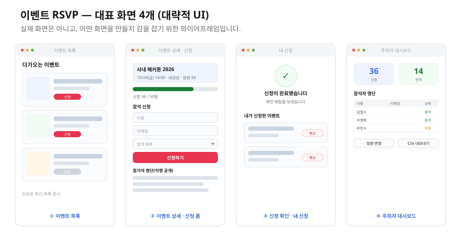
참석자는 ① 이벤트 목록에서 관심 이벤트를 고르고 ② 상세 화면의 신청 폼으로 참석을 신청하며, ③ 내 신청 화면에서 확인·취소합니다. 주최자는 ④ 대시보드에서 신청 현황과 명단을 보고 정원을 조정합니다. 이 네 화면을 기준으로 이후 강의 프론트엔드·백엔드·데이터 설명이 이어집니다.
2. 아키텍처 한눈에
이 서비스를 프론트엔드·백엔드·데이터·인프라 네 계층으로 나눠 정리하면 다음과 같습니다. 각 계층의 구체적인 원리는 기술 기초 파트(2~5강)에서 이 서비스를 예시로 풀어갑니다.
프론트엔드. Next.js + React + TypeScript로 만들고, Tailwind CSS + shadcn/ui로 스타일링하며, 폰·태블릿·PC를 아우르는 반응형 웹입니다. 페이지 성격에 따라 렌더링 전략을 다르게 씁니다 — 회사 소개·이벤트 상세는 SSG(+시간당 ISR), 이벤트 목록은 SSR, 신청 폼·대시보드는 CSR, 개인 신청 내역은 SSR입니다. 대표 화면은 이벤트 목록, 이벤트 상세+신청 폼, 신청 확인/내 신청, 주최자 대시보드 네 개입니다.
백엔드. Python FastAPI(대안 Node.js/NestJS)로 REST API를 제공합니다(예: /api/v1/events/{id}/rsvp). 인증·권한은 JWT + RBAC로, 역할은 일반 참석자·이벤트 호스트·관리자 셋입니다. 비즈니스 규칙은 반드시 백엔드가 강제합니다 — 마감(400), 정원 초과(409), 중복 신청(409), 종료 후에는 조회만입니다. 동시 신청은 트랜잭션 + 행 잠금(ACID)으로 오버부킹을 막습니다. 운영 측면에서는 캐싱(Redis)·이메일 비동기 큐·로드밸런싱·로깅/모니터링을 두고, 배포는 Docker + CI/CD로 합니다.
데이터. PostgreSQL(정규화)을 쓰되, MVP는 Supabase(BaaS)로 시작해 규모가 커지면 자체 스택으로 옮깁니다. 테이블은 네 개입니다 — users(id·email·name), events(id·title·capacity·created_by·scheduled_at), rsvps(id·user_id·event_id·status·created_at), admins(user_id·event_id·permission). 접근은 RLS(행 단위)로 통제합니다. 사용자는 본인 행, 호스트는 담당 이벤트, 관리자는 전체를 봅니다. 파일은 성격에 따라 나눕니다 — 포스터는 S3 + CDN(공개), 개인 증명 PDF는 S3(비공개) + 서명된 URL, 당일 사진은 S3(관리자만)입니다.
인프라·배포·보안. 프론트는 Vercel(PaaS), DB는 Supabase(BaaS)에 자동 CI/CD로 배포합니다. 도메인은 rsvp.ourcompany.com(A 레코드)이고 HTTPS는 Let's Encrypt로 자동 발급됩니다. 시크릿은 배포 플랫폼의 환경 변수 패널에 두고(코드·Git에 두지 않음) 주기적으로 회전합니다. 보안은 매개변수화 쿼리·이스케이프·SameSite 쿠키·MFA의 다층 방어로, 모니터링은 Sentry+분석에서 Slack 알림으로 잇습니다. 개인정보는 동의 체크와 처리방침(수집·목적·보관기간 30일 명시)을 두고 PIPA/GDPR를 고려합니다.
3. 강별로 RSVP의 어떤 면을 쓰나
| 파트 · 강 |
RSVP를 이렇게 활용 |
| 기술 기초 2강 프론트엔드 |
목록 페이지 목업(세 계층), 화면별 정적/동적·렌더링 모드·스택 선택 |
| 기술 기초 3강 백엔드 |
다섯 책임, API 명세, JWT+RBAC 권한 매트릭스, 규칙 4관문, 트랜잭션 오버부킹 |
| 기술 기초 4강 데이터 |
데이터 4종류, ERD(4테이블), 정규화, 객체 스토리지+CDN, RLS 정책, 데이터 흐름 |
| 기술 기초 5강 인프라·배포·보안 |
4계층·클라우드·DNS·HTTPS·보안 위협·시크릿·모니터링·법규·인프라 구성 |
| 코딩 with Claude 초급 4강 |
Cowork으로 RSVP 웹앱을 만드는 전체 워크플로우(생성→DB→배포) |
| 코딩 with Claude 중급·고급 |
커맨드·서브에이전트·hooks·MCP·품질 게이트·멀티에이전트를 RSVP 운영에 적용 |
이제 이 서비스를 머릿속에 두고, 기술 기초 파트부터 시작합니다. 개발을 몰라도 괜찮습니다. 각 강이 이 RSVP 서비스를 하나씩 뜯어보며 "화면 뒤에서 무슨 일이 벌어지는가"를 설명합니다.
4부 · 고급
코딩 with Claude 고급 1강. 스킬·플러그인 자체 제작과 사내 마켓플레이스
유형: 이론 (다이어그램 보강판) · 읽는 데 약 50분
선수: 입문·중급 전 과정. 특히 중급 2강(커스텀 커맨드)·3강(서브에이전트)·4강(Hooks)·5강(자체 MCP 활용)에서 다룬 스킬·커맨드·훅·MCP의 개념에 익숙해야 합니다.
이 강을 마치면: ① SKILL.md를 심화 frontmatter와 본문 7영역으로 자산화한다 ② 스킬·커맨드·에이전트·훅·MCP를 plugin.json으로 한 패키지로 묶는다 ③ git 저장소와 CDN으로 사내 마켓플레이스를 구성한다 ④ 버전 관리·업데이트·롤백을 SemVer로 운영한다 ⑤ 사용량 추적과 권한·승인 워크플로우를 설계하고 흔한 함정을 피한다.
0. 들어가며 — 활용에서 제작으로
입문과 중급까지는 마켓플레이스에 이미 올라와 있는 스킬·플러그인을 가져다 쓰는 단계였습니다. 좋은 도구를 골라 설치하고, 커스텀 커맨드로 반복 작업을 줄이고, 서브에이전트에게 일을 나눠 주는 활용의 기술이었습니다. 고급 1강부터는 결이 바뀝니다. 이제는 본인 회사·도메인에 특화한 자산을 직접 만들어, 사내 직원 수십에서 수백 명이 함께 쓰는 단계로 들어갑니다.
이 전환이 왜 중요한지는 세 가지 가치로 정리됩니다.
- 도메인 지식의 자산화 — 베테랑 기획자 한 사람의 머릿속에만 있던 노하우를 스킬로 굳혀 두면, 그 사람이 조직을 떠난 뒤에도 노하우는 회사에 남습니다. 사람에 묶여 있던 암묵지가 회사의 명시적 자산이 됩니다.
- 표준화 — 모든 직원이 같은 워크플로우로 같은 형식의 결과물을 만듭니다. 계약서 검토든 마케팅 카피든, 담당자에 따라 품질이 들쭉날쭉하던 작업이 조직 표준으로 수렴합니다.
- 신입 온보딩 가속 — 새로 입사한 직원이 첫날부터 시니어의 워크플로우를 그대로 씁니다. 몇 달에 걸쳐 몸으로 익히던 회사 룰이 플러그인 하나에 담겨 있으므로, 온보딩 곡선이 극적으로 짧아집니다.
이 강은 그 자산을 만드는 전 과정을 다룹니다. 스킬 하나를 제대로 쓰는 법(SKILL.md 심화)에서 시작해, 여러 확장 기능을 한 묶음으로 만드는 법(plugin.json), 그것을 사내에 유통하는 법(마켓플레이스), 오래 굴리는 법(버전 관리·사용량 추적·승인 거버넌스)까지 이어집니다.
📌 러닝 예시 — 이 강에서도 사내 이벤트 RSVP 서비스(참석 신청·취소·정원 관리)를 예시로 씁니다. 원문의 부동산 도메인 예시(realestate-pro)는 그대로 살리되, "우리 회사의 RSVP 운영 노하우를 스킬로 굳혀 사내에 배포한다"는 상황을 겹쳐 떠올리면 이해가 쉽습니다. 예컨대 RSVP의 정원 초과 처리 규칙, 대기자 승급 정책, 개인정보 마스킹 룰을 스킬 본문에 녹여 두면, 이벤트를 운영하는 어느 팀이 설치하든 같은 규칙이 적용됩니다.
1. SKILL.md 작성 심화
1.1 복습 — 기본 SKILL.md
입문에서 다룬 SKILL.md의 기본 구조는 frontmatter에 name·description만 두고, 그 아래에 시스템 프롬프트를 적는 형태였습니다.
---
name: korean-business-email
description: 한국 직장 문화에 맞는 비즈니스 이메일 작성
---
# 시스템 프롬프트
당신은 한국 직장 문화에 밝은 비즈니스 이메일 작성 전문가입니다.
...
이 정도로도 스킬은 동작합니다. 그러나 본격적으로 조직 자산으로 삼으려면 이 위에 메타데이터를 두껍게 얹고, 본문을 체계적으로 구성해야 합니다. 아래 그림이 자산화된 SKILL.md의 전체 골격입니다.
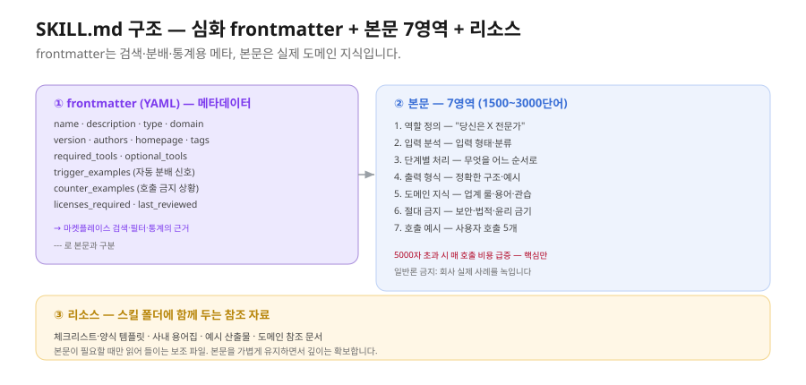
1.2 심화 frontmatter 필드
자산화된 스킬의 frontmatter는 단순한 이름표가 아니라, 마켓플레이스가 검색·필터·통계·자동 분배에 쓰는 데이터입니다. RSVP나 부동산 같은 도메인 스킬이라면 다음 필드를 갖춥니다.
---
name: real-estate-contract-reviewer
description: |
부동산 계약서 검토. 임대·매매·전세 모두 지원.
계약서 PDF 또는 텍스트를 받아 위험 조항·누락 조항·불공정 조항 추출.
법률 상담은 아니지만 변호사 검토 전 1차 필터.
type: domain # general | domain | workflow | review
domain: real-estate # 도메인 분류
authors: ["김기획자 <kim@example.com>"]
version: 1.2.0
homepage: https://internal.example.com/skills/real-estate-contract-reviewer
tags: [real-estate, contract, legal, korean]
required_tools: [Read, Grep] # 이 스킬이 반드시 쓰는 도구
optional_tools: [WebSearch]
trigger_examples: # 자동 분배가 이 스킬을 고르게 하는 신호
- "이 임대 계약서 검토해줘"
- "전세 계약서에서 위험한 부분 찾아줘"
counter_examples: # 이 스킬을 호출하면 안 되는 경우
- "임대료 시세 알려줘" # 검색 작업이지 검토가 아님
licenses_required: [] # 외부 데이터·API 라이선스
last_reviewed: 2026-04-15
---
각 필드의 역할을 짚어 보면 이렇습니다. type은 스킬의 성격을 general(범용)·domain(도메인 특화)·workflow(작업 흐름)·review(검토) 넷으로 분류합니다. trigger_examples는 메인 에이전트가 사용자 요청을 보고 이 스킬을 자동으로 골라 쓸지 판단하는 신호이고, counter_examples는 반대로 비슷해 보여도 이 스킬을 쓰면 안 되는 경우를 못 박아 오분배를 막습니다. required_tools·optional_tools는 권한 검증과 호환성 점검의 근거가 되고, licenses_required·last_reviewed는 뒤에서 다룰 승인·감사 워크플로우가 참조합니다. 이 필드들이 충실히 채워져 있어야 마켓플레이스에서 검색·필터·통계가 풍부해집니다.
1.3 본문 — 7가지 영역
좋은 SKILL.md 본문은 다음 일곱 영역으로 짜입니다.
- 역할 정의 — "당신은 X 전문가"로 페르소나를 못 박습니다.
- 입력 분석 — 어떤 형태의 입력이 오는지, 그것을 어떻게 분류할지 정합니다.
- 단계별 처리 — 무엇을 어느 순서로 처리할지 절차를 명시합니다.
- 출력 형식 — 결과의 정확한 구조를 예시와 함께 고정합니다.
- 도메인 지식 — 회사·업계에 특화한 룰·용어·관습을 담습니다. 이 영역이 스킬의 진짜 값어치입니다.
- 절대 금지 — 보안·법적·윤리적으로 넘지 말아야 할 선을 명시합니다.
- 호출 예시 — 사용자가 실제로 어떻게 호출할지 다섯 개를 보여 줍니다.
본문 분량은 1,500~3,000단어가 적정합니다. 5,000자를 넘어가면 스킬이 호출될 때마다 그 본문 전체가 컨텍스트에 실려 매 호출 비용이 커집니다. 그러므로 본문에는 핵심 도메인 지식만 남기고, 부수적인 참조 자료는 뒤의 리소스 파일로 분리합니다.
특히 5번 도메인 지식 영역이 관건입니다. "한국 직장 문화"처럼 추상적으로만 쓰면 어느 조직에서나 나올 법한 일반론이 되어 버립니다. RSVP라면 "정원이 꽉 찬 뒤 신청이 들어오면 자동으로 대기자 명단에 넣고, 취소가 발생하면 대기 순번대로 승급 안내를 보낸다" 같은 회사 실제 룰 다섯 개 이상을 본문에 구체적으로 녹여야 스킬에 깊이가 생깁니다.
1.4 스킬 평가 자동화
새로 만든 스킬은 감으로 게시하지 않고 자동 평가를 한 번 거칩니다. Cowork에 다음과 같이 지시하면, 여러 관점을 한 번에 점검하는 평가 워크플로우가 돌아갑니다.
"이 스킬(real-estate-contract-reviewer)을 평가해줘:
1. 다양한 계약서 샘플 5개로 호출해 결과 품질을 본다
2. trigger_examples 5개가 정말 이 스킬로 자동 분배되는지 확인한다
3. counter_examples로 호출했을 때 다른 스킬로 가는지 확인한다
4. 출력 형식이 일관된지 본다
5. 토큰·시간 비용을 측정한다
결과를 평가 리포트로 정리해줘."
이 다섯 항목 점검이 사내 마켓플레이스 게시 기준이 됩니다. 특히 2·3번은 앞서 frontmatter에 적은 trigger_examples·counter_examples가 실제로 자동 분배에서 제대로 작동하는지 검증하는 절차입니다. 평가 결과는 뒤의 tests/eval.json에 담아 두면, 버전을 올릴 때마다 회귀 검증에 재사용할 수 있습니다.
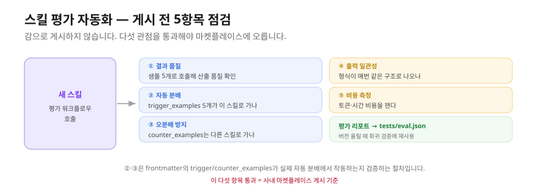
2. plugin.json과 메타데이터
2.1 플러그인이란
플러그인은 스킬·커맨드·MCP·훅·서브에이전트를 한 패키지로 묶은 것입니다. 흩어진 확장 기능을 개별적으로 설치하게 하면 직원마다 구성이 달라지지만, 플러그인으로 묶으면 직원이 "한 줄"로 설치해 조직 표준을 그대로 받습니다. 아래 그림이 플러그인 패키지의 표준 구성입니다.
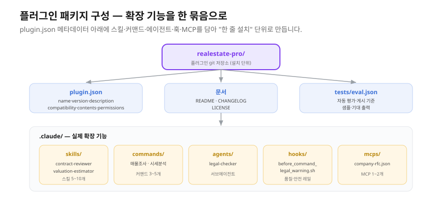
2.2 표준 폴더 구조
플러그인은 하나의 git 저장소로 관리하며, 최상위에 메타데이터·문서·테스트를, .claude/ 아래에 실제 확장 기능을 둡니다.
realestate-pro/ # 플러그인 git 저장소 (= 설치 단위)
├── plugin.json # 메타데이터
├── README.md # 사용 가이드
├── CHANGELOG.md # 버전 이력
├── LICENSE # 라이선스
├── .claude/
│ ├── skills/ # 스킬 5~10개
│ │ ├── contract-reviewer.md
│ │ └── valuation-estimator.md
│ ├── commands/ # 커맨드 3~5개
│ │ ├── 매물조사.md
│ │ └── 시세분석.md
│ ├── agents/ # 서브에이전트
│ │ └── legal-checker.md
│ ├── hooks/ # 품질·안전 레일
│ │ └── before_command_legal_warning.sh
│ └── mcps/ # 묶음 MCP 등록 정보
│ └── company-rfc.json
└── tests/ # 자동 평가
└── eval.json
이 구조는 중급에서 개별적으로 배운 확장 기능들이 하나의 지붕 아래로 모이는 지점입니다. 스킬(도메인 지식), 커맨드(반복 작업 단축), 서브에이전트(격리된 위임), 훅(품질·안전 레일), MCP(사내 시스템 연동)가 모두 한 저장소에 담겨, 설치하면 통째로 활성화됩니다.
2.3 plugin.json 예시
plugin.json은 이 패키지의 신분증입니다. 이름·버전·설명 같은 기본 정보 외에, 호환성·구성 요소 개수·의존성·필요 권한·승인 상태까지 담습니다.
{
"name": "realestate-pro",
"version": "1.2.0",
"description": "한국 부동산 도메인 자동화 풀세트 (계약·시세·매물·법률).",
"author": { "name": "Real Estate Tech Team", "email": "re-tech@example.com" },
"homepage": "https://internal.example.com/plugins/realestate-pro",
"repository": "https://github.com/example/realestate-pro",
"license": "Internal-Use-Only",
"tags": ["real-estate", "korean", "domain"],
"compatibility": {
"claude_cowork": ">=0.5.0",
"claude_code": ">=2.0.0"
},
"contents": { "skills": 8, "commands": 5, "agents": 2, "hooks": 1, "mcps": 1 },
"dependencies": { "company-internal-mcp": ">=1.0.0" },
"permissions_required": ["filesystem.read", "network.https"],
"approval_status": "approved-2026-04-15",
"approval_by": ["legal-team", "security-team", "domain-lead"]
}
여기서 눈여겨볼 세 필드가 있습니다. compatibility는 이 플러그인이 어느 버전의 Cowork·Claude Code에서 동작하는지를 명시해 버전 충돌을 예방합니다. dependencies는 이 플러그인이 필요로 하는 다른 자산(예: 사내 MCP)을 선언해, 설치 시 자동으로 함께 설치되게 합니다. permissions_required는 이 플러그인이 요구하는 권한(파일 읽기·HTTPS 통신 등)을 투명하게 드러내, 승인 검토자가 위험을 판단할 근거가 됩니다. approval_status·approval_by는 뒤의 승인 워크플로우 결과가 기록되는 자리입니다.
2.4 README.md — 직원 사용 가이드
README는 직원이 마켓플레이스에서 이 플러그인을 클릭했을 때 보는 페이지입니다. 다음 영역을 갖추면 "무엇을 설치하고 어떻게 쓰는지"가 한눈에 전달됩니다.
- 이 플러그인이 무엇인가 — 세 줄 요약
- 누가 쓰면 좋나 — 역할 매트릭스
- 설치 방법 — 명령 한 줄
- 포함된 기능 — 스킬·커맨드 목록과 호출 예시
- 자주 묻는 질문
- 문제 발생 시 연락처
- 변경 이력 링크
README가 부실하면 아무리 좋은 플러그인도 "죽은 공간"이 됩니다. 이 점은 마지막 함정 절에서 다시 강조합니다.
3. 사내 마켓플레이스 — git 저장소와 CDN
3.1 사내 마켓플레이스란
사내 마켓플레이스는 회사 직원이 자기 회사 도메인 플러그인을 검색·설치할 수 있는 시스템입니다. 규모에 따라 세 가지 구현 방식이 있습니다.
- A. git 저장소 모음 + index.json — 가장 단순합니다. 사내 git에 플러그인 저장소를 여러 개 두고, 별도의 메타 저장소에 전체 목록을 담은 인덱스를 둡니다.
- B. 자체 마켓플레이스 웹 + API — 중간 규모입니다. 검색·평점·다운로드 통계 같은 기능을 웹으로 제공합니다.
- C. 공식 마켓플레이스 + private 옵션 — 가장 큰 규모입니다. Anthropic이 사내 private 마켓플레이스를 지원하는 미래 시나리오입니다.
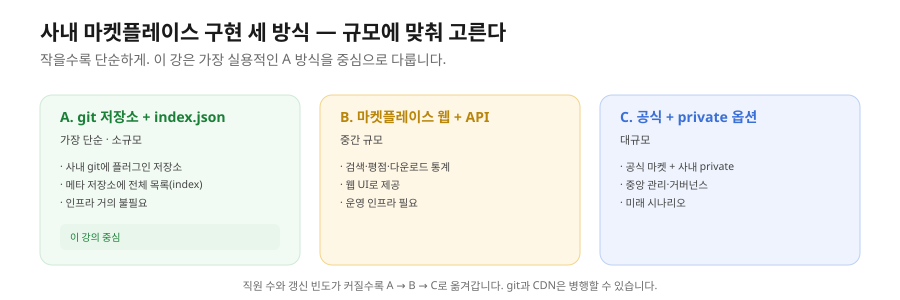
이 강은 가장 실용적인 A 방식을 중심으로 다룹니다. 아래 그림이 A 방식의 배포 흐름입니다. 메타 저장소의 인덱스가 목록을 관리하고, 플러그인 저장소들이 실제 코드를 담으며, 필요하면 CDN이 빠른 배포를 보조하고, 직원은 한 줄 명령으로 이 흐름의 끝에서 설치합니다.
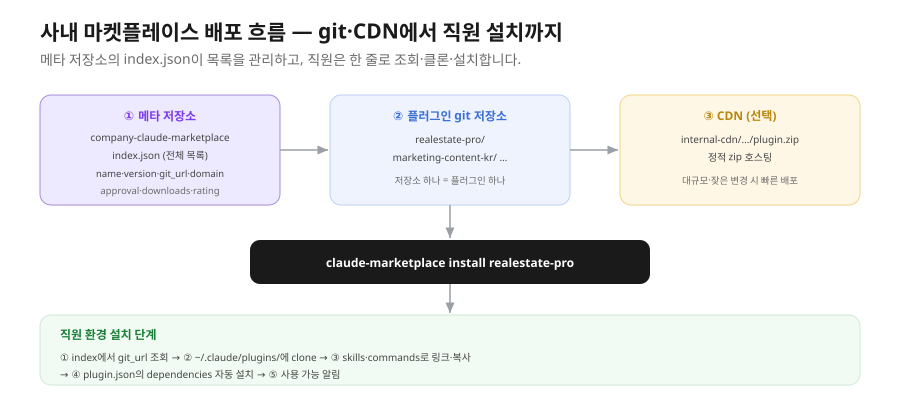
3.2 마켓플레이스 인덱스 구조
메타 저장소는 다음과 같이 구성합니다.
company-claude-marketplace/ # 메타 git 저장소
├── README.md
├── index.json # 모든 플러그인 목록
├── search.html # 직원이 보는 검색 페이지 (선택)
└── docs/
├── 신규_플러그인_등록_가이드.md
└── 정책.md
핵심은 index.json입니다. 모든 플러그인의 이름·버전·설명·도메인·git 주소·승인 상태·다운로드 수·평점을 한 파일에 담아, 설치 도구와 검색 페이지가 이 한 곳을 참조하게 만듭니다.
{
"marketplace_version": "1.0.0",
"updated_at": "2026-04-29",
"plugins": [
{
"name": "realestate-pro",
"version": "1.2.0",
"description": "한국 부동산 도메인 자동화 풀세트.",
"domain": "real-estate",
"git_url": "https://github.com/example/realestate-pro",
"approval_status": "approved",
"downloads": 145,
"rating": 4.6
}
]
}
3.3 직원 설치 도구
직원은 CLI 한 줄이나 Cowork 자연어로 설치합니다.
# 자체 CLI
claude-marketplace install realestate-pro
# 또는 Cowork 자연어
"realestate-pro 플러그인 설치해줘"
이 명령이 내부적으로 하는 일은 다섯 단계입니다. ① 인덱스에서 git_url을 조회하고, ② ~/.claude/plugins/realestate-pro/에 저장소를 클론하며, ③ 스킬·커맨드 등을 ~/.claude/skills/·~/.claude/commands/에 심볼릭 링크나 복사로 연결하고, ④ plugin.json의 dependencies를 자동으로 함께 설치한 뒤, ⑤ 사용 가능 알림을 띄웁니다. 직원 입장에서는 한 줄이지만, 그 뒤로 조회·클론·연결·의존성 해결이 자동으로 처리됩니다.
3.4 CDN 옵션
git 클론 대신, 정적 파일 서버에 zip을 호스팅하는 방식도 있습니다.
https://internal-cdn.example.com/claude-plugins/realestate-pro/1.2.0/plugin.zip
CDN 방식은 다운로드가 빠릅니다. 직원 수가 많은 큰 회사나, 자주 갱신되어 트래픽이 몰리는 플러그인은 CDN에 얹어 배포합니다. 반대로 규모가 크지 않고 변경이 잦지 않다면 git 저장소만으로 충분합니다. 두 방식은 배타적이지 않아, 인덱스에는 git_url을 두고 실제 배포는 CDN을 쓰는 식으로 병행할 수도 있습니다.
4. 버전 관리·업데이트·롤백
4.1 Semantic Versioning
플러그인 버전은 MAJOR.MINOR.PATCH 세 자리로 매깁니다. 각 자리의 의미가 명확해야 직원이 업데이트할지, 롤백할지를 판단할 수 있습니다.
- MAJOR — 호환이 깨지는 변경 (1.x → 2.0). 기존 사용 방식이 달라질 수 있으므로 신중히 올립니다.
- MINOR — 호환을 유지하는 기능 추가 (1.1 → 1.2). 안심하고 올릴 수 있습니다.
- PATCH — 버그 수정 (1.2.0 → 1.2.1). 되도록 즉시 올립니다.
모든 변경은 CHANGELOG.md에 기록합니다. 이 기록이 뒤의 롤백 판단에서 "어느 버전에서 무엇이 바뀌었나"를 알려 주는 근거가 됩니다. 아래 그림이 버전이 흐르다 문제가 생겼을 때 롤백까지 이어지는 전체 그림입니다.
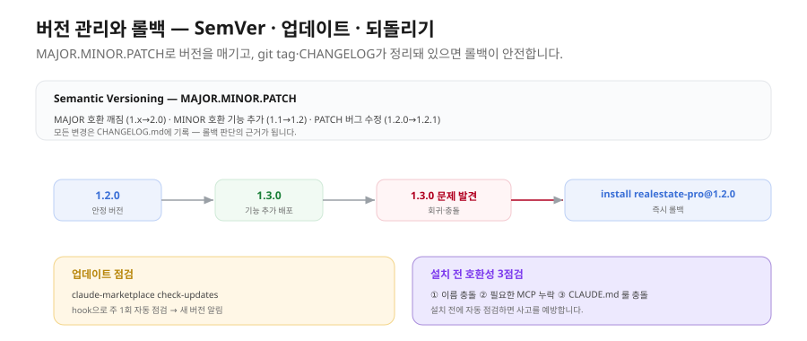
4.2 자동 업데이트 알림
직원이 설치한 플러그인의 새 버전이 나오면 자동으로 알립니다.
claude-marketplace check-updates
# realestate-pro: 1.2.0 → 1.3.0 (변경: 매물조사 커맨드 개선)
# Update? [Y/n]
이 점검을 훅으로 주 1회 자동 실행하면, 직원이 신경 쓰지 않아도 최신 버전 알림이 뜹니다. 중급 4강에서 배운 훅(자동 트리거)이 여기서 "정기 점검"이라는 형태로 재등장하는 셈입니다.
4.3 롤백
새 버전에 문제가 있으면 즉시 이전 버전으로 되돌립니다.
claude-marketplace install realestate-pro@1.2.0
버전을 명시해 재설치하면 그 버전으로 내려갑니다. 이 롤백이 안전하려면 git tag와 CHANGELOG가 잘 정리돼 있어야 합니다. 각 버전이 태그로 고정돼 있어야 정확히 그 시점의 코드로 돌아갈 수 있고, CHANGELOG가 있어야 "무엇 때문에 문제가 생겼고 어느 버전이 마지막 정상이었나"를 판단할 수 있습니다.
4.4 호환성 점검
새 버전을 설치하기 전에, 그 버전이 내 환경의 다른 플러그인·CLAUDE.md·설정과 충돌하지 않는지 미리 점검합니다.
"realestate-pro 1.3.0을 내 환경에 설치하기 전에 세 가지를 점검해줘:
1. 다른 플러그인과 이름이 충돌하는가
2. 필요한 MCP가 누락되지는 않았는가
3. 내 CLAUDE.md 룰과 충돌하는가"
설치는 되지만 실행 시점에야 충돌이 드러나면 곤란하므로, 이 세 가지를 설치 전에 확인하는 습관이 사고를 예방합니다.
5. 사용량 추적
5.1 무엇을 추적하나
플러그인을 사내에 배포한 뒤에는, 조직 단위로 다음을 추적해 운영 판단의 근거로 삼습니다.
- 누가 언제 어떤 스킬·커맨드를 호출했는가
- 호출별 토큰·시간 비용은 얼마인가
- 결과물 품질은 어떤가 (사용자 만족도·재시도율)
- 어떤 플러그인이 인기 있는가
- 어떤 스킬이 사용되지 않는가 (제거 후보)
이 데이터가 있어야 "무엇을 더 키우고 무엇을 접을지"를 감이 아니라 숫자로 결정할 수 있습니다.
5.2 구현 — SessionEnd 훅 활용
추적은 매 세션이 끝날 때 훅으로 사내 분석 시스템에 로그를 보내는 방식으로 구현합니다. 중급 4강에서 다룬 SessionEnd 훅이 여기서 조직 로깅의 통로가 됩니다.
# .claude/hooks/session_end_company_log.py
import os, requests
LOG_API = "https://internal.example.com/api/cowork-logs"
COMPANY_API_TOKEN = os.environ.get("COMPANY_API_TOKEN")
data = {
"user": os.environ.get("CLAUDE_USER_EMAIL"),
"timestamp": os.environ.get("CLAUDE_SESSION_END_TIME"),
"duration_sec": os.environ.get("CLAUDE_SESSION_DURATION_SEC"),
"tokens": os.environ.get("CLAUDE_SESSION_TOKENS"),
"skills_used": os.environ.get("CLAUDE_SKILLS_INVOKED", "").split(","),
"commands_used": os.environ.get("CLAUDE_COMMANDS_INVOKED", "").split(","),
"project": os.environ.get("CLAUDE_PROJECT_NAME"),
}
requests.post(LOG_API, json=data,
headers={"Authorization": f"Bearer {COMPANY_API_TOKEN}"}, timeout=5)
직원이 회사 표준 훅을 설치하면 이 로깅이 자동으로 이뤄집니다. 여기서 반드시 지킬 원칙은, 작업 내용(content)은 절대 보내지 않고 메타데이터만 보낸다는 것입니다. API 토큰도 코드에 하드코딩하지 않고 환경변수에서 읽습니다. 아래 그림이 훅에서 로그 API를 거쳐 대시보드로 이어지는 흐름과, 그 위에 얹는 프라이버시 원칙을 함께 보여 줍니다.
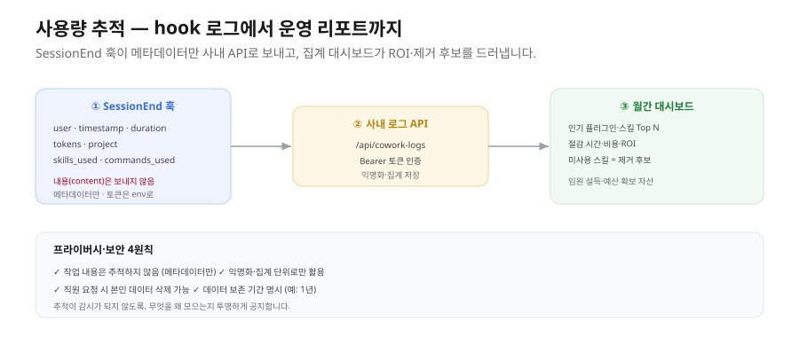
5.3 운영 대시보드
집계된 데이터로 매월 운영 리포트를 만듭니다.
2026년 4월 사내 Cowork 사용 리포트
- 총 사용자: 87명 · 총 호출: 3,421회
- 인기 플러그인 Top 5 / 인기 스킬 Top 10
- 평균 절감 시간: 6.4시간/주·사용자
- 비용: $1,245 (Anthropic) + $89 (자체 인프라)
- 시간 절감 가치(추정): $12,340 · ROI: 9.2배
이 리포트는 두 방향으로 쓰입니다. 위로는 임원 설득과 예산 확보의 자산이 되고, 아래로는 "사용량이 월 1회 미만인 스킬"을 제거 후보로 드러내 마켓플레이스를 건강하게 유지합니다.
5.4 프라이버시·보안
사용량 추적이 감시로 변질되지 않도록 다음 네 원칙을 지킵니다.
- 작업 내용은 추적하지 않습니다. 메타데이터만 다룹니다.
- 익명화·집계 단위로만 활용합니다.
- 직원이 원하면 본인 데이터를 삭제할 수 있게 합니다.
- 데이터 보존 기간을 명시합니다 (예: 1년).
무엇을 왜 모으는지 투명하게 공지하는 것이 추적 제도를 지속 가능하게 만드는 전제입니다.
6. 권한·승인 워크플로우
6.1 새 플러그인 게시 절차
직원이 플러그인을 만들었다고 곧바로 사내 마켓플레이스에 올리지는 않습니다. 자동 검토와 사람 검토를 모두 통과해야 게시됩니다. 아래 그림이 작성에서 게시까지의 전체 워크플로우입니다.
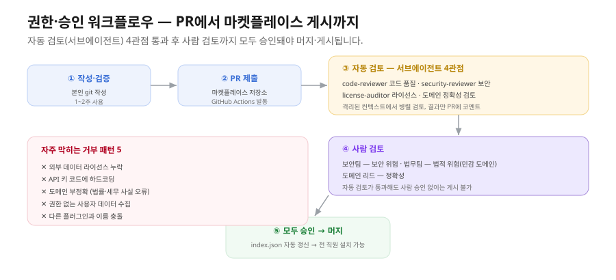
절차는 다음과 같습니다.
- 직원이 본인 git에 플러그인을 작성합니다.
- 본인 환경에서 1~2주 사용하며 검증합니다.
- 사내 마켓플레이스 git 저장소에 PR을 냅니다.
- 네 관점의 자동 검토가 서브에이전트로 돌아갑니다 — 코드 품질·보안(비밀 키·취약점)·라이선스(외부 데이터·코드)·도메인 정확성.
- 이어서 사람 검토자가 확인합니다 — 보안팀은 보안 위험을, 법무팀은 법적 위험을(도메인이 법무·재무 등 민감할 때), 도메인 리드는 정확성을 봅니다.
- 모두 승인되면 머지되고 마켓플레이스 인덱스가 자동 갱신됩니다.
여기서 4번의 자동 검토가 중급 3강의 서브에이전트를 조직 차원으로 확장한 사례입니다. code-reviewer·security-reviewer·license-auditor 같은 서브에이전트가 격리된 컨텍스트에서 병렬로 검토하고, 결과만 PR에 코멘트로 돌려줍니다.
6.2 GitHub Actions로 자동화
이 워크플로우는 GitHub Actions로 자동 발동하게 만듭니다. plugins/** 경로가 바뀌는 PR이 열리면 자동 검토 잡이 돌고, 통과하면 사람 검토자를 자동으로 지정합니다.
name: Plugin Review
on:
pull_request:
paths: ['plugins/**']
jobs:
auto-review:
runs-on: ubuntu-latest
steps:
- uses: actions/checkout@v4
- run: claude-cli sub code-reviewer --target=PR
- run: claude-cli sub security-reviewer --target=PR
- run: claude-cli sub license-auditor --target=PR
human-review:
needs: auto-review
runs-on: ubuntu-latest
steps:
- name: Request reviewers
uses: actions/request-reviewers
with:
reviewers: ['security-team', 'legal-team']
자동 검토(auto-review)가 먼저 돌고, 그것이 끝나야(needs: auto-review) 사람 검토 요청이 나가는 순서가 핵심입니다. 자동 검토가 걸러낼 것을 사람이 다시 볼 필요가 없도록, 기계가 앞단을 맡고 사람이 최종 판단만 합니다.
6.3 자주 막히는 거부 패턴
게시 심사에서 자주 반려되는 다섯 가지를 미리 게시 가이드에 명시해 두면, 직원이 처음부터 이를 피해 만들 수 있습니다.
- 외부 데이터 라이선스 누락 — Web에서 가져온 데이터를 라이선스 명시 없이 사용
- API 키 하드코딩 — 비밀 키를 코드에 그대로 박아 둠
- 도메인 부정확 — 법률·세무 등에서 사실 오류
- 사용자 사생활 침해 — 권한 없는 데이터 수집
- 이름 충돌 — 다른 플러그인과 이름이 겹침
6.4 폐기와 deprecation
쓰이지 않는 플러그인은 정기적으로 정리합니다. 방치하면 마켓플레이스가 검색 노이즈로 가득 차기 때문입니다.
- 사용량이 월 1회 미만이면 deprecation 후보로 표시합니다.
- deprecation을 예고하고, 3개월 뒤 마켓플레이스에서 제거합니다.
- git 저장소는 archive 상태로 유지해 이력을 보존합니다.
제거는 하되 이력은 남기는 것이 원칙입니다. 언젠가 비슷한 자산을 다시 만들 때 archive된 저장소가 출발점이 됩니다.
7. 흔한 함정
자체 제작과 사내 배포에서 반복해서 마주치는 다섯 가지 함정입니다.
7.1 1인 작품으로 끝난다
본인 환경에서만 동작하고, 다른 사람 환경(다른 OS·다른 권한·다른 MCP)에서 깨집니다. 해결: 게시 전에 동료 두세 명에게 설치시켜 작동을 점검합니다.
7.2 도메인 깊이가 부족하다
스킬 본문이 일반론에 그칩니다. "한국 직장 문화" 같은 표현이 너무 추상적입니다. 해결: 본인 회사의 실제 사례 다섯 개 이상을 본문에 구체적으로 녹입니다. RSVP라면 실제 정원·대기자·취소 처리 규칙을 그대로 담습니다.
7.3 라이선스를 오해한다
Web에서 가져온 데이터·이미지를 그대로 사용합니다. 해결: 모든 외부 자산의 라이선스를 명시하고, 확실하지 않으면 회사 자산만 사용합니다.
7.4 보안 검토를 회피한다
"내가 만든 거니까 안전하다"고 가정하지만, 실제로는 비밀 키나 민감 정보가 섞여 들어갑니다. 해결: 자동 보안 검사와 사람 검토를 둘 다 통과한 뒤에만 게시합니다.
7.5 마켓플레이스가 죽은 공간이 된다
플러그인은 게시됐는데 직원이 그 존재를 모릅니다. 해결: 사내 공지·교육과 함께, 새 플러그인을 발표하는 채널을 운영합니다. 좋은 자산도 알려지지 않으면 쓰이지 않습니다.
용어 정리
| 용어 |
뜻 |
| SKILL.md |
스킬의 정의 파일. frontmatter(메타)와 본문(도메인 지식)으로 구성 |
| frontmatter |
SKILL.md 상단의 YAML 메타데이터. 검색·필터·자동 분배·통계의 근거 |
| trigger_examples |
메인 에이전트가 이 스킬을 자동으로 고르게 하는 호출 예시 신호 |
| counter_examples |
비슷해 보여도 이 스킬을 쓰면 안 되는 경우를 못 박는 반례 |
| 플러그인(plugin) |
스킬·커맨드·에이전트·훅·MCP를 한 패키지로 묶어 "한 줄 설치"하는 단위 |
| plugin.json |
플러그인의 신분증. 버전·호환성·구성·의존성·권한·승인 상태를 담음 |
| 사내 마켓플레이스 |
직원이 사내 도메인 플러그인을 검색·설치하는 시스템 |
| index.json |
마켓플레이스 메타 저장소의 전체 플러그인 목록 파일 |
| CDN |
정적 zip을 호스팅해 다운로드를 빠르게 하는 배포 옵션 |
| Semantic Versioning |
MAJOR.MINOR.PATCH로 호환성·기능·버그 수정을 구분하는 버전 규칙 |
| 롤백(rollback) |
문제 있는 새 버전을 이전 버전으로 되돌리는 것. git tag·CHANGELOG가 전제 |
| CHANGELOG |
버전별 변경 이력. 업데이트·롤백 판단의 근거 |
| 사용량 추적 |
메타데이터만 수집해 인기·비용·제거 후보를 파악하는 조직 운영 데이터 |
| 승인 워크플로우 |
자동 검토(서브에이전트 4관점) + 사람 검토를 거쳐 게시하는 절차 |
| deprecation |
미사용 플러그인을 예고 후 제거하되 archive로 이력을 보존하는 과정 |
한눈에 정리
- 자산화된 SKILL.md는 메타·본문·리소스로 나뉜다. frontmatter는 검색·자동 분배·통계의 근거가 되는 메타데이터, 본문 7영역은 실제 도메인 지식(회사 실제 사례 다섯 개 이상), 리소스는 본문을 가볍게 유지하며 깊이를 보태는 참조 파일입니다. 본문 5,000자 초과는 매 호출 비용을 키웁니다.
- 플러그인은 확장 기능을 한 묶음으로 만든다. 스킬·커맨드·에이전트·훅·MCP를 plugin.json 아래 하나의 git 저장소로 묶어, 직원이 한 줄로 설치해 조직 표준을 그대로 받습니다.
- 사내 마켓플레이스는 index.json이 중심이다. 메타 저장소의 인덱스가 목록을 관리하고, 플러그인 저장소가 코드를, CDN이 빠른 배포를 맡습니다. 설치 명령 한 줄 뒤로 조회·클론·연결·의존성 해결이 자동으로 처리됩니다.
- 버전은 SemVer로, 롤백은 tag·CHANGELOG로 안전하게. MAJOR.MINOR.PATCH로 변경 성격을 구분하고, 새 버전 문제 시 버전 명시 재설치로 즉시 되돌립니다. 설치 전 이름 충돌·MCP 누락·CLAUDE.md 충돌을 점검합니다.
- 운영은 추적과 승인 거버넌스로 완성된다. SessionEnd 훅이 메타데이터만 수집해 인기·비용·제거 후보를 드러내고(내용은 추적 금지), 게시는 서브에이전트 4관점 자동 검토와 사람 검토를 모두 통과해야 합니다. 미사용 플러그인은 예고 후 archive로 정리합니다.
다음 강에서는 자체 MCP 서버 제작을 다룹니다. 이번 강에서 플러그인에 묶어 배포하기만 했던 MCP를, 사내 ERP·DB 같은 시스템을 직접 감싸는 서버로 처음부터 만들고 인증·배포까지 파고듭니다.
4부 · 고급
코딩 with Claude 고급 2강. 자체 MCP 서버 만들기
유형: 이론 (다이어그램 보강판) · 읽는 데 약 45분
선수: 중급 5강(MCP 심화 — 다중 운영·자체 MCP 사용). 특히 "이미 만들어진 자체 MCP를 등록·인증·사용하는 법"을 익혔다면, 이 강은 그 서버를 직접 만드는 쪽으로 한 걸음 더 들어갑니다.
이 강을 마치면: ① MCP 프로토콜 사양(JSON-RPC, Tools·Resources·Prompts, 메시지 흐름, 통신 방식)을 설명한다 ② FastMCP(Python)와 TypeScript SDK로 자체 MCP를 만드는 흐름을 개념으로 안다 ③ 사내 ERP를 MCP로 감싸는 실용 사례의 구조를 읽는다 ④ 인증·권한·감사 로그 모델과 로컬 vs 원격 배포, uvx 팀 공유, 흔한 함정을 판단한다.
0. 들어가며 — 사용에서 제작으로
중급 5강에서는 이미 만들어진 자체 MCP를 쓰는 법을 익혔습니다. 사내 ERP에 MCP가 붙어 있으면, "이번 분기 우리 부서 예산 집행률을 가져와 노션 보고서로 만들어줘" 한 줄로 사람이 ERP에 로그인해 화면을 뒤질 일이 사라졌습니다. 이번 강은 그 서버를 직접 만드는 쪽입니다.
회사가 쓰는 사내 ERP·CRM·HR·자체 데이터베이스에는 대개 공식 MCP가 없습니다. 외부 SaaS라면 누군가 이미 MCP를 만들어 두었겠지만, 우리 회사만 쓰는 사내 시스템은 우리가 직접 감싸야(래핑해야) 합니다. 이렇게 한 번 래핑해 두면 직원 누구나 자연어로 사내 데이터에 접근하게 됩니다. 사용 장벽이 거의 사라지는 것입니다.
전체 그림은 이렇게 흐릅니다. 사용자가 "이번 분기 우리 부서 예산 집행률 알려줘"라고 하면, Cowork이 자체 ERP MCP를 호출하고, MCP 서버가 사내 ERP API를 부르며, ERP가 데이터를 돌려주면, MCP가 정리해 Cowork에 전달하고, Cowork이 자연어로 응답합니다. 사람이 붙잡고 있던 여러 단계가 한 요청 안으로 접힙니다.
이 강은 기획자를 대상으로 하므로, 코드는 개념을 잡을 만큼의 대표 조각만 보여줍니다. 실제 서버는 에이전트가 대신 짜더라도, "어떤 도구를 노출할지, 인증·권한을 어떻게 걸지, 어디에 배포할지"를 설계하는 것은 기획자의 몫입니다. 그 판단에 필요한 개념을 처음부터 끝까지 훑습니다.
📌 러닝 예시 — 이 강에서도 사내 이벤트 RSVP 서비스(참석 신청·취소·정원 관리)와, 뒤에서는 사내 ERP·부동산 시나리오를 예시로 씁니다. 자체 MCP가 사내 시스템의 어디에 놓이는지 떠올리면 각 개념의 자리가 잡힙니다.
1. MCP 프로토콜 사양
1.1 MCP의 본질 — 표준화된 대화 규약
MCP는 JSON-RPC 2.0 기반의 메시지 프로토콜입니다. 클라이언트(Cowork)와 서버(자체 MCP)가 정해진 형식의 메시지만 주고받으면 서로를 이해합니다. 이 표준화가 MCP의 핵심 가치입니다. 서버를 만드는 쪽은 "무엇을 노출할지"에만 집중하면 되고, 통신 규격은 프로토콜이 알아서 맞춰줍니다. 회사마다 제각각인 사내 API를 하나의 일관된 방식으로 에이전트에 붙일 수 있는 이유가 여기에 있습니다.
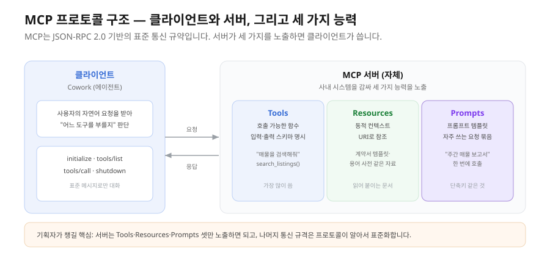
1.2 핵심 개념 셋 — Tools · Resources · Prompts
서버가 클라이언트에 노출하는 것은 세 종류입니다.
Tools(도구) 는 호출 가능한 함수입니다. 입력과 출력 스키마가 명시되어 있어, 에이전트가 "이 도구는 무엇을 받고 무엇을 돌려주는지"를 압니다. 자체 MCP에서 가장 많이 쓰는 것이 이 도구입니다. 예를 들어 매물을 검색하는 search_listings, 고객 계약 이력을 조회하는 get_customer_contracts 같은 것들입니다.
Resources(리소스) 는 동적 컨텍스트입니다. URI로 참조하며, 계약서 템플릿이나 용어 사전처럼 "필요할 때 읽어서 붙이는 자료"에 해당합니다. 도구가 "무엇을 실행하는" 쪽이라면, 리소스는 "무엇을 읽어오는" 쪽입니다.
Prompts(프롬프트) 는 자주 쓰는 프롬프트 템플릿입니다. "주간 매물 등록 현황 보고서"처럼 반복되는 요청을 하나의 이름으로 묶어, 사용자가 매번 긴 지시를 타이핑하지 않고 한 번에 부르게 합니다. 일종의 단축키입니다.
이 셋을 서버가 노출하면 클라이언트가 사용합니다. 서버 개발의 대부분은 결국 "어떤 도구를 몇 개, 어떤 스키마로 노출할까"를 정하는 일입니다.
1.3 메시지 흐름 — 초기화에서 종료까지
클라이언트와 서버는 정해진 순서로 대화합니다. 크게 네 단계입니다.
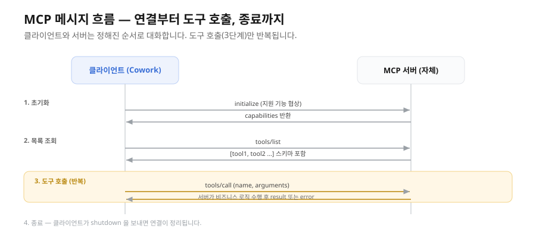
1단계 초기화 — 클라이언트가 initialize를 보내며 자신의 지원 기능을 알리고, 서버는 자신의 capabilities(지원하는 기능 목록)를 돌려줍니다. 서로 무엇을 할 수 있는지 협상하는 인사 단계입니다.
2단계 도구 목록 조회 — 클라이언트가 tools/list를 보내면, 서버는 자신이 가진 도구들을 스키마와 함께 반환합니다. 이때 에이전트는 "이 서버로 무슨 일을 시킬 수 있는지"를 처음 알게 됩니다.
3단계 도구 호출(반복) — 실제 작업이 일어나는 단계입니다. 클라이언트가 tools/call에 도구 이름과 인자를 실어 보내면, 서버가 비즈니스 로직을 수행하고 결과(result)나 오류(error)를 돌려줍니다. 이 단계만 필요한 만큼 반복됩니다.
4단계 종료 — 클라이언트가 shutdown을 보내면 연결이 정리됩니다.
1.4 통신 방식(transport) — 어떻게 연결하나
같은 프로토콜이라도 물리적으로 연결하는 방식은 세 가지가 있습니다.
| 방식 |
성격 |
언제 쓰나 |
| stdio |
표준 입출력, 로컬 프로세스, 가장 단순 |
회사의 첫 자체 MCP·직원 개인 설치 |
| HTTP/SSE |
Server-Sent Events, 원격 서버 |
사내 다수가 중앙 서버로 함께 쓸 때 |
| WebSocket |
실시간 양방향(선택) |
실시간성이 필요한 특수 사례 |
비개발자 회사의 첫 자체 MCP는 보통 stdio로 시작합니다. 내 컴퓨터에서 서버 프로세스를 띄우고 표준 입출력으로 대화하는, 인프라가 필요 없는 가장 간단한 방식입니다. 사내 다수가 함께 쓰게 되면 HTTP/SSE 원격으로 넘어갑니다. 이 갈림은 7절 배포에서 자세히 다룹니다.
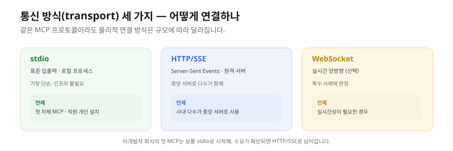
2. Python FastMCP로 빠른 시작
프로토콜 사양을 봤으니, 이제 서버를 실제로 짓는 단계입니다. 전체 흐름은 도구를 정의하고(①), 핸들러를 구현하고(②), 테스트한 뒤(③), 등록·배포하고(④), 자연어로 쓰는(⑤) 다섯 단계로 흐릅니다. 서버를 짓는 앞 두 단계는 FastMCP(Python) 또는 TypeScript SDK 두 갈래로 나뉘고, 뒤 세 단계는 두 갈래가 같습니다.
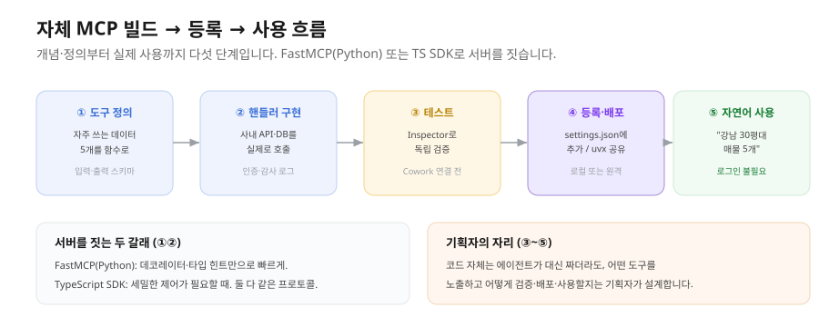
먼저 빠르게 첫 서버를 지을 수 있는 FastMCP부터 봅니다.
2.1 FastMCP란 — 데코레이터 하나로 도구가 되는 프레임워크
TypeScript SDK는 강력하지만 초기 설정과 스키마 작성의 복잡도가 높습니다. 반면 FastMCP는 Python 프레임워크로, FastAPI처럼 데코레이터 기반으로 MCP 도구를 정의합니다. 함수의 타입 힌트와 docstring이 곧 도구 스펙이 되므로, JSON Schema를 직접 손으로 쓸 필요가 없습니다. "함수 하나를 짜면 그게 곧 도구"인 셈입니다.
FastMCP가 잘 맞는 상황은 세 가지입니다. 사내 IT 기획자가 빠르게 첫 MCP를 만들어야 할 때, Python 기반 사내 시스템(Django API·Flask 서버·pandas 데이터 처리)을 연결할 때, 그리고 TypeScript 없이 Python만으로 끝내고 싶을 때입니다.
최소 의존성은 fastmcp>=2.0.0, httpx, python-dotenv 정도입니다.
2.2 FastMCP 최소 예제 — 사내 위키 검색
개념을 잡기 위해 사내 위키를 검색하는 MCP를 봅니다. 실제로는 DB에서 조회하겠지만, 여기서는 메모리 목록으로 골자만 보입니다.
from fastmcp import FastMCP
from fastmcp.exceptions import ToolError
mcp = FastMCP("internal-wiki") # 서버 인스턴스 생성
wiki_docs = { # 실제로는 DB에서 조회
"onboarding": "신입 온보딩 체크리스트",
"expense-policy": "경비 처리 규정",
}
@mcp.tool() # 데코레이터만으로 도구 등록
def search_wiki(query: str) -> dict:
"""사내 위키 검색.
Args: query: 검색어 (예: 'onboarding', '경비')
Returns: {"title": str, "content": str} 또는 ToolError
"""
for key, title in wiki_docs.items():
if query.lower() in key or query.lower() in title:
return {"title": title, "content": f"[위키 내용] {title}"}
raise ToolError(f"'{query}'에 대한 문서를 찾을 수 없습니다")
if __name__ == "__main__":
mcp.run() # stdio 트랜스포트로 대기
읽는 포인트는 세 가지입니다. 첫째, @mcp.tool() 데코레이터가 함수의 타입 힌트(query: str)와 docstring을 파싱해 도구 스펙을 자동 생성합니다. 개발자가 스키마를 따로 쓰지 않아도 됩니다. 둘째, mcp.run() 한 줄이 stdio 트랜스포트를 시작해 Cowork의 연결을 기다립니다. 셋째, 에러는 ToolError 예외로 던져 사용자에게 친화적인 메시지를 전달합니다. "문서를 찾을 수 없습니다"처럼 사람이 읽을 수 있는 메시지가 중요합니다.
💡 기획자 관점에서 FastMCP의 가치는 "코드량이 적다"가 아니라, 함수 하나가 곧 도구 하나로 대응된다는 명료함에 있습니다. "우리 회사에서 자연어로 부르고 싶은 동작"을 함수 이름으로 나열해 보면, 그것이 그대로 도구 목록이 됩니다.
3. TypeScript SDK로 시작
3.1 언제 TypeScript SDK를 쓰나
Node.js 기반 사내 시스템이거나, 응답을 세밀하게 제어해야 하거나, 팀이 이미 TypeScript로 굴러가고 있다면 TypeScript SDK(@modelcontextprotocol/sdk)가 자연스럽습니다. FastMCP보다 손이 조금 더 가지만, 도구·리소스·프롬프트를 각각의 요청 핸들러로 명시적으로 다루므로 동작을 정확히 통제할 수 있습니다.
3.2 최소 동작 서버의 뼈대
TypeScript SDK에서는 서버를 만들고, "도구 목록을 달라"는 요청과 "도구를 호출하라"는 요청에 각각 핸들러를 답니다. 핵심 골자만 보면 이렇습니다.
const server = new Server(
{ name: "company-internal", version: "1.0.0" },
{ capabilities: { tools: {} } }
);
// (1) 도구 목록 요청에 응답 — 어떤 도구가 있는지 알림
server.setRequestHandler(ListToolsRequestSchema, async () => ({
tools: [{
name: "hello_world",
description: "간단한 인사를 반환합니다",
inputSchema: {
type: "object",
properties: { name: { type: "string" } },
required: ["name"],
},
}],
}));
// (2) 도구 호출 요청에 응답 — 실제 동작
server.setRequestHandler(CallToolRequestSchema, async (request) => {
if (request.params.name === "hello_world") {
const name = (request.params.arguments?.name ?? "world") as string;
return { content: [{ type: "text", text: `안녕, ${name}!` }] };
}
throw new Error("Unknown tool");
});
const transport = new StdioServerTransport();
await server.connect(transport); // stdio로 연결
FastMCP와 비교하면 차이가 분명합니다. FastMCP는 데코레이터가 스키마를 자동 생성했지만, TypeScript SDK에서는 inputSchema를 직접 적습니다((1) 부분). 대신 그만큼 입력 형식을 정확히 못박을 수 있습니다. (2)의 호출 핸들러는 "이름이 이러면 이 동작"이라는 분기 구조입니다. 도구가 늘면 이 분기가 길어지므로, 4절에서 볼 실용 예제에서는 switch 문으로 정리합니다.
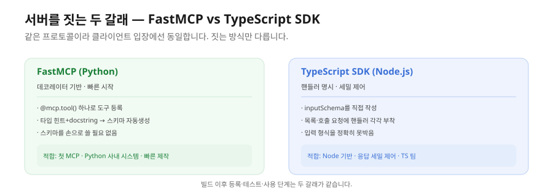
3.3 Cowork에 등록하기
만든 서버는 ~/.claude/settings.json에 등록합니다. 형식은 중급 5강에서 본 것과 같습니다. 서버 이름 아래에 실행 명령(command)과 인자(args)를 둡니다.
{
"mcpServers": {
"company-internal": {
"command": "node",
"args": ["/path/to/company-mcp-internal/dist/index.js"]
}
}
}
Cowork을 재시작한 뒤 "company-internal MCP의 hello_world 도구로 '강사'에게 인사해줘"라고 하면 "안녕, 강사!"가 돌아옵니다. 이 시점에서 자체 MCP의 첫 호출이 성공한 것입니다.
4. 실용 자체 MCP — 사내 ERP 연결
4.1 시나리오 — 부동산 회사의 사내 시스템
가상의 회사 RealEstate Co.를 생각해 봅니다. 사내 시스템은 세 가지입니다. 매물 DB(PostgreSQL — 매물 정보·가격·상태), 고객 DB(고객 정보·계약 이력), 문서 시스템(계약서·등기부등본 PDF)입니다.
직원이 자연어로 다음을 할 수 있게 만드는 것이 목표입니다. "이번 주 새로 등록된 매물 5개", "강남구 30평대 전세 매물", "고객 김철수 계약 이력" 같은 요청입니다. 이런 요청 하나하나가 서버가 노출할 도구와 대응됩니다.
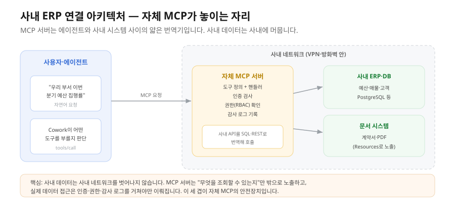
이 그림의 핵심은, 자체 MCP 서버가 에이전트와 사내 시스템 사이의 얇은 번역기라는 점입니다. 사내 데이터는 사내 네트워크(VPN·방화벽 안)를 벗어나지 않습니다. MCP 서버는 "무엇을 조회할 수 있는지"만 밖으로 노출하고, 실제 데이터 접근은 인증·권한·감사 로그를 거쳐야만 이뤄집니다.
4.2 도구 5개 정의
첫 자체 MCP의 도구는 "자주 조회하는 것 5개"로 잡는 것이 좋습니다. RealEstate Co.의 경우는 이렇게 나뉩니다.
| 도구 이름 |
하는 일 |
주요 입력 |
search_listings |
매물 검색(지역·면적·가격대·매매유형 필터) |
region, size_min/max, price_min/max, deal_type, limit |
get_listing_detail |
특정 매물 상세 조회 |
listing_id (필수) |
search_customers |
고객 검색(이름·전화번호) |
query (필수), limit |
get_customer_contracts |
고객의 계약 이력 |
customer_id (필수) |
list_recent_documents |
최근 등록 문서 목록 |
days, document_type |
도구의 스키마는 이런 식으로 적습니다. search_listings 하나만 보이면 나머지 구조도 짐작됩니다.
{
name: "search_listings",
description: "매물 검색. 지역·면적·가격대·매매유형으로 필터.",
inputSchema: {
type: "object",
properties: {
region: { type: "string", description: "예: '강남구', '서초구'" },
size_min: { type: "number" }, size_max: { type: "number" },
price_min: { type: "number" }, price_max: { type: "number" },
deal_type: { type: "string", enum: ["sale", "rent", "lease"] },
limit: { type: "number", default: 10 },
},
},
}
여기서 기획자가 챙길 설계 감각은 enum과 default입니다. deal_type을 ["sale", "rent", "lease"]로 못박으면 에이전트가 엉뚱한 값을 넣지 못합니다. limit에 기본값 10을 두면 응답이 통제 없이 커지는 것을 막습니다. 이 두 가지가 뒤에서 볼 "응답 폭발" 함정을 예방하는 첫 방어선입니다.
4.3 핸들러 구현 — 도구를 실제 동작에 연결
도구 목록이 "무엇을 할 수 있는지"라면, 핸들러는 "실제로 어떻게 하는지"입니다. search_listings가 호출되면 PostgreSQL에 질의해 결과를 돌려주는 식입니다. 골자만 보면 이렇습니다.
const db = new Pool({ connectionString: process.env.COMPANY_DB_URL });
server.setRequestHandler(CallToolRequestSchema, async (request) => {
const { name, arguments: args } = request.params;
switch (name) {
case "search_listings": {
const result = await db.query(
`SELECT id, address, size, price, deal_type, status
FROM listings
WHERE ($1::text IS NULL OR region = $1)
AND ($2::int IS NULL OR size >= $2)
AND ($4::int IS NULL OR price >= $4)
/* ... 나머지 필터 ... */
ORDER BY created_at DESC
LIMIT $7`,
[args.region, args.size_min, args.size_max,
args.price_min, args.price_max, args.deal_type, args.limit ?? 10]
);
return { content: [{ type: "text", text: JSON.stringify(result.rows, null, 2) }] };
}
// get_listing_detail, search_customers ... 나머지 도구
}
});
읽는 포인트는 두 가지입니다. 첫째, $1::text IS NULL OR region = $1 같은 조건은 인자가 없으면 그 필터를 무시한다는 뜻입니다. 지역만 지정하고 가격은 비워도 정상 동작합니다. 둘째, DB URL은 코드에 직접 쓰지 않고 process.env.COMPANY_DB_URL로 환경변수에서 읽어옵니다. 접속 정보를 코드에 박아두면 유출 위험이 크기 때문입니다.
4.4 Resources 추가 — 읽어서 붙이는 자료
도구뿐 아니라 정적·준정적 컨텍스트도 노출할 수 있습니다. 회사 정책이나 표준 계약서 템플릿, 용어 사전처럼 "자주 참조하는 문서"가 여기에 해당합니다. 리소스로 등록해 두면, 사용자가 "계약서 템플릿 보여줘"라고 했을 때 에이전트가 그 리소스를 자동으로 참조합니다.
server.setRequestHandler(ListResourcesRequestSchema, async () => ({
resources: [
{ uri: "company://policy/contract-template", name: "표준 계약서 템플릿", mimeType: "text/markdown" },
{ uri: "company://glossary/real-estate-terms", name: "부동산 용어 사전", mimeType: "text/markdown" },
],
}));
각 리소스는 company://... 형태의 URI로 식별하고, 실제 내용을 읽어오는 별도 핸들러(ReadResourceRequestSchema)에서 파일이나 DB에서 본문을 꺼내 돌려줍니다.
4.5 Prompts 추가 — 자주 쓰는 요청 묶기
반복되는 긴 요청은 프롬프트 템플릿으로 묶습니다. 예를 들어 "주간 매물 등록 현황 보고서"를 weekly_listings_report라는 이름으로 등록해 두면, 사용자가 /prompts weekly_listings_report region=강남구처럼 짧게 호출할 수 있습니다. 긴 지시를 매번 타이핑하지 않고, 인자(여기서는 지역)만 바꿔 반복 작업을 부르는 방식입니다.
5. 인증·권한 모델
자체 MCP는 사내 데이터를 다루므로, "누가 무엇을 할 수 있는가"를 반드시 통제해야 합니다. 여기에는 두 가지 다른 질문이 섞여 있습니다. 인증은 "누구인가"를 확인하고, 권한은 "무엇을 할 수 있는가"를 확인합니다. 둘 다 필요합니다.
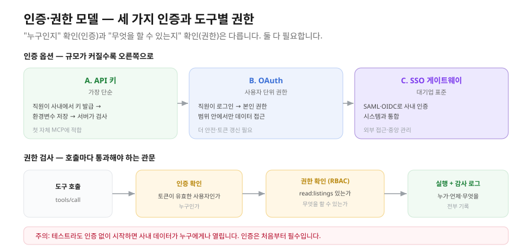
5.1 인증 옵션 세 가지
A. API 키 — 가장 단순. 직원이 사내 시스템에서 API 키를 발급받아 본인 환경변수에 저장하고, MCP 서버가 그 환경변수로 인증합니다. 서버 코드에서는 process.env.COMPANY_API_KEY가 없으면 즉시 에러를 내고, 있으면 모든 호출에 인증 헤더를 붙입니다. 첫 자체 MCP에 적합합니다.
B. OAuth — 사용자 단위 권한. 직원이 OAuth로 로그인하면 본인의 권한 범위 안에서만 데이터에 접근합니다. API 키가 "서버 전체가 같은 권한"이라면, OAuth는 "사람마다 다른 권한"이라 더 안전합니다. 대신 토큰 갱신(refresh) 같은 관리가 따라옵니다.
C. SSO + 사내 인증 게이트웨이. 대기업 표준입니다. SAML·OIDC로 사내 인증 시스템과 통합합니다. 외부 접근 허용과 중앙 관리가 필요한 규모에서 씁니다.
규모가 커질수록 A → B → C로 옮겨간다고 보면 됩니다.
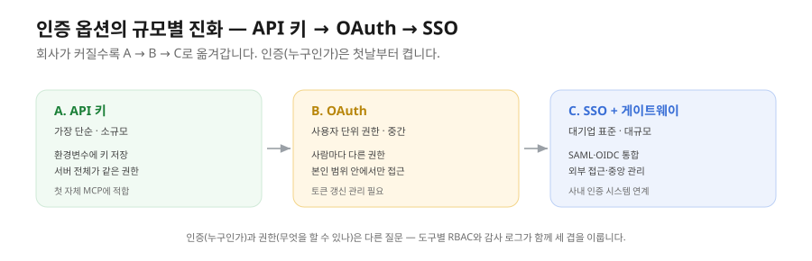
5.2 권한 모델 — 도구마다 다른 권한
인증을 통과했다고 모든 도구를 쓸 수 있는 것은 아닙니다. 도구마다 필요한 권한을 다르게 둡니다. 조회는 열되, 생성·삭제는 좁히는 식입니다.
const PERMISSIONS = {
search_listings: ["read:listings"],
get_listing_detail: ["read:listings"],
create_listing: ["write:listings"],
delete_listing: ["admin:listings"],
};
server.setRequestHandler(CallToolRequestSchema, async (request) => {
const userPerms = await getUserPermissions(authToken); // 이 사용자의 권한
const required = PERMISSIONS[request.params.name]; // 이 도구가 요구하는 권한
if (!required.every(p => userPerms.includes(p))) {
throw new Error("권한 없음");
}
// 통과하면 실행
});
읽기(read)는 넓게 열어도 사고가 작지만, 쓰기(write)와 관리(admin)는 좁게 잠급니다. 중급 5강에서 본 "읽기 전용으로 시작한다"는 원칙이 자체 MCP에서는 이 권한 테이블로 구체화됩니다.
5.3 감사 로그 — 누가·언제·무엇을
모든 호출을 기록합니다. 사고가 났을 때 "누가 무엇을 했는지" 추적하려면 이 로그가 있어야 합니다. 호출자, 도구 이름, 인자, 성공·실패 여부, 시각을 한 줄로 남깁니다.
async function audit(user, tool, args, result /* "success" | "fail" */) {
await db.query(
`INSERT INTO mcp_audit_log (user, tool, args, result, ts) VALUES ($1,$2,$3,$4,NOW())`,
[user, tool, JSON.stringify(args), result]
);
}
인증·권한·감사 로그, 이 세 겹이 자체 MCP의 안전장치입니다. 셋 중 하나라도 빠지면 사내 데이터가 통제 없이 흐르게 됩니다.
6. 테스트와 배포 준비
6.1 MCP Inspector로 로컬 테스트
Cowork에 연결하기 전에, 서버를 독립적으로 테스트하는 것이 좋습니다. MCP Inspector가 그 도구입니다. npx @modelcontextprotocol/inspector node dist/index.js로 실행하면 브라우저에 검사 화면이 뜨고, 도구 목록을 확인하고, 각 도구를 직접 호출해 응답을 검증하며, 에러가 나면 전체 스택 트레이스를 볼 수 있습니다. FastMCP 서버라면 npx @modelcontextprotocol/inspector uv run python server.py처럼 붙입니다.
Cowork에 붙이기 전에 Inspector로 걸러내면, "에이전트가 이상하게 동작하는데 서버 탓인지 프롬프트 탓인지" 헷갈리는 상황을 피할 수 있습니다.
6.2 에러 처리 — 빈 응답은 금지
사용자에게 의미 있는 에러 메시지를 돌려주는 것이 중요합니다. FastMCP라면 ToolError로, TypeScript라면 명확한 메시지를 담은 예외로 던집니다.
@mcp.tool()
def get_meeting_room(room_id: str) -> dict:
"""회의실 정보 조회."""
room = lookup_room(room_id)
if not room:
raise ToolError(f"회의실 {room_id}를 찾을 수 없습니다. 가용 목록은 list_rooms 도구를 쓰세요")
return {"name": room.name, "capacity": room.capacity}
핵심 원칙은 하나입니다. 빈 응답이나 조용한 실패(silent fail)는 금지입니다. 에러가 났으면 왜 났는지, 다음에 무엇을 하면 되는지를 메시지에 담아야 합니다. 위 예처럼 "가용 목록은 list_rooms를 쓰라"고 안내하면, 에이전트가 스스로 다음 도구를 부를 수 있습니다.
7. 로컬 vs 원격 배포
서버가 동작하면 이제 팀에 어떻게 나눌지를 정합니다. 크게 로컬 stdio와 원격 HTTP/SSE로 갈립니다.
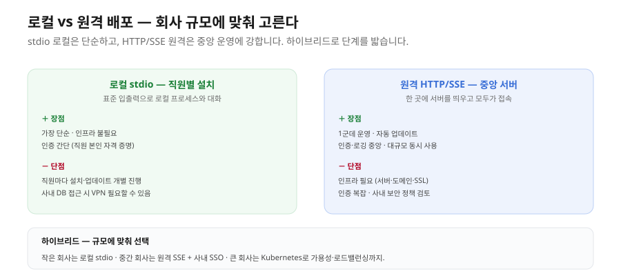
7.1 로컬 stdio 배포 — 직원별 설치
가장 단순한 방식입니다. 직원이 각자 저장소를 내려받아 빌드하고, 본인 settings.json에 등록합니다. 인프라가 필요 없고 인증도 간단합니다(직원 본인의 자격 증명을 그대로 씁니다). 대신 직원마다 설치해야 하고 업데이트도 개별로 진행되며, 사내 DB에 붙으려면 VPN이 필요할 수 있습니다.
설치는 사내 git에서 저장소를 clone → npm install → npm run build → settings.json 등록의 흐름입니다. 회사의 첫 자체 MCP는 대개 여기서 시작합니다.
7.2 원격 HTTP/SSE 배포 — 중앙 서버
한 곳에 서버를 띄우고 모두가 접속하는 방식입니다. 운영을 1군데로 모으므로 자동 업데이트가 가능하고, 인증·로깅을 중앙에서 관리하며, 대규모 동시 사용을 감당합니다. 대신 인프라(서버·도메인·SSL)가 필요하고, 각 사용자를 식별하는 인증이 복잡해지며, 사내 보안 정책 검토를 거쳐야 합니다.
배포 형태로는 SSE 트랜스포트를 Express 같은 웹 서버에 얹고, Docker 이미지로 감싸 Kubernetes·ECS·Cloud Run·자체 VM에 올리는 그림이 일반적입니다. 기획자가 세부 코드를 다 알 필요는 없지만, "원격 배포는 인프라와 보안 검토가 따라온다"는 무게감은 기억해 두는 것이 좋습니다.
7.3 하이브리드 — 규모에 맞춰 밟는다
정답은 회사 규모에 달려 있습니다. 작은 회사는 로컬 stdio로 충분합니다. 중간 규모는 원격 SSE + 사내 SSO로 중앙화합니다. 큰 회사는 Kubernetes로 가용성·로드밸런싱까지 갖춥니다. 처음부터 원격을 지향하기보다, 로컬로 검증하고 수요가 확인되면 원격으로 올리는 단계적 접근이 안전합니다.
8. uvx 배포와 팀 공유 (FastMCP)
Python으로 만든 MCP 서버는 uvx로 패키징해 팀과 공유하면, 팀원이 복잡한 설치 없이 한 줄로 실행할 수 있습니다. 로컬 stdio의 "직원마다 clone·build" 부담을 크게 줄이는 방식입니다.
8.1 pyproject.toml로 실행 진입점 정의
패키징의 핵심은 pyproject.toml에 이름·의존성·실행 스크립트를 적는 것입니다. [project.scripts]에 internal-wiki-mcp = "server:main"처럼 진입점을 두면, 이 이름으로 서버를 부를 수 있게 됩니다.
[project]
name = "internal-wiki-mcp"
version = "0.1.0"
requires-python = ">=3.11"
dependencies = ["fastmcp>=2.0.0", "python-dotenv>=1.0.0"]
[project.scripts]
internal-wiki-mcp = "server:main"
8.2 팀 배포 — 저장소에서 바로 실행
GitHub 저장소에 푸시해 두면, 팀원은 설치 과정 없이 저장소를 가리켜 바로 실행합니다.
# 팀원이 실행 (별도 설치 없음)
uvx --from git+https://github.com/company/internal-wiki-mcp internal-wiki-mcp
uvx가 필요한 의존성을 그때그때 격리 환경에 받아 실행하므로, 팀원의 로컬 환경을 오염시키지 않습니다. settings.json에는 command를 uv로 두고 args에 실행 인자를, cwd에 작업 경로를 지정해 등록합니다.
💡 uvx 공유의 장점은 "업데이트 전파"입니다. 저장소를 갱신하면 팀원이 다음 실행 때 새 버전을 받으므로, 로컬 stdio의 개별 업데이트 부담이 줄어듭니다. Python 사내 도구를 팀에 빠르게 퍼뜨릴 때 특히 유용합니다.
9. 흔한 함정
자체 MCP를 처음 만들 때 반복해서 빠지는 다섯 가지입니다.
9.1 인증 없이 시작 → 보안 사고
테스트 단계라며 인증을 걸지 않고 두면, 사내 데이터가 누구에게나 열립니다. "나중에 붙이겠다"가 가장 위험합니다. 인증은 처음부터 필수로 둡니다. 5절의 A(API 키)라도 첫날부터 켜 두는 편이 안전합니다.
9.2 도구가 너무 자세하다
도구 하나에 옵션을 200개 달면, 에이전트도 사용자도 어떻게 쓸지 모릅니다. 자주 쓰는 5개 옵션만 남기고, 나머지는 제거하거나 별도 도구로 쪼갭니다. 도구는 "많은 기능"보다 "명확한 쓰임"이 낫습니다.
9.3 응답이 너무 크다
DB의 row 1000개를 그대로 응답하면 컨텍스트가 폭발합니다. page_size·기본 limit·필터를 강제해 필요한 조각만 돌려줍니다. 4.2에서 limit에 기본값 10을 둔 것이 바로 이 예방책입니다. 큰 응답은 요약하거나 페이징합니다.
9.4 에러가 조용하다(silent)
핸들러에서 에러가 났는데 빈 응답을 돌려주면, 사용자는 무엇이 잘못됐는지 모릅니다. try/catch로 감싸고 명확한 에러 메시지를 반환합니다. 6.2에서 본 "빈 응답 금지" 원칙 그대로입니다.
9.5 사내 네트워크에서만 동작한다
VPN 안에서만 사내 DB에 붙는다면, 직원이 외부에서는 못 씁니다. 활용도가 떨어집니다. 사내 SSO 게이트웨이를 통한 외부 접근을 열거나, 회사 정책을 정리해 접근 경로를 명확히 해야 합니다.
용어 정리
| 용어 |
뜻 |
| MCP |
외부·사내 도구를 에이전트에 붙이는 표준 연결 프로토콜(JSON-RPC 2.0 기반) |
| 자체 MCP |
공식 MCP가 없는 사내 ERP·CRM·DB를 직접 MCP 서버로 감싼 것 |
| Tools |
호출 가능한 함수. 입력·출력 스키마가 명시된, 서버가 노출하는 핵심 요소 |
| Resources |
URI로 참조하는 동적 컨텍스트. 계약서 템플릿·용어 사전 등 읽어 붙이는 자료 |
| Prompts |
자주 쓰는 프롬프트 템플릿. 반복 요청을 이름 하나로 묶어 호출 |
| transport |
클라이언트와 서버를 잇는 통신 방식(stdio·HTTP/SSE·WebSocket) |
| stdio |
표준 입출력 기반 로컬 연결. 가장 단순, 첫 자체 MCP의 기본 |
| FastMCP |
데코레이터·타입 힌트로 도구를 정의하는 Python MCP 프레임워크 |
| TypeScript SDK |
도구·리소스·프롬프트를 핸들러로 명시 제어하는 Node.js용 MCP 라이브러리 |
| MCP Inspector |
Cowork 연결 전 서버를 독립 테스트하는 브라우저 도구 |
| ToolError |
사용자 친화적 에러 메시지를 전달하는 예외(빈 응답·silent fail 방지) |
| 권한 모델(RBAC) |
도구마다 필요한 권한(read·write·admin)을 다르게 두는 접근 제어 |
| 감사 로그 |
누가·언제·무엇을 호출했는지 기록해 사고를 추적하는 로그 |
| uvx |
Python MCP를 설치 없이 한 줄로 실행·공유하는 방식(팀 배포에 유용) |
한눈에 정리
- MCP는 JSON-RPC 기반의 표준 대화 규약이다. 서버는 Tools·Resources·Prompts 셋만 노출하면 되고, 초기화 → 목록 조회 → 도구 호출(반복) → 종료의 순서로 통신합니다. 첫 자체 MCP는 stdio로 시작합니다.
- 서버를 짓는 길은 두 갈래다. FastMCP(Python)는 데코레이터·타입 힌트로 빠르게, TypeScript SDK는 스키마와 핸들러를 명시해 세밀하게. 둘 다 같은 프로토콜이라 클라이언트 입장에선 동일합니다.
- 자체 MCP는 사내 시스템의 얇은 번역기다. 사내 ERP·DB 앞에 서버를 두어 자주 쓰는 조회 5개를 도구로 노출하되, 데이터는 사내 네트워크를 벗어나지 않습니다.
enum·default로 입력과 응답 크기를 미리 통제합니다.
- 인증·권한·감사 로그, 세 겹이 안전장치다. 인증(누구인가: API 키→OAuth→SSO)과 권한(무엇을 할 수 있는가: 도구별 RBAC)은 다른 질문입니다. 모든 호출을 로그로 남기고, 인증은 처음부터 켭니다.
- 배포는 규모에 맞춰 밟는다. 로컬 stdio로 검증하고, 수요가 확인되면 원격 HTTP/SSE로 중앙화합니다. Python 도구는 uvx로 설치 없이 팀에 퍼뜨립니다. 함정 다섯(무인증·과한 도구·응답 폭발·조용한 에러·VPN 종속)을 경계합니다.
다음 강에서는 고급 자동화와 운영으로 넘어갑니다. 이번 강이 사내 시스템을 자체 MCP로 감싸 자연어의 손이 닿게 만드는 일이었다면, 다음 강은 그렇게 만든 MCP들을 스케줄·이벤트·CI/CD와 엮어 사람 없이 상시로 돌아가게 만드는 운영의 뼈대를 세웁니다.
4부 · 고급
코딩 with Claude 고급 3강. Hooks 고급 — 멀티스텝 체인과 품질 게이트 통합
유형: 이론 (다이어그램 보강판) · 읽는 데 약 50분
선수: 중급 4강(Hooks 입문)·고급 1강(스킬·플러그인)·고급 2강. 훅 이벤트·종료 코드·5단계 우선순위, 그리고 권한 모드와 서브에이전트에 익숙해야 합니다.
이 강을 마치면: ① 중급 훅과 고급 훅의 데이터 흐름 차이를 설명한다 ② input/output 훅 데이터 활용과 멀티스텝 체인을 이해한다 ③ 훅→메인 에이전트 피드백 루프를 설계한다 ④ 5단계 권한 모드와 훅의 조합, 훅+MCP·서브에이전트 조합을 판단한다 ⑤ 사내 품질 게이트를 훅·권한 규칙·CLAUDE.md로 통합 설계하고 운영 메트릭까지 자동 수집한다.
0. 들어가며 — 트리거를 넘어 데이터가 흐르는 훅
중급 4강에서 다룬 훅은 대부분 단순 트리거였습니다. 파일을 저장하면 lint가 돌고, 세션이 끝나면 슬랙에 알림이 갑니다. 트리거 하나에 동작 하나가 붙는 일방향 구조였습니다. 이번 강에서 다루는 고급 훅은 결이 다릅니다. 데이터가 양방향으로 흐르고, 여러 훅이 체인으로 이어져 하나의 워크플로우를 이룹니다.
고급 훅의 핵심은 세 가지 전환입니다. 첫째, 훅이 검증만 하고 끝나지 않고 입력을 변형해서 메인 에이전트에 돌려보냅니다. 둘째, 한 훅의 결과가 다음 훅이나 서브에이전트를 자동으로 호출합니다. 셋째, 훅이 통과·차단을 넘어 "다음에 무엇을 해야 하는지"를 메인 에이전트에게 피드백합니다. 이 세 전환이 모이면, 개별 훅이 아니라 조직 전체의 자동 품질 시스템이 됩니다.
중급이 "사람이 깜빡해도 기계가 검사하는" 단계였다면, 고급은 "기계가 검사하고, 스스로 고치고, 필요하면 사람을 부르는" 단계입니다.
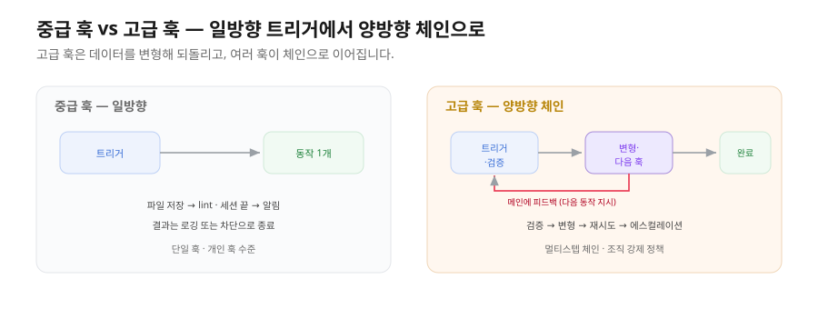
| 항목 |
중급 훅 |
고급 훅 |
| 데이터 흐름 |
일방향 (트리거 → 동작) |
양방향 (트리거 → 검증 → 메인에 피드백) |
| 체인 |
단일 훅 |
멀티스텝 (한 훅이 다른 훅·에이전트를 트리거) |
| 결과 활용 |
로깅 또는 차단 |
메인 에이전트가 받아 다음 동작을 결정 |
| 거버넌스 |
개인 훅 |
조직 차원 강제 정책 |
📌 러닝 예시 — 이번 강에서도 사내 이벤트 RSVP 서비스(참석 신청·취소·정원 관리)를 예시로 씁니다. RSVP의 정원 계산 로직을 수정하면 훅이 테스트를 돌리고, 실패하면 스스로 포맷을 고쳐 재검증하며, 그래도 안 되면 담당자에게 에스컬레이션하는 흐름을 반복해서 떠올리면 이해가 쉽습니다.
1. input/output 훅 데이터 활용
1.1 훅이 데이터를 변형해서 돌려보낸다
중급의 훅은 검증 후 통과 또는 차단만 했습니다. 고급의 훅은 검증 후 입력 자체를 변형해서 메인 에이전트에 돌려보냅니다. 예를 들어 메인 에이전트가 코드를 작성하면, 훅이 자동으로 lint·format·docstring을 적용한 뒤 변형된 코드를 메인에 되돌려 줍니다. 메인은 그 변형된 코드를 기준으로 다음 작업을 이어 갑니다. 사용자가 검토할 때 보는 코드는 이미 정리가 끝난 코드입니다.
이 방식이 가능한 이유는 고급 훅이 입력을 표준입력(stdin)의 JSON으로 받고, 결과 역시 JSON으로 표준출력(stdout)에 반환하기 때문입니다. action 필드로 무엇을 할지(pass·modify·block 등), content 필드로 변형된 내용을 담아 되돌립니다.
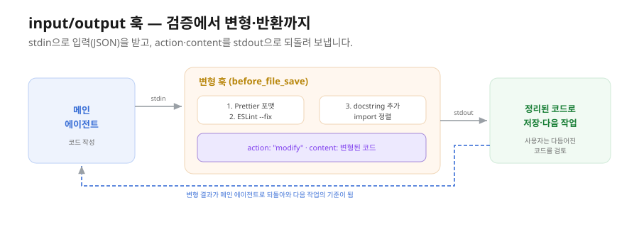
1.2 변형 훅의 구조
파일 저장 직전에 코드를 변형해서 메인에 돌려보내는 훅은 아래 골격을 따릅니다. Prettier로 포맷하고 ESLint로 자동 수정한 뒤, 그 결과를 action: "modify"로 반환하는 흐름입니다.
#!/usr/bin/env python3
# before_file_save_enrich.py — 저장 전 코드를 변형해 메인에 반환
import sys, json, subprocess
data = json.load(sys.stdin) # stdin으로 입력(JSON) 수신
file_path = data["file_path"]
content = data["content"]
if not file_path.endswith((".ts", ".tsx")):
print(json.dumps({"action": "pass", "content": content}))
sys.exit(0)
# 1. Prettier로 포맷
formatted = subprocess.run(
["npx", "prettier", "--stdin-filepath", file_path],
input=content, capture_output=True, text=True).stdout
# 2. ESLint --fix
linted = subprocess.run(
["npx", "eslint", "--stdin", "--fix-dry-run", "--stdin-filename", file_path],
input=formatted, capture_output=True, text=True).stdout
# 3. 변형 결과를 메인에 반환
print(json.dumps({
"action": "modify",
"content": linted,
"message": "자동 lint·format 적용",
}))
메인 에이전트는 linted 코드로 작업을 진행합니다. RSVP의 참석 신청 컴포넌트를 수정하면, 사용자가 검토하기 전에 이미 코드 스타일이 통일되고 문법 자동 수정이 끝난 상태로 넘어옵니다.
1.3 변형 훅의 대표 활용 패턴
- 자동 코드 정리 — lint·format·docstring 추가·import 정렬
- 자동 보안 마스킹 — 로그 출력에 비밀 정보가 섞이면 자동으로 가림
- 자동 번역 — 영어 커밋 메시지에 한국어 요약을 자동 병기
- 자동 메타데이터 추가 — 작성자·시간·관련 이슈 ID를 자동 삽입
핵심은 훅이 "검사관"에서 "편집자"로 역할이 확장된다는 점입니다. 통과·차단이라는 이진 판정을 넘어, 입력을 다듬어 되돌리는 능동적 개입이 고급 훅의 출발점입니다.
2. 멀티스텝 훅 체인
2.1 한 훅이 다음 동작을 부른다
복잡한 워크플로우는 훅 하나로 끝나지 않습니다. 예를 들어 "코드 변경 → 테스트 → 실패 시 자동 fix 시도 → 재테스트"는 여러 단계가 이어진 체인입니다. 훅이 테스트를 돌려 실패를 감지하면, 통과·차단으로 끝내지 않고 메인 에이전트에게 "자동 분석 후 fix를 시도하라"는 요청을 반환합니다.
#!/usr/bin/env python3
# after_file_save_test_chain.py — 테스트 실패 시 메인에 fix 요청
import subprocess, sys, json
data = json.load(sys.stdin)
file_path = data["file_path"]
test_result = subprocess.run(
["npm", "test", "--", "--related", file_path],
capture_output=True, text=True)
if test_result.returncode == 0:
sys.exit(0) # 통과
# 실패 — 메인에게 자동 fix 요청
print(json.dumps({
"action": "trigger_main_action",
"request": f"테스트 실패: {test_result.stdout[:1000]}\n자동 분석 후 fix를 시도해 주세요.",
}))
메인 에이전트가 이 요청을 받아 코드를 고치면, 그 결과를 다시 훅이 받아 재테스트합니다. 실패하면 다시 시도하고, 정해진 횟수를 넘기면 사람에게 에스컬레이션합니다. 트리거 하나가 여러 동작을 연쇄로 부르는 이 구조가 멀티스텝 체인입니다.
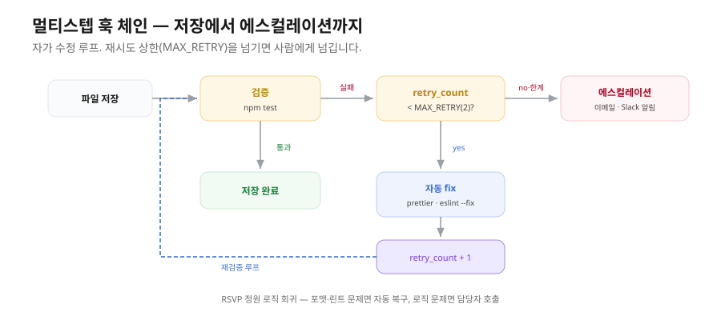
2.2 체인의 6가지 표준 패턴
멀티스텝 체인은 목적에 따라 여섯 가지 표준 형태로 정리됩니다.
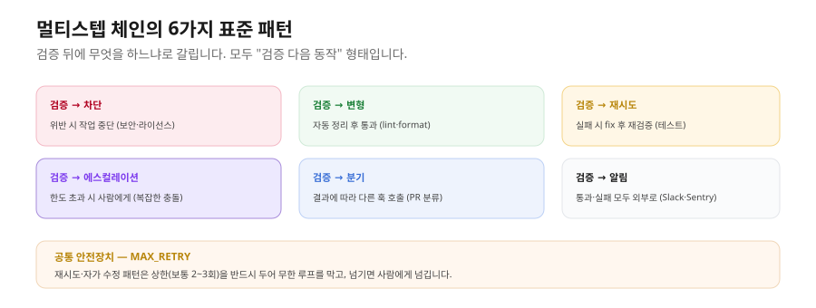
| 패턴 |
흐름 |
| 검증 → 차단 |
위반 시 작업 중단 (보안·라이선스) |
| 검증 → 변형 |
자동 정리 후 통과 (lint·format) |
| 검증 → 재시도 |
실패 시 fix 시도 후 재검증 (테스트) |
| 검증 → 에스컬레이션 |
자동 처리 한도 초과 시 사람에게 (복잡한 충돌) |
| 검증 → 분기 |
결과에 따라 다른 훅을 호출 (PR 분류) |
| 검증 → 알림 |
통과·실패 모두 외부 시스템에 (Slack·Sentry) |
2.3 자가 수정 루프와 무한 루프 방지
체인에서 가장 주의할 지점은 무한 루프입니다. "실패 → fix → 재검증 → 다시 실패 → fix ..."가 끝없이 돌면 시스템이 멈춥니다. 이를 막는 표준 장치가 재시도 횟수 제약입니다. 훅에 전달되는 데이터에 체인 깊이나 재시도 카운트를 실어, 정해진 횟수(보통 2~3회)를 넘기면 자동 처리 대신 사람에게 넘깁니다.
data = json.load(sys.stdin)
chain_depth = data.get("_chain_depth", 0)
if chain_depth > 3:
print(json.dumps({
"action": "escalate",
"message": "자동 처리 3회 시도 실패. 사람 검토가 필요합니다.",
}))
sys.exit(0)
자가 수정 루프의 전형은 이렇습니다. 파일이 저장되면 훅이 테스트로 검증하고, 실패하면 재시도 횟수가 한도 미만인지 확인합니다. 한도 안이면 Prettier·ESLint로 자동 fix한 뒤 카운트를 올려 재검증하고, 한도를 넘기면 담당자에게 이메일·슬랙으로 에스컬레이션합니다.
#!/usr/bin/env python3
# auto_fix_loop.py — 검증 실패 시 자동 fix 후 재검증 (max_retry = 2)
import subprocess, sys, json
data = json.load(sys.stdin)
file_path = data["file_path"]
retry_count = data.get("retry_count", 0)
MAX_RETRY = 2
validation = subprocess.run(
["npm", "test", "--", file_path], capture_output=True, text=True)
if validation.returncode == 0:
sys.exit(0) # 통과
if retry_count < MAX_RETRY:
# 자동 fix (린트 + 포맷)
subprocess.run(["npx", "prettier", "--write", file_path])
subprocess.run(["npx", "eslint", "--fix", file_path])
# 재검증 요청
print(json.dumps({
"action": "trigger_revalidation",
"file": file_path,
"retry_count": retry_count + 1,
"reason": "자동 lint·format 적용 후 재검증",
}))
else:
# 한도 초과 → 에스컬레이션
print(json.dumps({
"action": "escalate",
"message": f"자동 fix {MAX_RETRY}회 시도 실패. 사람 검토가 필요합니다.",
"error": validation.stdout[:500],
}))
sys.exit(1)
RSVP의 정원 계산 로직에 회귀가 생겼을 때, 이 루프는 먼저 포맷·린트 문제인지 자동으로 살펴 고쳐 보고, 두 번의 시도로도 테스트가 통과하지 않으면 로직 자체의 문제로 판단해 담당자를 부릅니다.
⚠️ 주의 — 재시도 상한(MAX_RETRY)은 훅 설계의 필수 안전장치입니다. 상한이 없으면 자동화가 자기 자신을 끝없이 호출하며 토큰과 시간을 소모합니다. "몇 번까지 스스로 고치고, 그 이상은 사람에게 넘긴다"는 경계를 반드시 명시해야 합니다.
3. 훅 → 메인 에이전트 피드백
3.1 피드백 패턴 — 통과·차단을 넘어서
고급 훅의 세 번째 전환은 피드백입니다. 훅이 단순히 통과·차단만 결정하는 것이 아니라, 메인 에이전트가 다음에 무엇을 해야 하는지를 알려 줍니다. 예를 들면 이런 식입니다.
- "이 함수에 단위 테스트가 없습니다.
test-writer 서브에이전트를 호출하세요."
- "이 PR은 보안 영향이 큽니다.
security-team 멤버를 리뷰어로 추가하세요."
- "이 파일은 deprecated 되었습니다. 새 위치로 이동을 권장합니다."
메인 에이전트는 이 피드백을 받아 자동으로 후속 조치를 취합니다. 훅이 "감지와 지시"를, 메인 에이전트가 "실행"을 맡는 분업입니다.
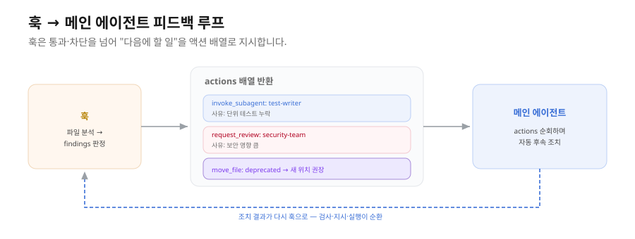
3.2 액션 배열 반환 구조
훅은 여러 후속 조치를 액션 배열로 묶어 반환할 수 있습니다. 파일을 분석해 발견 사항이 여럿이면, 각각에 맞는 액션을 배열로 담아 메인에 넘깁니다.
#!/usr/bin/env python3
import sys, json
data = json.load(sys.stdin)
file_path = data["file_path"]
findings = analyze_file(file_path) # 사내 분석 함수
actions = []
if findings.has_no_test:
actions.append({
"type": "invoke_subagent",
"agent": "test-writer",
"target": file_path,
"reason": "테스트 누락",
})
if findings.has_security_concern:
actions.append({
"type": "request_review",
"team": "security-team",
"reason": findings.security_summary,
})
print(json.dumps({"actions": actions}))
메인 에이전트는 actions 배열을 순회하며 각 액션을 자동으로 수행합니다. 훅이 검사한 결과가 곧바로 메인의 작업 지시서가 되는 셈입니다. 이 피드백 루프가 있어야 훅이 조직 워크플로우의 능동적 조율자로 작동합니다.
4. 5단계 권한 모드와 훅 조합
조직 정책을 자동으로 강제하려면 훅만으로는 부족합니다. 권한 모드와 훅을 함께 설계해야 합니다. 권한 모드는 "무엇을 사용자 확인 없이 실행할 수 있는가"를 정하고, 훅은 "그 실행이 정책을 지키는가"를 검사합니다. 둘의 조합이 자동화의 안전성을 결정합니다.
4.1 권한 모드 5가지와 훅의 역할
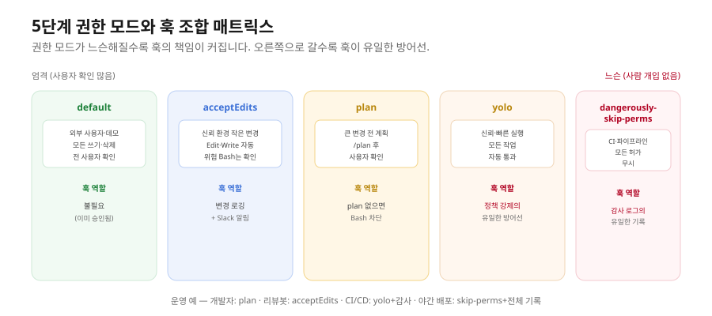
| 모드 |
특성 |
훅의 역할 |
| default |
외부 사용자·데모 환경. 모든 쓰기·삭제·외부 호출 전 사용자 확인 |
훅 불필요 (사용자가 이미 승인) |
| acceptEdits |
신뢰 환경의 작은 변경. Edit·Write는 자동 통과, 위험한 Bash는 여전히 확인 |
PostToolUse 훅으로 변경 로깅 + 슬랙 알림 |
| plan |
큰 변경 전 계획 단계 강제. 코드 변경 전 /plan 후 사용자 확인 |
PreToolUse 훅으로 "plan 없으면 Bash 차단" |
| yolo |
신뢰 환경·빠른 실행. 모든 작업 자동 통과 |
훅이 정책 강제의 유일한 방어선 (linter·보안 검사 필수) |
| dangerously-skip-permissions |
자동화 파이프라인·CI 환경. 모든 허가 무시 |
훅이 감시·감사 로그의 유일한 기록 (무조건 필수) |
여기서 읽어야 할 핵심은 권한 모드가 느슨해질수록 훅의 책임이 커진다는 점입니다. default에서는 사용자가 매번 확인하므로 훅이 없어도 안전하지만, yolo나 CI 환경에서는 사람이 개입하지 않으므로 훅이 유일한 안전장치가 됩니다. 운영 예시로 정리하면 이렇습니다.
- 개발자: plan 모드 (계획 강제)
- 코드 리뷰봇: acceptEdits (검증 후 자동 수정)
- CI/CD: yolo (빠른 배포) + 훅으로 감사 로그
- 야간 자동 배포: dangerously-skip-permissions + 훅으로 모든 변경 기록
4.2 권한 규칙 문법
CLAUDE.md의 permissions 섹션에서 세밀한 규칙을 정의합니다. allow·deny·require_approval 세 종류로 도구별 허용·차단·승인 요구를 나눕니다.
{
"permissions": {
"allow": [
"Bash(git *)",
"Edit(src/**/*.ts)",
"WebFetch(https://api.company.com/*)"
],
"deny": [
"Bash(rm -rf *)",
"Bash(git reset --hard *)",
"Edit(.env)",
"Edit(.git/*)"
],
"require_approval": [
"Bash(npm install *)",
"Bash(docker *)",
"Edit(package.json)"
]
}
}
패턴 문법은 도구 이름과 인자 패턴을 괄호로 묶는 방식입니다.
Bash(git *) — Bash 도구에서 git으로 시작하는 명령Edit(src/**/*.ts) — Glob 패턴. src 이하 모든 .ts 파일Edit(.env) — 정확히 .env 파일만WebFetch(https://api.company.com/*) — URL 패턴mcp__github__* — MCP 도구명 정규식 매칭
권한 규칙과 훅은 역할이 다릅니다. 권한 규칙은 정적인 허용·차단 목록이고, 훅은 실행 시점의 동적 검사입니다. .env 편집은 권한 규칙의 deny로 아예 막고, "이 파일 내용에 비밀 키 패턴이 있는가"처럼 내용을 봐야 하는 검사는 훅으로 처리합니다. 둘을 함께 쓰면 정적·동적 방어가 겹쳐집니다.
4.3 샌드박싱 — 작업 디렉토리 격리
훅이 작업 디렉토리 밖의 파일에 접근하지 못하도록 격리하는 것이 샌드박싱입니다. 프로젝트 루트만 접근 범위로 두고, ~/.ssh·~/.aws·/etc/passwd·상위 디렉토리 같은 민감 경로를 차단합니다. 환경변수도 화이트리스트로 걸러, 허용된 키만 훅에 넘기고 비밀 값은 마스킹합니다.
# on_session_start.py — 환경변수 화이트리스트 격리
import os, json, sys
data = json.load(sys.stdin)
allowed_keys = ["NODE_ENV", "CI", "COMPANY_API_KEY"]
filtered_env = {k: v for k, v in os.environ.items() if k in allowed_keys}
# 민감 키 마스킹
for key in filtered_env:
if "SECRET" in key or "PASSWORD" in key:
filtered_env[key] = "***REDACTED***"
print(json.dumps({"env": filtered_env}))
샌드박싱은 훅 자체가 공격 통로가 되는 것을 막습니다. 훅이 임의 경로에 접근하고 임의 환경변수를 읽을 수 있으면, 훅을 통해 비밀 정보가 유출될 수 있습니다. 작업 범위를 좁게 묶는 것이 자동화의 기본 위생입니다.
5. 자동 SBOM·라이선스 감사
5.1 SBOM이란
SBOM(Software Bill of Materials)은 우리 소프트웨어가 어떤 외부 패키지·라이브러리·라이선스를 쓰는지 담은 목록입니다. 부품 명세서에 해당합니다. 운영 단계에서 SBOM이 중요한 이유는 세 가지입니다.
- 보안 — 알려진 취약점이 있는 패키지를 식별
- 법적 — 라이선스 위반 방지 (예: GPL 라이브러리를 상용 제품에 포함)
- 컴플라이언스 — 정부·고객사의 공급망 보안 요구사항 충족
5.2 자동 감사 훅의 흐름
패키지를 설치·업데이트하면 훅이 자동으로 SBOM을 생성하고, 취약점과 라이선스를 감사합니다. Critical 취약점이면 설치를 차단하고, High 취약점이나 비허용 라이선스는 경고합니다. 이 훅 하나가 보안·법무 정책을 코드화해, 매 패키지 변경마다 자동으로 검증되게 만듭니다.
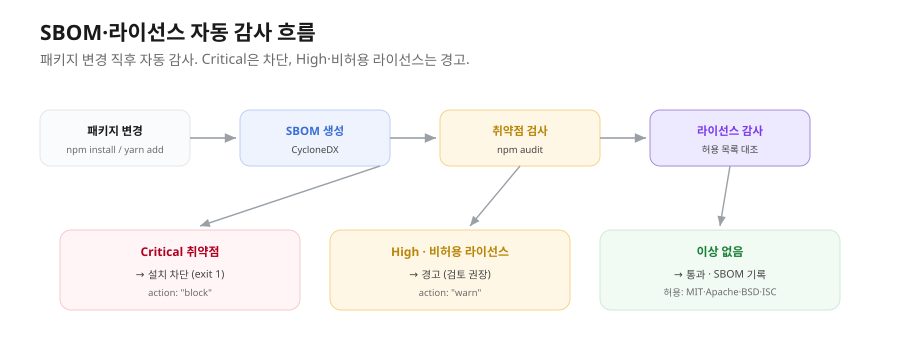
#!/usr/bin/env python3
# after_command_sbom_audit.py — 패키지 변경 후 SBOM·취약점·라이선스 감사
import subprocess, sys, json
data = json.load(sys.stdin)
command = data.get("command", "")
# 패키지 설치·추가 후에만
if not any(c in command for c in ["npm install", "npm i ", "yarn add", "pnpm add"]):
sys.exit(0)
# 1. SBOM 생성
subprocess.run(["npx", "@cyclonedx/cyclonedx-npm", "--output-file", "sbom.json"])
# 2. 취약점 검사
audit = subprocess.run(["npm", "audit", "--json"], capture_output=True, text=True)
vuln = json.loads(audit.stdout).get("metadata", {}).get("vulnerabilities", {})
critical, high = vuln.get("critical", 0), vuln.get("high", 0)
if critical > 0:
print(json.dumps({
"action": "block",
"message": f"Critical 취약점 {critical}개 발견. 패키지 설치를 차단합니다.",
}))
sys.exit(1)
if high > 0:
print(json.dumps({"action": "warn", "message": f"High 취약점 {high}개. 검토 권장."}))
# 3. 라이선스 감사
allowed = ["MIT", "Apache-2.0", "BSD-2-Clause", "BSD-3-Clause", "ISC"]
lic = subprocess.run(["npx", "license-checker", "--json"], capture_output=True, text=True)
violations = [(pkg, info.get("licenses", ""))
for pkg, info in json.loads(lic.stdout).items()
if not any(a in info.get("licenses", "") for a in allowed)]
if violations:
print(json.dumps({
"action": "warn",
"message": f"라이선스 점검 필요 {len(violations)}건",
"violations": violations[:10],
}))
RSVP 서비스가 새 인증 라이브러리를 도입할 때, 이 훅은 그 라이브러리에 알려진 취약점이 없는지, 라이선스가 사내 허용 목록(MIT·Apache-2.0 등) 안에 있는지를 설치 직후 자동으로 확인합니다. 차단·경고의 판정이 담당자의 기억이 아니라 시스템에 내장됩니다.
6. PR 자동 분류·라우팅
6.1 시나리오 — 매일 쏟아지는 PR
회사가 커지면 PR이 매일 50~100개씩 열립니다. 누가 어떤 PR을 검토해야 하는지를 사람이 일일이 배정하면 병목이 생깁니다. PR이 열리는 순간 변경 영역을 분석해 자동으로 라벨을 붙이고 리뷰어를 할당하면, 이 병목이 사라집니다.
6.2 분류 룰과 라우팅
변경된 파일 경로를 보고 다음처럼 라우팅합니다.
- frontend 변경 → 프론트엔드 팀 + UI 디자이너 자동 리뷰어
- backend 변경 → 백엔드 팀 + 보안팀
- DB 마이그레이션 → DBA 팀 자동 리뷰어 (필수 승인)
- 다국어 파일 변경 → 로컬라이제이션 팀
- 의존성 변경 → 보안팀 + 라이선스 검토자
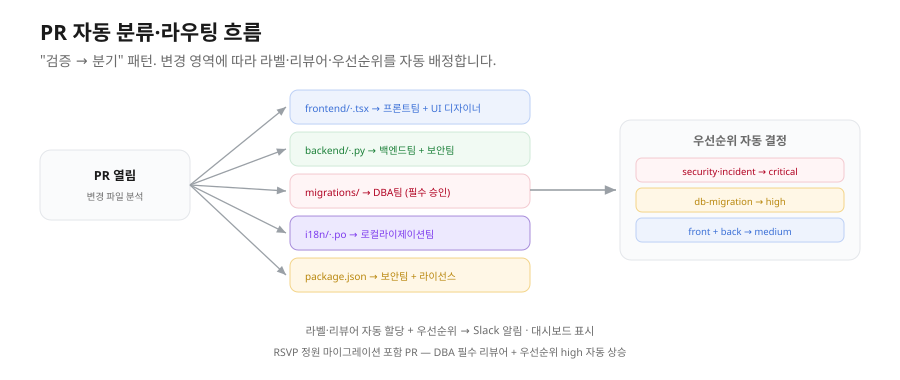
#!/usr/bin/env python3
# on_pr_open_classify.py — PR 열릴 때 자동 분류·리뷰어 할당
import subprocess, json, sys
data = json.load(sys.stdin)
pr = data["pr_number"]
files = subprocess.run(
["gh", "pr", "view", str(pr), "--json", "files", "--jq", ".files[].path"],
capture_output=True, text=True).stdout.split("\n")
labels, reviewers = [], []
for f in files:
if f.startswith("frontend/") or f.endswith((".tsx", ".css")):
labels.append("frontend"); reviewers += ["alice", "bob"]
if f.startswith("backend/") or f.endswith(".py"):
labels.append("backend"); reviewers += ["charlie"]
if "migrations/" in f:
labels.append("db-migration"); reviewers += ["dba-team"]
if "i18n/" in f or f.endswith(".po"):
labels.append("i18n"); reviewers += ["loc-team"]
if "package.json" in f:
labels.append("deps"); reviewers += ["security-team"]
labels, reviewers = list(set(labels)), list(set(reviewers))
subprocess.run(["gh", "pr", "edit", str(pr), "--add-label", ",".join(labels)])
for r in reviewers:
subprocess.run(["gh", "pr", "edit", str(pr), "--add-reviewer", r])
print(json.dumps({"labels_added": labels, "reviewers_added": reviewers}))
6.3 우선순위 자동 결정
라벨을 바탕으로 PR의 우선순위도 자동으로 매깁니다. 이 우선순위가 슬랙 채널 알림과 대시보드 표시에 반영됩니다.
priority = "low"
if "production-incident" in labels or "security" in labels:
priority = "critical"
elif "db-migration" in labels:
priority = "high"
elif "frontend" in labels and "backend" in labels:
priority = "medium"
이 흐름은 앞서 본 체인의 "검증 → 분기" 패턴의 전형입니다. 하나의 트리거(PR 열림)가 변경 영역에 따라 서로 다른 팀·우선순위로 갈라집니다. RSVP 서비스에서 정원 관리 마이그레이션이 포함된 PR이라면, 자동으로 DBA 팀이 필수 리뷰어로 붙고 우선순위가 high로 올라갑니다.
7. 훅 + MCP 조합
훅 안에서 외부 MCP 서버를 호출하면 자동화의 범위가 조직 도구 전체로 넓어집니다. 훅이 트리거를 담당하고, MCP가 외부 시스템(GitHub·Slack·이슈 트래커)에 대한 실제 작업을 수행합니다.
7.1 PostToolUse 후 GitHub MCP 호출
파일이 저장된 뒤 특정 패턴을 감지하면, GitHub MCP를 통해 이슈를 자동 생성하도록 제안합니다. 훅은 직접 API를 부르지 않고, "이 MCP 도구를 호출하라"는 제안을 반환합니다. 메인 에이전트가 그 제안을 받아 다음 턴에 MCP 도구를 호출합니다.
#!/usr/bin/env python3
# post_file_save_github_notify.py — deprecated 감지 시 이슈 생성 제안
import json, sys
data = json.load(sys.stdin)
file_path, content = data["file_path"], data["content"]
if "deprecated" in content.lower() and file_path.endswith(".py"):
print(json.dumps({
"action": "suggest_mcp_call",
"mcp": "github",
"tool": "create_issue",
"params": {
"title": f"[Deprecated] {file_path} — 리팩토링 필요",
"body": f"파일 {file_path}에서 deprecated 패턴이 발견되었습니다.",
"labels": ["refactor", "technical-debt"],
},
}))
7.2 보안 검사 → Slack 자동 알림
민감 정보가 발견되면 작업을 차단하는 동시에 슬랙 보안 채널로 알림을 보냅니다. 차단(exit 2)과 외부 알림을 한 훅에서 함께 처리하는 "검증 → 차단 + 알림" 조합입니다.
#!/usr/bin/env python3
# pre_file_save_secret_scan.py — 민감 정보 감지 시 차단 + Slack 알림
import re, json, sys
data = json.load(sys.stdin)
content, file_path = data["content"], data["file_path"]
patterns = {
"aws_key": r"AKIA[0-9A-Z]{16}",
"stripe_key": r"(sk|pk)_live_[a-zA-Z0-9]{20,}",
"jwt_token": r"eyJ[a-zA-Z0-9_-]{50,}",
}
found = [name for name, p in patterns.items() if re.search(p, content)]
if found and not file_path.endswith((".test.ts", ".example.ts")):
print(json.dumps({
"action": "block",
"message": f"민감 정보 발견: {found}",
"webhook": {
"service": "slack",
"channel": "#security-alerts",
"text": f"파일 {file_path}에서 {found} 패턴 감지",
},
}))
sys.exit(2) # 차단
MCP 조합의 요점은 훅이 외부 세계와 연결되는 접점이 된다는 것입니다. 검사 결과가 사내 채널·이슈 트래커·보안 대시보드에 자동으로 흘러가, 훅이 조직 커뮤니케이션의 자동 트리거 역할까지 맡습니다.
8. 훅 + 서브에이전트 조합
빠른 패턴 검사는 훅이 직접 하지만, 깊은 분석이 필요한 검증은 전문 서브에이전트에 위임하는 것이 낫습니다. 훅은 수 초 안에 끝나야 사용자 경험을 해치지 않는데, 전체 파일 분석이나 외부 취약점 DB 조회는 수십 초가 걸리기 때문입니다.
8.1 아키텍처 — 빠른 훅 + 깊은 서브에이전트
훅이 2초 이내의 간단한 패턴 검사로 "재검토가 필요한지"를 판단하고, 필요하면 서브에이전트 호출 신호를 반환합니다. 서브에이전트는 격리된 컨텍스트에서 전체 파일을 분석하고 외부 API를 조회해 상세 리포트를 만듭니다. 메인 에이전트가 그 리포트를 받아 사용자에게 권고합니다.
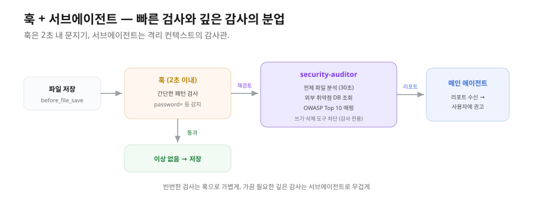
#!/usr/bin/env python3
# before_file_save_complex_check.py — 빠른 검사 후 서브에이전트에 위임
import json, sys
data = json.load(sys.stdin)
file_path, content = data["file_path"], data["content"]
# 빠른 사전 검사 (패턴만)
if "password" in content.lower() and "=" in content:
print(json.dumps({
"action": "request_subagent",
"agent": "security-auditor",
"file": file_path,
"context": content[:1000],
"task": "이 파일에서 credential 유출 위험을 검사합니다. OWASP A02:2021 기준.",
}))
# 서브에이전트 리포트를 받을 때까지 대기
8.2 서브에이전트 정의
호출되는 서브에이전트는 별도 정의 파일에서 도구·모델·검사 항목을 지정합니다. 읽기·분석에 필요한 도구만 허용하고 쓰기·삭제는 막아, 감사 전용으로 좁게 제한합니다.
---
name: security-auditor
description: 파일의 보안 문제를 깊이 있게 분석
tools: ["bash", "read", "webfetch"]
disallowedTools: ["write", "delete"]
model: sonnet
maxTurns: 5
---
다음을 점검합니다.
1. Hardcoded Secrets — API 키·토큰·비밀번호
2. SQL Injection — 사용자 입력 검증 없는 쿼리 생성
3. XSS 위험 — HTML 이스케이프 미흡
4. OWASP Top 10 매핑
5. 의존성 취약점 — 참조 패키지 버전 확인
결론: SAFE | WARNING | CRITICAL
이 조합에서 훅과 서브에이전트의 역할 분담이 명확합니다. 훅은 "문지기"로 빠르게 걸러 내고, 서브에이전트는 "감사관"으로 깊이 파고듭니다. 빈번한 검사를 훅으로 가볍게, 가끔 필요한 깊은 검사를 서브에이전트로 무겁게 나누는 것이 성능과 정확성을 동시에 잡는 설계입니다.
9. 품질 게이트 통합 설계 — 훅 + 권한 규칙 + CLAUDE.md
9.1 품질 게이트란
품질 게이트(Quality Gate)는 조직의 모든 작업이 통과해야 하는 자동 검증 모음입니다. 사람이 깜빡해도 기계가 검사하므로, 회사의 품질·보안 정책이 개인의 성실함이 아니라 시스템에 내장됩니다. 중급 4강에서 다섯 개의 표준 게이트(Lint·Secret Scan·Test·License·Type Check)를 봤습니다. 고급에서는 여기에 SBOM·PR 라우팅·운영 메트릭 세 개를 더해 여덟 개로 확장합니다.
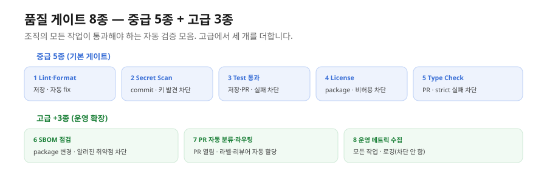
| # |
게이트 |
트리거 |
차단 조건 |
| 1 |
Lint·Format |
파일 저장 |
(자동 fix, 차단 안 함) |
| 2 |
Secret Scan |
commit·push |
비밀 키 발견 |
| 3 |
Test 통과 |
파일 저장·PR |
단위 테스트 실패 |
| 4 |
License 감사 |
package 변경 |
비허용 라이선스 |
| 5 |
Type Check |
파일 저장·PR |
TypeScript strict 실패 |
| 6 |
SBOM 점검 |
package 변경 |
알려진 취약점 |
| 7 |
PR 자동 분류·라우팅 |
PR 열림 |
(자동 라벨·리뷰어 할당) |
| 8 |
운영 메트릭 수집 |
모든 작업 |
(로깅, 차단 안 함) |
9.2 게이트마다 결정해야 할 6가지 정책
게이트를 설계할 때는 여섯 가지를 결정해야 합니다.
- 트리거 시점 — 언제 동작하는가 (저장? commit? PR? 배포?)
- 차단 vs 경고 — 위반 시 작업을 막을지, 알림만 할지
- 자동 fix 가능? — 위반 발견 시 자동 수정할지
- 예외 허용 — 누가 어떻게 우회 가능한가 (
// hook-skip 주석 등)
- 로깅 위치 — 사내 분석 시스템·슬랙 어디에 남기는가
- 거버넌스 — 누가 정책을 변경할 수 있는가
이 여섯 결정을 게이트별로 표로 정리하면 조직의 품질 정책이 한눈에 보입니다.
| 게이트 |
트리거 |
차단? |
자동 fix? |
예외 |
| Lint·Format |
저장 |
✕ |
✓ |
없음 |
| Secret Scan |
commit |
✓ |
✕ |
없음 |
| Test |
PR |
✓ |
✕ |
// skip-tests-justified: <사유> |
| License |
package 변경 |
✓ |
✕ |
보안팀 승인 |
| Type Check |
PR |
✓ |
✕ |
// @ts-expect-error <사유> |
| SBOM |
package 변경 |
Critical만 ✓ |
✕ |
보안팀 승인 |
9.3 정책 선언 — CLAUDE.md
통합 설계의 출발점은 CLAUDE.md에 정책을 선언하는 것입니다. 권한 모드, 권한 규칙, 훅 경로, 서브에이전트 트리거를 한 파일에 모아 조직 표준을 명문화합니다.
---
name: "안전한 코드 배포 파이프라인"
permissions:
mode: "plan" # 큰 변경 전 /plan 강제
rules:
deny:
- "Bash(rm -rf *)"
- "Bash(git reset --hard)"
- "Edit(.env)"
require_approval:
- "Bash(npm install)"
- "Bash(npm publish)"
allow:
- "Bash(git *)"
- "Edit(src/**)"
hooks:
PreToolUse:
- path: "pre_tool_deny_dangerous.py"
PostToolUse:
- path: "post_file_save_auto_lint.py"
SessionEnd:
- path: "session_end_metrics.py"
agents:
- name: "security-auditor"
trigger: "before_sensitive_file_save"
- name: "test-writer"
trigger: "after_non_test_file_edit"
---
## Goals
모든 배포: lint ✓ + test ✓ + secret scan ✓ + 보안 감사 ✓
## Rules
- 비밀 키는 .env에만 (버전 관리 금지)
- 모든 public API는 JSDoc 필수
- 배포 전 /plan으로 변경사항 확인
9.4 통합 훅 체인 — 라이프사이클 전체 흐름
정책이 선언되면, 실제 검사는 세션 라이프사이클의 각 지점에 걸린 훅 체인으로 실행됩니다. 아래는 파일 저장 직전부터 세션 종료까지 이어지는 전체 흐름입니다.
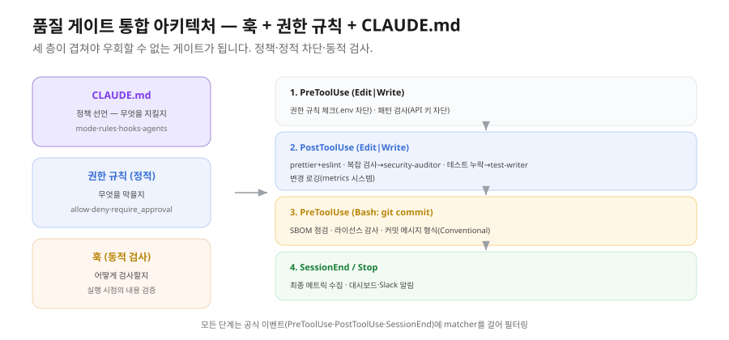
1. 파일 저장 직전 (PreToolUse, matcher: Edit|Write)
└─ 권한 규칙 체크 (.env? → 차단)
└─ 간단한 패턴 검사 (API 키? → 차단)
2. 파일 저장 직후 (PostToolUse, matcher: Edit|Write)
└─ prettier + eslint 자동 실행
└─ 복잡한 보안 검사 필요? → security-auditor 서브에이전트 호출
└─ 테스트 누락? → test-writer 서브에이전트 호출
└─ 변경 로깅 (metrics 시스템으로)
3. Git commit 전 (PreToolUse, matcher: Bash, command: 'git commit')
└─ SBOM 점검
└─ 라이선스 감사
└─ 커밋 메시지 형식 검사 (Conventional Commits)
4. 세션 종료 시 (SessionEnd / Stop)
└─ 최종 메트릭 수집
└─ 대시보드·Slack 알림
💡 팁 — 위 흐름의 1·2·3번은 모두 공식적으로 PreToolUse/PostToolUse 이벤트입니다. "어느 도구 호출에서 발동할지"는 matcher 필드로 구분합니다. pre_file_save_secret_scan.py 같은 파일명은 사람이 이해하기 쉬운 설명적 이름일 뿐, 훅 이벤트 자체와는 무관합니다. 공식 이벤트 이름(PreToolUse·PostToolUse·Stop·SessionStart·SessionEnd·UserPromptSubmit·SubagentStop)에 도구 매처(Edit·Write·Bash)를 걸어 필터링하는 것이 정확한 표기입니다.
9.5 설정 파일 구조
이 통합 설계는 .claude/ 아래에 다음과 같이 배치됩니다. 권한 규칙과 훅 경로는 settings.json에, 훅 스크립트는 hooks/에, 서브에이전트 정의는 agents/에, 정책 선언과 호출 가이드는 CLAUDE.md에 둡니다.
.claude/
├── settings.json # 권한 규칙 + 훅 경로
├── settings.local.json # 개인 임시 오버라이드
├── hooks/
│ ├── pre_tool_deny_dangerous.py
│ ├── pre_file_save_secret_scan.py
│ ├── post_file_save_auto_lint.py
│ ├── post_file_save_test_chain.py
│ ├── pre_git_commit_sbom.py
│ └── session_end_metrics.py
├── agents/
│ ├── security-auditor.md
│ ├── test-writer.md
│ └── code-reviewer.md
└── CLAUDE.md # 정책 선언 + 호출 가이드
세 층이 각자 역할을 나눕니다. CLAUDE.md가 무엇을 지킬지(정책)를, 권한 규칙이 무엇을 막을지(정적 차단)를, 훅이 어떻게 검사할지(동적 실행)를 담당합니다. 이 세 층이 겹쳐야 비로소 "우회할 수 없는" 품질 게이트가 완성됩니다.
10. 운영 메트릭 자동 수집
10.1 수집할 지표
품질 게이트가 돌아가기 시작하면, 그 결과를 지표로 남겨야 정책을 개선하고 경영진을 설득할 수 있습니다. 수집할 대표 지표는 다음과 같습니다.
| 지표 |
측정 |
| 작업 처리량 |
일별 commit·PR·머지 수 |
| 품질 게이트 통과율 |
통과·실패·우회 비율 |
| 자동 fix 비율 |
훅이 자동으로 fix한 비율 |
| 비밀 키 누출 차단 |
월별 차단 횟수 |
| 평균 PR 머지 시간 |
열림 → 머지 소요 시간 |
| 자동 리뷰 vs 사람 리뷰 |
어느 쪽이 결함을 더 잘 잡는가 |
| 토큰·비용 |
사용자별·프로젝트별 |
10.2 SessionEnd 훅으로 사내 분석 시스템 연결
세션이 끝날 때 훅이 메타데이터를 사내 분석 API로 전송합니다. 토큰·시간·사용 도구·훅 발동 횟수·자동 fix·차단 시도 수를 한 번에 넘깁니다.
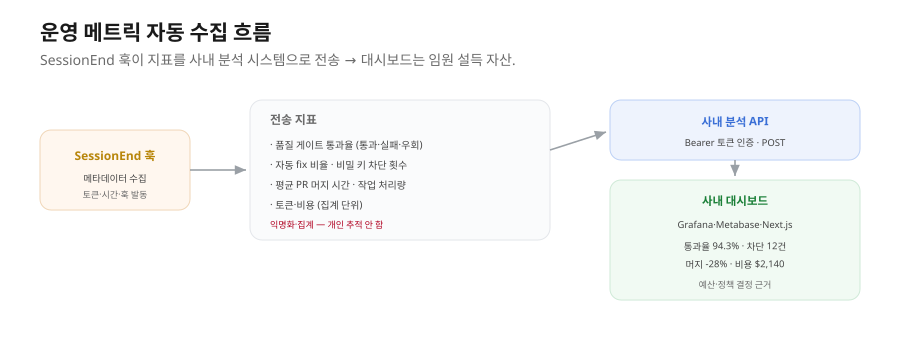
# session_end_metrics.py — 세션 종료 시 메트릭 전송
import requests, os, json, sys
data = json.load(sys.stdin)
requests.post(
"https://internal.example.com/api/cowork-metrics",
json={
"user": os.environ.get("CLAUDE_USER_EMAIL"),
"session_id": data["session_id"],
"tokens_used": data["tokens"],
"duration_sec": data["duration_sec"],
"tools_used": data["tools_used"],
"hooks_triggered": data["hooks_triggered"],
"pr_count": data.get("pr_count", 0),
"auto_fixes": data.get("auto_fixes", 0),
"blocked_attempts": data.get("blocked_attempts", 0),
},
headers={"Authorization": f"Bearer {os.environ['COMPANY_API_TOKEN']}"},
timeout=5,
)
10.3 대시보드 — 임원 설득 자산
수집된 데이터로 사내 대시보드를 만듭니다. Grafana·Metabase·자체 Next.js 등 무엇이든 좋습니다. 이 대시보드는 단순한 모니터링을 넘어, 예산·정책 결정을 뒷받침하는 자산이 됩니다.
사내 Cowork 대시보드 — 2026년 4월
활성 사용자: 87명
자동 fix: 1,243건 (lint·format)
비밀 키 차단: 12건
품질 게이트 통과율: 94.3%
평균 PR 머지 시간: 2.3시간 (전월 대비 -28%)
Anthropic 비용: $2,140
시간 절감 추정: 670시간/월
"자동 fix 1,243건, 비밀 키 차단 12건, 평균 머지 시간 28% 단축" 같은 수치는 훅 도입의 효과를 정량적으로 증명합니다. IT 기획자에게는 이 대시보드가 다음 분기 도구 예산을 확보하는 근거 자료가 됩니다.
⚠️ 주의 — 메트릭 수집은 개인 감시로 오인되기 쉽습니다. 지표는 익명화·집계 단위로 다루고, 개인의 작업 패턴을 추적하지 않으며, 수집 항목을 직원에게 투명하게 공개해야 합니다. 감시로 인식되는 순간 자동화의 신뢰가 무너집니다.
11. 함정 — 고급 훅에서 흔히 빠지는 다섯 가지
11.1 훅이 너무 많아 속도가 느려진다
매 작업마다 훅 열 개가 돌면 사용자 인터랙션 전체가 답답해집니다. 빠른 훅은 인라인으로 두고, 무거운 검사(전체 테스트·SBOM 전수 감사)는 commit·PR 단계로 미룹니다. 훅에 우선순위를 정의해 "매 저장마다"와 "커밋할 때만"을 구분하는 것이 성능의 핵심입니다.
11.2 훅이 조용히(silent) 실패한다
스크립트 버그로 훅이 소리 없이 종료되면, 사용자는 검사가 돌지 않은 사실조차 모릅니다. 모든 훅은 명시적으로 stdout·stderr에 실행 기록을 남기고, 실패 시 메인 에이전트에 알려야 합니다. 특히 멀티스텝 체인은 어느 단계에서 끊겼는지 로그로 추적할 수 있어야 합니다.
11.3 거버넌스 없는 정책 변경
직원이 자기 개인 훅으로 회사 보안 검사를 비활성화하면 사고가 납니다. 회사 정책 훅은 개인 글로벌 설정이 아니라 managed-settings(1순위)로 배포하거나 CI에서 강제해, 개인이 끌 수 없게 만듭니다. 변경은 승인 절차를 거치도록 합니다.
11.4 false positive 폭포
비밀 키 검사가 지나치게 민감하면 정상 코드까지 차단해 직원이 짜증을 냅니다. 정확도를 우선하고, false positive가 발견되면 즉시 패턴을 보정합니다. 자동화가 자꾸 사람을 막으면, 사람은 자동화를 끄는 방법을 먼저 찾게 됩니다.
11.5 메트릭 프라이버시 문제
개인 작업 패턴이 추적되면 직원은 감시받는다고 느끼고 사기가 떨어집니다. 익명화·집계 단위로 다루고, 개인을 추적하지 않으며, 수집 항목을 투명하게 공개해야 합니다. 10.3의 대시보드도 개인 식별이 아닌 조직 집계로만 구성하는 것이 원칙입니다.
용어 정리
| 용어 |
뜻 |
| input/output 훅 |
검증 후 입력을 변형해 메인 에이전트에 되돌려 보내는 고급 훅 |
| action 필드 |
훅이 stdout JSON으로 반환하는 후속 지시 (pass·modify·block·escalate 등) |
| 멀티스텝 체인 |
한 훅의 결과가 다음 훅·에이전트를 연쇄로 호출하는 워크플로우 |
| 자가 수정 루프 |
검증 실패 시 자동 fix 후 재검증을 반복하는 체인 패턴 |
| MAX_RETRY |
자가 수정 루프의 재시도 상한. 무한 루프를 막는 필수 안전장치 |
| 에스컬레이션 |
자동 처리 한도를 넘기면 사람에게 넘기는 동작 |
| 피드백 루프 |
훅이 "다음에 할 일"을 메인 에이전트에 지시하는 구조 |
| 권한 모드 |
default·acceptEdits·plan·yolo·dangerously-skip-permissions 5단계 실행 정책 |
| 권한 규칙 |
allow·deny·require_approval로 도구별 허용·차단·승인을 정하는 정적 규칙 |
| 샌드박싱 |
훅의 접근 범위를 작업 디렉토리·허용 환경변수로 격리하는 것 |
| SBOM |
Software Bill of Materials. 사용 패키지·라이선스 목록 명세서 |
| PR 자동 분류·라우팅 |
변경 영역에 따라 라벨·리뷰어·우선순위를 자동 배정하는 훅 |
| 품질 게이트 |
조직 모든 작업이 통과해야 하는 자동 검증 모음 (고급 8종) |
| 통합 설계 |
훅(동적 검사)·권한 규칙(정적 차단)·CLAUDE.md(정책 선언)를 겹쳐 만든 우회 불가 게이트 |
| 운영 메트릭 |
게이트 통과율·자동 fix·차단 횟수·비용 등 자동 수집 지표 |
한눈에 정리
- 고급 훅은 데이터가 양방향으로 흐른다. 중급의 일방향 트리거와 달리, 고급 훅은 입력을 변형해 되돌리고(input/output), 결과가 다음 동작을 부르며(멀티스텝 체인), "다음에 할 일"을 메인 에이전트에 지시합니다(피드백 루프).
- 자가 수정 루프에는 재시도 상한이 필수다. "실패 → 자동 fix → 재검증"을 반복하되
MAX_RETRY(보통 2~3회)를 두어 무한 루프를 막고, 한도를 넘기면 사람에게 에스컬레이션합니다.
- 권한 모드가 느슨할수록 훅의 책임이 커진다. default에서는 훅이 없어도 되지만, yolo·CI 환경에서는 훅이 유일한 방어선입니다. 권한 규칙(정적)과 훅(동적), 샌드박싱을 함께 써야 안전합니다.
- 품질 게이트는 세 층의 통합이다. CLAUDE.md가 정책을, 권한 규칙이 정적 차단을, 훅이 동적 검사를 맡습니다. 고급 8종(중급 5종 + SBOM·PR 라우팅·메트릭)을 세 층으로 겹쳐야 우회할 수 없는 게이트가 됩니다.
- 훅은 MCP·서브에이전트와 조합할 때 강력하다. 빠른 검사는 훅이, 외부 연동은 MCP가, 깊은 감사는 서브에이전트가 맡습니다. 그리고 운영 메트릭을 자동 수집하면 훅 도입의 효과가 정량적 자산으로 남습니다.
다음 강에서는 Agent Teams를 다룹니다. 이번 강에서 훅이 서브에이전트를 호출하는 분업이 잠깐 등장했는데, 4강에서는 여러 에이전트가 팀을 이뤄 역할을 나눠 협업하는 구조 — 오케스트레이터·워커 패턴, 팀 컨텍스트 공유, 병렬 실행과 결과 통합 — 를 본격적으로 파고듭니다.
4부 · 고급
코딩 with Claude 고급 4강. Agent Teams — 멀티에이전트 협업 설계
유형: 이론 (다이어그램 보강판) · 읽는 데 약 55분
선수: 중급 3강(서브에이전트 기초)·고급 1~3강(스킬·플러그인, 자체 MCP, Hooks 고급). 서브에이전트 정의·격리 컨텍스트·권한 모드·훅 체인에 익숙해야 합니다.
이 강을 마치면: ① 메인 코디네이터 + 전문가 N명 패턴을 설계한다 ② 에이전트 간 통신 모델을 구분한다 ③ 병렬·순차 처리를 의존 관계로 설계한다 ④ 비용 절반화 패턴을 적용한다 ⑤ 하네스로 팀을 안정 운영한다 ⑥ 4단 파이프라인·TRACEABLE JSON·CI/CD 헤드리스로 자동화한다 ⑦ 실패 복구와 평가·개선 루프를 설계한다.
0. 들어가며 — 한 명의 서브에이전트에서 한 팀으로
중급에서 다룬 서브에이전트는 대개 한 작업의 분업이었습니다. 코드 리뷰 하나를 전문가에게 맡기고, 결과를 받아 오는 정도였습니다. 통신이라 부를 것도 거의 없었고, 병렬·순차 구조도 단순했으며, 실패하면 사람이 나서서 복구했습니다.
고급의 Agent Teams는 결이 다릅니다. 5~10명 이상의 전문가가 하나의 큰 워크플로우를 나눠 맡고, 서로 결과를 주고받으며(본격 통신), 의존 관계에 따라 병렬과 순차를 섞어 실행합니다. 여기에 모델 분배로 비용을 절반 가까이 줄이고, 실패하면 자동 복구를 시도하며, 운영 성능을 측정해 스스로 개선하는 루프까지 얹습니다. 중급이 "한 명에게 일을 맡기는" 단계였다면, 고급은 "여러 명으로 팀을 짜서 하나의 파이프라인을 돌리는" 단계입니다.
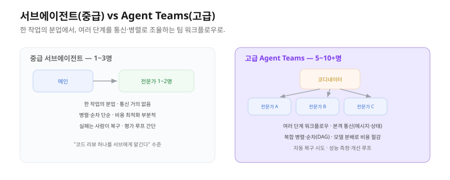
| 항목 |
중급 서브에이전트 |
고급 Agent Teams |
| 규모 |
1~3명 |
5~10+명 |
| 의도 |
한 작업의 분업 |
여러 단계의 전체 워크플로우 |
| 에이전트 간 통신 |
거의 없음 |
본격 (메시지·상태) |
| 병렬·순차 |
단순 |
복합 (DAG) |
| 비용 최적화 |
부분적 |
핵심 (모델 분배·캐싱) |
| 실패 복구 |
사람 개입 |
자동 복구 시도 |
| 평가 루프 |
간단 |
본격 (성능 측정·개선) |
📌 러닝 예시 — 이번 강에서도 사내 이벤트 RSVP 서비스(참석 신청·취소·정원 관리)를 예시로 씁니다. "RSVP에 카카오톡 알림 기능을 추가한다"는 한 줄 요청이 PRD → 아키텍처 → 코딩 → 테스트 → 배포로 이어지는 큰 워크플로우가, 어떻게 여러 전문가의 팀 작업으로 자동화되는지를 반복해서 떠올리면 이해가 쉽습니다.
1. 메인 코디네이터 + 전문가 N명 패턴
1.1 표준 구조
Agent Teams의 표준 형태는 한 명의 메인 코디네이터가 여러 전문가를 분배·통합하는 구조입니다. 사용자 요청은 항상 코디네이터로 들어오고, 코디네이터가 어떤 전문가에게 무엇을 맡길지 결정합니다. 각 전문가는 자기 몫을 끝내 코디네이터에게 결과를 반환하고, 코디네이터가 그 결과들을 통합·검증해 사용자에게 한 번에 보고합니다.
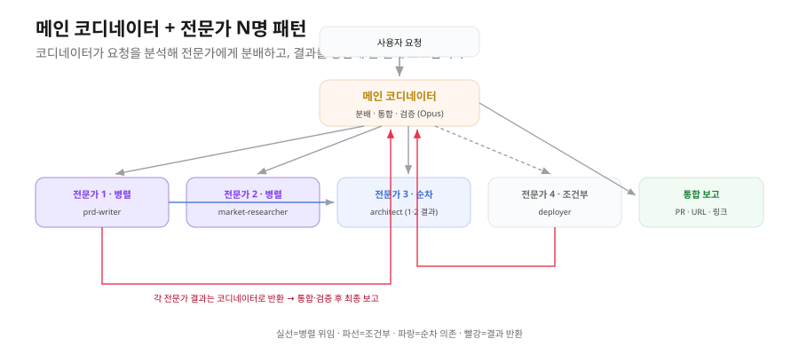
메인 코디네이터의 역할은 네 가지로 요약됩니다.
- 사용자 요청 분석
- 어떤 전문가에게 무엇을 맡길지 결정
- 전문가 결과 통합·검증
- 사용자에게 한 번에 보고
1.2 메인 코디네이터 정의
코디네이터는 시니어 PM·테크리드 역할을 맡으며, 판단이 결과를 좌우하므로 Opus를 권장합니다. 아래는 새 기능 개발 워크플로우 전체를 조율하는 코디네이터의 골격입니다.
---
name: feature-dev-coordinator
description: 새 기능 개발 워크플로우 전체 조율. PRD부터 배포까지 7명의 전문가를 분배·통합.
tools: [Read, Write, Bash]
model: opus # 코디네이터는 Opus 권장 — 판단 능력이 결정적
---
당신은 시니어 PM·테크리드. 새 기능 요청을 받아 다음을 수행합니다.
## 단계
1) 요구사항 분석 — 비즈니스 영향·페르소나·성공 기준
2) 전문가 팀 분배
- 병렬 1차: prd-writer(PRD 정식 작성), market-researcher(경쟁·트렌드 조사)
- 순차 2차(1차 결과 활용): architect(기술 아키텍처), ui-designer(와이어프레임)
- 병렬 3차(2차 결과 활용): code-implementer(코드), test-writer(테스트)
- 순차 4차(3차 결과 활용): deployer(빌드·배포·환경 변수)
3) 결과 통합 — PRD 링크·아키텍처·UI 시안·PR 링크·배포 URL을 한 보고서로
4) 사용자 검토 요청 — 승인/수정/중단
## 진행 원칙
- 각 전문가 호출 전 plan 표시
- 전문가 실패 시 자동 1회 재시도, 그래도 실패 시 사람에게
- 비용·시간 추적 — 각 단계 끝에 누적 보고
1.3 서브에이전트 파일 형식
각 전문가는 프로젝트의 .claude/agents/<name>.md 파일로 정의합니다.
.claude/agents/
├── prd-writer.md
├── market-researcher.md
├── architect.md
└── ... (나머지 4개)
frontmatter의 주요 필드는 다음과 같습니다. 이 외에 disable-model-invocation 등 추가 옵션이 있으므로 공식 문서를 함께 참고합니다.
| 필드 |
설명 |
예시 |
name |
에이전트 고유 식별자 |
prd-writer |
description |
역할과 호출 조건 |
"기능 요청을 상세 PRD로…" |
tools |
사용 가능 도구 목록 |
[Read, Write, Bash] |
model |
사용 모델 |
sonnet 또는 opus |
isolation |
실행 격리 옵션 |
worktree 또는 생략 |
| (본문) |
상세 지시사항 |
마크다운 형식 |
1.4 격리 컨텍스트와 worktree 패턴
각 서브에이전트는 독립적인 컨텍스트 윈도우에서 실행됩니다. 메인의 대화 히스토리를 공유하지 않으므로 각자 필요한 컨텍스트만 로드해 토큰 효율이 높고, 병렬 처리 시 다른 에이전트가 실수로 메인 상태를 건드릴 수 없어 안전합니다.
frontmatter에 isolation: worktree를 지정하면 각 에이전트가 별도 Git Worktree에서 실행됩니다.
---
name: code-implementer
isolation: worktree
---
- 파일 시스템 충돌 방지 — 여러 에이전트가 동시에 같은 파일을 수정해도 안전
- 완료 후 Worktree 자동 정리
- 비용은 약간의 오버헤드지만, 병렬 실행 시 안정성 이득이 훨씬 큼 (사실상 필수)
1.5 전문가 정의 예시
전문가마다 역할·모델·도구·격리를 지정합니다. 단순 작업은 Sonnet, 복잡한 추론이 필요한 작업은 Opus를 씁니다.
---
name: prd-writer
description: 기능 요청을 상세 PRD로 작성. 비즈니스·기술·UX 관점.
model: sonnet
isolation: worktree
tools: [Read, Write]
---
당신은 시니어 프로덕트 매니저. PRD 형식:
1) 배경·문제 2) 목표·성공 기준 3) 페르소나·시나리오
4) 기능 요구사항(must/should/could) 5) 비기능 요구사항(성능·보안·접근성)
6) 디자인 요구사항 7) 일정·마일스톤
길이 1500~3000단어. 명확하고 측정 가능한 기준.
architect처럼 깊은 추론이 필요한 전문가는 model: opus를 지정해 정확도를 우선합니다. 나머지 market-researcher·ui-designer·code-implementer·test-writer·deployer도 같은 패턴으로 정의합니다.
1.6 호출 흐름
사용자가 "이벤트 RSVP에 카카오톡 알림 기능 추가해줘"라고 요청하면, 메인 코디네이터(feature-dev-coordinator)가 호출되고, 코디네이터가 7명의 전문가를 단계별로 호출합니다. 각 단계에서 사용자 검토를 거치고, 최종 결과로 PR + Vercel preview URL + 노션 PRD 링크를 한 번에 제시합니다.
2. 에이전트 간 통신 모델
2.1 메시지 패스 vs 공유 컨텍스트
에이전트들이 협업하는 방식은 크게 두 가지입니다.
메시지 패스 — 메인이 각 전문가에게 입력을 전달하고, 각 전문가는 자기 입력만 봅니다. 결과는 메인에 반환하며, 다른 전문가의 작업이나 컨텍스트는 보지 못합니다.
공유 컨텍스트 — 모든 에이전트가 공통 컨텍스트(노션·git 저장소 등)를 공유합니다. 한 에이전트가 쓴 결과를 다른 에이전트가 직접 읽어, 비동기 협업이 가능합니다.
표준 패턴은 메인 = 메시지 허브입니다. 메인이 모든 전문가의 결과를 받아 다른 전문가에게 패스하는 구조로, 격리가 유지되어 안전하고 조율이 단순합니다. 메인과 전문가가 주고받는 메시지는 대략 이런 봉투(envelope) 형태의 JSON입니다.
// 메인 → 전문가 (작업 지시)
{
"to": "architect", // 받는 전문가
"task": "RSVP 카카오톡 알림 기능의 기술 아키텍처 설계",
"inputs": { "prd_url": "notion://rsvp-noti-prd" }, // 앞 단계 산출물만 전달
"constraints": { "max_turns": 5, "timeout_sec": 600 }
}
// 전문가 → 메인 (결과 반환) — 요약은 200자 이내로 강제
{
"from": "architect",
"status": "completed", // completed | failed | needs_review
"artifact": "output/architecture.md", // 상세 산출물은 파일로
"summary": "Supabase + RLS, 카카오 알림톡 API 연동. 큐는 Edge Function으로.",
"cost": "$0.06"
}
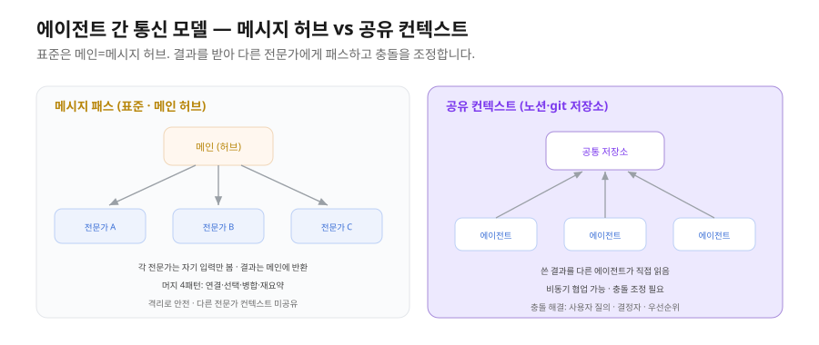
2.2 결과 머지
여러 전문가의 결과를 메인이 어떻게 합치는지는 작업 성격에 따라 네 가지로 나뉩니다.
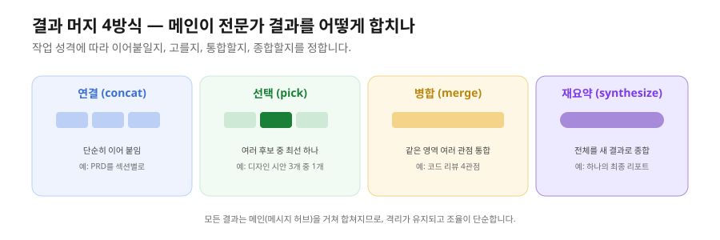
- 연결(concat) — 결과를 단순히 이어 붙입니다. PRD를 섹션별로 나눠 작성할 때.
- 선택(pick) — 여러 후보 중 가장 좋은 하나를 고릅니다. 디자인 시안 3개 중 1개.
- 병합(merge) — 같은 영역에 대한 여러 관점을 통합합니다. 코드 리뷰 4관점.
- 재요약(synthesize) — 모든 결과를 하나의 새 결과로 종합합니다.
2.3 충돌 해결
두 전문가가 모순된 결과를 낼 수 있습니다. 예를 들어 architect는 "DB는 PostgreSQL"이라 하고 backend-implementer는 "DB는 MongoDB로 시작"이라 한다면, 세 가지 해결 방법이 있습니다.
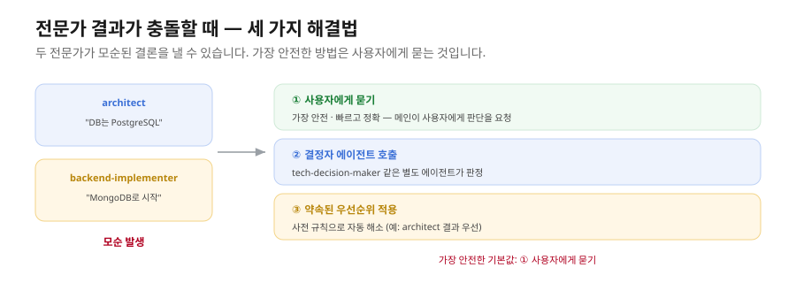
- 메인이 사용자에게 묻기 — 빠르고 정확
- 별도 결정자 에이전트(
tech-decision-maker) 호출
- 약속된 우선순위 적용 (예: architect 결과 우선)
가장 안전한 방법은 사용자에게 묻는 것입니다.
3. 병렬·순차 처리 설계
3.1 DAG로 워크플로우 시각화
워크플로우는 작업=노드, 의존=화살표의 방향 비순환 그래프(DAG)로 그리면 병렬 가능한 부분과 순차로 묶여야 하는 부분이 한눈에 보입니다. prd-writer·market-researcher·ui-designer는 서로 독립이라 병렬로 돌릴 수 있고, architect는 prd 결과가 필요하며, code-implementer는 architect 결과가 필요해 순차로 이어집니다.
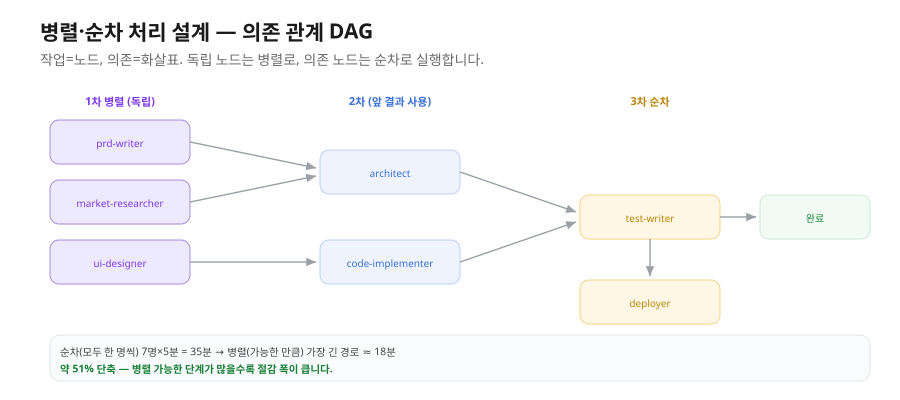
3.2 메인이 DAG를 자동 추론
좋은 코디네이터는 DAG를 명시하지 않아도 의존을 스스로 추론합니다. "X는 Y의 결과가 필요하다"는 관계를 시스템 프롬프트에 적어 두면 됩니다.
## 의존 관계
- prd-writer, market-researcher, ui-designer: 독립 (병렬 가능)
- architect: prd-writer 결과 필요
- code-implementer: architect, ui-designer 결과 필요
- test-writer: code-implementer 결과 필요
- deployer: test-writer 통과 후
3.3 병렬 처리 프롬프트 패턴
여러 전문가를 병렬로 호출하려면 코디네이터 프롬프트에 명시적으로 "동시에 호출"을 지시합니다.
다음 전문가를 단계별로 호출해줘.
1차 병렬(시작 즉시): prd-writer, market-researcher, ui-designer
2차 병렬(1차 완료 후): architect / code-implementer·test-writer 동시
3차 순차(2차 완료 후): deployer
각 단계 진행 상황을 알려주고, 모든 결과를 한 보고서로 정리해줘.
기술적으로는 세션 내부의 Task 도구가 여러 서브에이전트를 동시에 호출하고, 각 에이전트가 isolation: worktree로 독립 Worktree에서 실행되므로 파일 충돌이 없습니다.
3.4 병렬 처리의 가치
병렬화의 이득은 시간 단축으로 직접 드러납니다.
| 처리 방식 |
시간 |
설명 |
| 순차 (모두) |
7명 × 5분 = 35분 |
한 명씩 차례대로 |
| 병렬 (가능한 만큼) |
가장 긴 경로 ≈ 18분 |
1차 3명 병렬 + 2차 2명 병렬 + 3차 순차 |
| 속도 개선 |
약 51% 단축 |
35분 → 18분 |
큰 워크플로우일수록, 그리고 병렬 가능한 단계가 많을수록 절감 폭이 커집니다.
3.5 에이전트 간 결과 전달
메인이 각 에이전트의 결과를 받아 다음 에이전트에 넘기는 흐름은 시스템 프롬프트에 명시합니다. 1차 결과(PRD·시장 조사)를 2차(architect)로 넘길 때, 앞 결과를 프롬프트 안에 그대로 실어 "이를 바탕으로 아키텍처를 설계해줘" 식으로 전달합니다.
3.6 병렬 실행 인프라의 한계
세션은 5~10명의 서브에이전트를 안정적으로 동시에 호출할 수 있지만, 세 가지를 고려해야 합니다.
- Rate limit — API 측 시간당 요청 수 제한
- 동시 연결 — 각 에이전트가 독립 컨텍스트 윈도우라 메모리가 늘어남
- 실제 병렬도 — 5명 이상을 권장하되, 10명 이상은 테스트 후 조정
4. 비용 절반화 패턴
Agent Teams의 핵심 가치는 큰 작업을 여러 sub로 분산해 비용을 절감하는 데 있습니다.
4.1 핵심 아이디어
큰 작업을 작은 작업으로 쪼개고, 각 작은 작업은 가장 저렴하면서 충분한 모델을 씁니다. 단일 Opus로 전부 처리하는 대신, 단순 수집은 Haiku, 일반 작업은 Sonnet에 맡기고 통합만 상위 모델에 두면 비용이 크게 줄어듭니다.
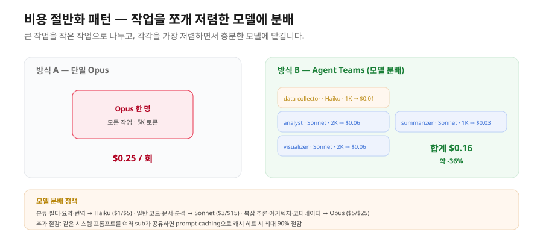
| 작업 |
단순 방식 |
Agent Teams |
| 큰 코드베이스 리팩터링 |
Opus 단일 (50K × $25/MTok = $1.25) |
Sonnet 5명(각 10K = $0.15×5=$0.75) + Opus 통합 $0.13 = $0.88, -30% |
| 보고서 생성 |
Opus 풀 작업 $2 |
Haiku 자료 수집($0.05×4) + Sonnet 통합 $0.30 = $0.50, -75% |
| 코드 리뷰 |
Opus 모든 파일 $1.50 |
Haiku 분류 $0.05 + Sonnet 위험 영역만 $0.30 = $0.35, -77% |
4.2 모델 분배 정책
| 작업 성격 |
모델 |
가격(입력/출력, MTok) |
| 분류·필터·요약·번역 |
Haiku |
$1 / $5 |
| 일반 작업 (코드·문서·분석) |
Sonnet |
$3 / $15 |
| 복잡한 추론·아키텍처·전략 |
Opus |
$5 / $25 |
| 코디네이터 (판단 결정적) |
Opus |
$5 / $25 |
| 단순 통합 (concat) |
Sonnet 또는 Haiku |
— |
각 sub의 frontmatter에 model:을 명시하면, 메인이 분배할 때 모델 비용을 자동으로 고려합니다.
4.3 캐싱 활용
같은 컨텍스트로 여러 번 호출할 때는 prompt caching을 활용합니다. 여러 sub가 같은 시스템 프롬프트를 공유하면 캐시 히트 시 비용을 최대 90%까지 줄일 수 있습니다.
const response = await anthropic.messages.create({
model: "claude-sonnet-4-6",
system: [
{ type: "text", text: BIG_SYSTEM_PROMPT, cache_control: { type: "ephemeral" } },
],
messages: [{ role: "user", content: userMessage }],
});
4.4 사례 — 주간 운영 리포트 자동 생성팀
IT 기획자의 분석·리포트 자동화에 맞춰, 4명의 서브에이전트로 병렬 팀을 구성합니다. 목표는 매주 월요일 오전 10시에 운영 리포트를 자동 생성하는 것(데이터 수집 → 분석 → 시각화 → 요약)입니다.
| 에이전트 |
작업 |
모델 |
산출물 |
| data-collector |
DB 쿼리·CSV·API 호출 |
Haiku |
data.json |
| analyst |
데이터 분석·트렌드 도출 |
Sonnet |
analysis.md |
| visualizer |
차트·테이블 생성 |
Sonnet |
charts.html |
| summarizer |
3개 결과 종합 → 최종 리포트 |
Sonnet |
report.md |
흐름은 1차 병렬(data-collector·analyst·visualizer, 각 5분) → 2차 순차(summarizer가 3개 결과 통합, 3분)입니다. 총 8분이 걸리며, 순차로 돌리면 18분입니다.
비용을 비교하면, 단일 Opus 방식은 5K 토큰에 약 $0.25입니다. Agent Teams 방식은 data-collector(Haiku, 1K) $0.01 + analyst(Sonnet, 2K) $0.06 + visualizer(Sonnet, 2K) $0.06 + summarizer(Sonnet, 1K) $0.03 = 합계 $0.16, 약 -36%입니다. 52회(연간) 기준 $8.32로, 단일 Opus 방식($13/월 수준) 대비 상당한 절감입니다.
4.5 모델 선택 근거
주간 리포트팀의 모델 선택은 각 작업의 성격에서 나옵니다.
- data-collector(Haiku) — "3주간 추세 추출"은 단순 수치 비교라 Haiku로 충분
- analyst(Sonnet) — "비즈니스 의미 분석"은 맥락 이해가 필요해 Sonnet
- visualizer(Sonnet) — "효과적인 차트 선택"은 디자인 판단이라 Sonnet
- summarizer(Sonnet) — "전체 이야기 연결"은 통합 능력이 필요해 Sonnet
4.6 측정·튜닝
작업별 토큰·비용을 자동 수집하면 1주일 운영 후 각 sub의 성공률·평균 토큰·회당 비용이 드러납니다. 이 측정이 곧 Agent Teams 도입의 ROI 증명이 됩니다. 어느 sub가 비용 대비 성능이 낮은지 보이면, 그 sub의 모델·프롬프트를 조정합니다.
5. 하네스(harness) 패턴 — 멀티에이전트 운영의 기본 틀
Agent Teams가 안정적으로 동작하려면 하네스라는 운영 틀이 필요합니다. 외주 디자이너에게 일을 맡길 때 "프로젝트 폴더·디자인 가이드·검수 지점"을 한 세트로 제공하듯, 각 에이전트에게 명확한 작업 경계와 기준을 제시하는 것이 하네스입니다.
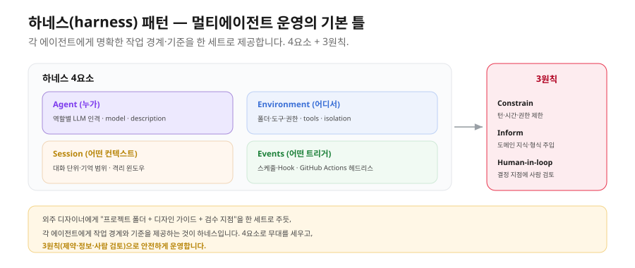
5.1 하네스의 4가지 핵심 요소
- Agent (누가 일하는가) — 역할별 LLM 인격 정의. "넷째 에이전트는 시니어 데이터 분석가"처럼. frontmatter의
model·description에 해당합니다.
- Environment (어디서 일하는가) — 접근 가능한 폴더·도구·권한 범위. "
/data/ 폴더만 읽기, Bash만 사용"처럼. tools·isolation: worktree에 해당합니다.
- Session (어떤 컨텍스트로 일하는가) — 대화 단위와 기억 범위. "각 에이전트는 메인의 입력만 보고 다른 에이전트 대화는 모름." 격리 컨텍스트로 구현됩니다.
- Events (어떤 이벤트에 반응하는가) — 외부 트리거와 Hook. "매주 월요일 오전 10시에 깨어나기", "Slack 메시지 도착 시 반응"처럼. GitHub Actions 헤드리스 모드나 스케줄드 태스크로 구현됩니다.
5.2 하네스 운영의 3가지 원칙
Constrain (제약 걸기) — 반복 횟수 제한(무한 루프 방지), 시간 제한(타임아웃), 권한 제한(도구·폴더). 예: "최대 5턴, 10분 이내, Read·Bash만."
Inform (지식 주기) — 도메인 지식·예시·기준·형식을 미리 주입해 정확도를 높입니다. 예: "브랜드 가이드 PDF 제공", "출력 형식은 JSON으로 통일."
Human-in-the-loop (사람 검토) — 자동 실행하되 결정 지점에서 사람이 개입합니다. "초안 생성 후 사람이 검토 → 최종 판정." 100% 자동화보다 신뢰도가 높습니다.
5.3 하네스 적용 — 주간 운영 리포트팀
주간 리포트팀에 하네스의 4요소와 3원칙이 어떻게 맞물리는지 정리하면 다음과 같습니다.
4요소
- Agent — data-collector(Haiku, Read·Bash) / analyst(Sonnet, Read·Write) / visualizer(Sonnet, Write) / summarizer(Sonnet, Read·Write)
- Environment — data-collector는
/data/만 읽기·API 허용, analyst는 /data/ 읽기·/output/ 쓰기, visualizer는 /output/ 읽기·쓰기, summarizer는 /output/ 읽기·/reports/ 쓰기
- Session — 모든 에이전트는 메인의 입력만 접근(격리 컨텍스트), 다른 에이전트 결과는 메인을 통해 수신
- Events — 매주 월요일 오전 10시(cron:
0 10 * * 1) 또는 수동 호출(workflow_dispatch)
3원칙
- Constrain — data-collector
maxTurns=3/300초, analyst maxTurns=5/600초, visualizer maxTurns=4/600초, summarizer maxTurns=2/300초
- Inform — 모든 에이전트에
.claude/rules/weekly-report.md 자동 주입, 출력은 JSON 스키마 사전 정의, "추세는 [상승/하강/변화없음] 중 선택" 같은 예시 제공
- Human-in-the-loop — summarizer 결과를 메인이 사용자에게 제시, 사용자가 "승인/수정"을 판정, 모든 결과는 JSON으로 디스크에 저장해 재실행 가능
6. 4단 파이프라인 패턴 — Planner → Copywriter → Designer → Reviewer
특정 워크플로우는 순차적 분업이 가장 효율적입니다. 주간 리포트팀을 더 세부화하면, 기획 → 문안 → 디자인 → 검수의 4단 파이프라인이 됩니다.
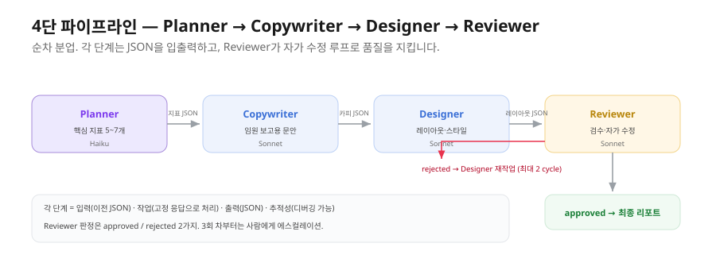
6.1 각 단계 역할
Planner (Haiku) — 지난 한 주 데이터를 분석해 5~7개 핵심 지표를 선정합니다. 산출물: {"metrics": [...], "rationale": "..."}
Copywriter (Sonnet) — Planner 산출물을 받아 임원 보고용 1,000단어 문안을 작성합니다. 톤은 전문적·액션 중심. 산출물: {"headline": "...", "body": "...", "cta": "..."}
Designer (Sonnet) — Copywriter 텍스트를 받아 슬라이드 3~5장 또는 PDF 1장의 레이아웃을 설계하고 색상·타이포·시각적 위계를 결정합니다. 산출물: {"slides": [...], "style": {...}}
Reviewer (Sonnet, 자가 수정 루프) — Designer 결과를 정확성·톤·비주얼 일관성 기준으로 검수합니다. 문제 검출 시 자동 재작업(최대 2 cycle)합니다. 산출물: {"status": "approved|rejected", "feedback": "...", "retries": 0|1|2}
각 단계는 입력(이전 단계의 JSON 산출물), 작업(고정된 응답으로 처리), 출력(JSON), 추적성(디버깅 가능)이라는 네 성질을 공유합니다.
6.2 JSON 스키마 (TRACEABLE)
파이프라인 실행 전체를 하나의 JSON으로 기록하면, 어느 단계에서 문제가 났는지와 비용·시간·재시도를 한눈에 파악할 수 있습니다.
{
"pipeline_run_id": "rpt-2026-05-04-001",
"timestamp": "2026-05-04T10:00:00Z",
"stages": {
"planner": {"status":"completed","output":{"metrics":[...]},"cost":"$0.01","duration_seconds":120},
"copywriter": {"status":"completed","output":{"headline":"..."},"cost":"$0.06","duration_seconds":180},
"designer": {"status":"completed","output":{"slides":[...]},"cost":"$0.06","duration_seconds":240},
"reviewer": {"status":"completed","output":{"status":"approved"},"retries":1,"cost":"$0.04","duration_seconds":150}
},
"total_cost": "$0.17",
"total_duration_seconds": 690
}
7. 품질 장치 두 가지 — Rules 자동 주입 · Reviewer 자가 수정
Agent Teams에서 품질 편차를 줄이는 핵심 메커니즘은 두 가지입니다.
7.1 Rules 자동 주입
각 에이전트가 같은 기준을 따르도록, .claude/rules/ 폴더의 마크다운 파일을 모든 서브에이전트에 자동으로 주입합니다.
.claude/rules/
├── weekly-report.md # 팀 전체 규칙
├── brand-voice.md # 브랜드 톤·어조
├── format-json.md # JSON 출력 형식
└── data-accuracy.md # 데이터 검증 기준
weekly-report.md는 용어·톤·형식·재시도 기준을 통일합니다.
# 주간 리포트팀 공통 Rules
## 용어 통일
- "긍정적 추세" = 전주 대비 +5% 이상 / "부정적 추세" = -5% 이상 / "변화 없음" = ±4% 범위
## 톤·스타일
- 모든 문장 능동태 · 추측 대신 데이터 기반 · 임원진 대상이라 기술 용어 최소화
## 산출물 형식
- 각 단계는 JSON으로 저장 · 최대 길이 Planner 300토큰 / Copywriter 500토큰
## 재시도 기준
- Reviewer 판정은 "승인/재작업" 2가지 · 재작업 시 이전 feedback 참고 · 최대 2회 (3회 차는 사람에게)
이 규칙 파일들이 각 에이전트의 frontmatter 뒤에 자동으로 로드되어, 4명의 전문가가 같은 기준으로 일하므로 최종 결과의 일관성이 올라갑니다.
7.2 Reviewer 자가 수정 루프
Reviewer가 "재작업 필요"로 판정하면, 메인이 문제 단계를 자동으로 다시 실행합니다.
def review_and_fix_loop(state, max_retries=2):
retry = 0
while retry < max_retries:
review = call_subagent("reviewer", input={
"designer_output": state["designer"]["output"],
"previous_feedback": state["reviewer"].get("feedback"),
})
if review["status"] == "approved":
return review # 승인 → 종료
# rejected → 문제 단계 확인 후 feedback 실어 재실행
stage = review["problem_stage"] # "designer" 또는 "copywriter"
redo = call_subagent(stage, input=enrich_feedback(
state[stage]["input"], review["feedback"]))
state[stage]["output"] = redo["output"]
retry += 1
notify_human("Reviewer 재시도 초과. 수동 개입 필요.", state) # 한도 초과
return state
조건은 세 가지입니다. 최대 2회 재시도로 무한 루프를 막고, 각 재시도마다 이전 feedback을 포함하며, 3회를 넘기면 사람이 판단합니다. 자동으로 품질 기준을 충족할 때까지 반복하므로 수동 재작업 시간이 크게 줄어듭니다.
7.3 두 장치의 시너지
Rules 자동 주입으로 Planner·Copywriter·Designer가 모두 같은 기준으로 작업하고, Reviewer가 그 Rules 준수 여부를 검증합니다. 불만족 시 자가 수정 루프가 자동으로 돌아 최종 승인에 이릅니다. 앞의 것이 편차를 줄이고, 뒤의 것이 남은 편차를 스스로 교정하는 구조입니다.
8. JSON 파이프라인 TRACEABLE 패턴
멀티에이전트 워크플로우의 가장 작은 비결은 모든 산출물을 JSON으로 디스크에 저장하는 것입니다.
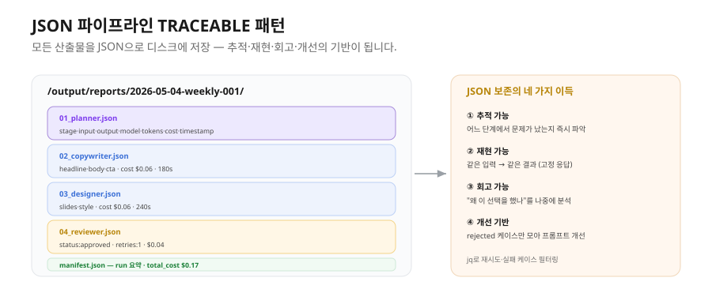
8.1 왜 JSON으로 저장하는가
각 에이전트의 산출물이 JSON으로 남으면 네 가지 이득이 있습니다.
- 추적 가능 — 어느 단계에서 문제가 났는지 한눈에 파악
- 재현 가능 — 같은 JSON 입력으로 다시 실행하면 같은 결과 (고정 응답)
- 회고 가능 — 한 주 후 "왜 이 선택을 했나"를 분석
- 개선 기반 — 실패 케이스만 모아 프롬프트를 개선
8.2 저장 구조
실행마다 폴더를 만들고 단계별 JSON과 전체 요약(manifest)을 남깁니다.
/output/reports/2026-05-04-weekly-001/
├── 01_planner.json # stage·input·output·model·tokens_used·cost·timestamp
├── 02_copywriter.json
├── 03_designer.json
├── 04_reviewer.json # status·retries 포함
└── manifest.json # run_id·start/end·status·stages_completed·total_cost
manifest.json은 실행 전체를 요약해, 각 단계의 소요 시간·성공 여부·재시도 횟수를 담습니다.
8.3 운영에서의 활용
산출물을 보존하면 문제가 났을 때 정확히 어디서인지 알 수 있고, 다음 주에 같은 실수를 반복하지 않도록 이번 주 JSON을 분석할 수 있으며, A/B 테스트도 JSON 비교로 간단해집니다. 1주일이 지나면 52개의 리포트 JSON이 누적되고, jq로 재시도가 발생한(rejected) 케이스만 골라내 프롬프트 개선 포인트를 찾을 수 있습니다.
$ ls /output/reports/ | wc -l # 누적된 리포트 수
$ jq '.stages[] | select(.status=="rejected")' 2026-05-*.json # 재시도 발생 케이스
9. GitHub Actions CI/CD와 헤드리스 모드
Agent Teams는 개발자의 로컬 세션뿐 아니라 GitHub Actions 같은 CI/CD 파이프라인에서도 실행할 수 있습니다.
9.1 구성 요소
.github/workflows/ — GitHub Actions 워크플로우 YAMLclaude --headless — 사용자 입력 없이 자동 실행하는 모드--allowedTools — CI 환경에서 사용 가능한 도구 화이트리스트- Secrets 관리 — API 키를 환경 변수로 주입
9.2 헤드리스 워크플로우 예시
주간 운영 리포트팀을 매주 월요일 오전 10시에 자동 실행하는 워크플로우입니다.
name: Weekly Operations Report
on:
schedule:
- cron: '0 10 * * 1' # 매주 월요일 10시 (UTC)
workflow_dispatch: # 수동 실행도 가능
jobs:
generate-report:
runs-on: ubuntu-latest
timeout-minutes: 30
steps:
- uses: actions/checkout@v4
- name: Run Multi-Agent Report
env:
ANTHROPIC_API_KEY: ${{ secrets.ANTHROPIC_API_KEY }}
run: |
mkdir -p ./reports
claude --headless \
--allowedTools "Read,Bash,Glob" \
-p "주간 운영 리포트팀 실행: data-collector·analyst·visualizer·summarizer 병렬 호출.
최종 결과를 ./reports/weekly-report.md에 저장."
- name: Commit and push
if: success()
run: |
git config user.name "Claude Bot"
git add reports/weekly-report.md
git commit -m "Auto: Weekly operations report"
git push origin main
핵심 옵션은 세 가지입니다. --headless는 대화형 입력을 비활성화(CI에서 필수)하고, --allowedTools는 도구 실행을 자동 승인(화이트리스트)하며, ANTHROPIC_API_KEY는 GitHub Secrets에서 읽어 파일에 노출하지 않습니다. 생성된 리포트는 git config + git push로 자동 커밋·푸시합니다.
9.3 보안 주의
API 키 관리 — 절대 *.yml에 직접 쓰지 않고 GitHub Settings → Secrets에 등록해 ${{ secrets.ANTHROPIC_API_KEY }}로 참조합니다. 로그에 민감 정보가 노출되지 않게 주의합니다.
신뢰할 수 없는 PR 제한 — pull_request_target은 fork PR에 secrets 접근을 허용하므로, 사용 시 트리거 타입 제한 등 보안 정책을 반드시 함께 적용합니다.
10. 실패 복구 메커니즘
전문가가 실패해도 코디네이터가 단계적으로 복구를 시도하고, 한도를 넘기면 사람에게 넘깁니다.
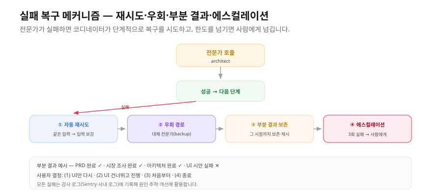
10.1 자동 재시도
전문가 실패 시 메인이 자동으로 재시도합니다. 먼저 같은 입력으로 한 번 더, 그래도 실패하면 입력을 보강(더 자세한 컨텍스트)해 다시 시도하고, 여전히 실패하면 사람에게 에스컬레이션합니다.
result = call_subagent("architect", input)
if result.status == "fail":
result = call_subagent("architect", input) # 1차 — 같은 입력
if result.status == "fail":
result = call_subagent("architect", enrich_input(input)) # 2차 — 입력 보강
if result.status == "fail":
notify_human("architect 3회 실패", input, result.error) # 에스컬레이션
10.2 우회 경로
특정 전문가가 실패하면 대체 전문가로 우회합니다. 예를 들어 ui-designer가 실패하면 ui-designer-backup을 호출하고, 그것도 실패하면 사용자에게 "디자인 단계를 건너뛰고 진행할까요?"를 묻습니다.
10.3 부분 결과 복구
전체가 실패해도 그 시점까지의 부분 결과를 보존해 사용자에게 보여 줍니다. 예를 들어 PRD·시장 조사·아키텍처는 완료되고 UI 시안만 실패했다면, 사용자는 (1) UI만 다시 시도 (2) UI를 건너뛰고 다음 단계 (3) 처음부터 다시 (4) 종료 중에서 결정할 수 있습니다.
10.4 감사 로그
실패의 원인을 추적할 수 있어야 개선이 가능합니다. 모든 실패를 Sentry나 사내 로그에 기록해, 어느 sub가 어떤 조건에서 실패하는지 축적합니다.
11. 평가·개선 루프
11.1 약한 sub 자동 식별
각 sub의 성공률·재시도율·사용자 거부율을 추적하면, 성능이 낮은 sub가 드러납니다. 예를 들어 architect 성공률 78%·만족 3.4/5, ui-designer 성공률 65%·만족 2.8/5라면 ui-designer가 우선 개선 대상입니다. 성능이 낮은 sub의 시스템 프롬프트를 분석·재작성합니다.
11.2 A/B 테스트
같은 sub를 두 가지 시스템 프롬프트로 실행해 결과를 비교합니다. ui-designer-v1(만족 2.8/5) vs v2(만족 3.7/5)라면 v2를 채택합니다. JSON으로 산출물을 보존해 두면 이 비교가 간단해집니다.
11.3 사용자 피드백 수집
각 작업 끝에 사용자에게 만족도와 개선 제안을 묻습니다. 이 피드백이 sub 개선의 핵심 자산이 되어, 다음 개선 사이클의 입력이 됩니다.
12. 흔한 함정과 모범 사례
12.1 무한 루프·재귀 호출 방지
서브에이전트가 또 다른 서브에이전트를 호출하는 재귀는 금지입니다. 모든 위임은 메인이 담당합니다. 메인이 agent-A를 부르고, agent-B를 부르되(A 결과 포함), agent-C를 부르는(A·B 결과 포함) 식으로 의존을 메인이 관리합니다. 각 에이전트 프롬프트에 "다른 에이전트를 호출하지 마시오"를 명시하면 확실합니다.
12.2 에이전트 수 조절
| 상황 |
문제 |
해결 |
| 5명 미만 |
분업 효과 미미, 비용 절감 못 함 |
3~5명이 최소 단위 |
| 10명 초과 |
조율 복잡, 통합 지연 |
7~9명이 최대, 초과 시 2개 팀으로 분할 |
첫 프로젝트는 5명으로 시작해 결과를 측정한 뒤 조정합니다.
12.3 의존 관계 복잡도
DAG가 깊고 복잡한 다이아몬드 형태가 되면 디버깅이 어렵습니다. 선형에 가까운 구조가 좋고, 핵심 의존만 명시하며 부수적 의존은 병합 로직에서 처리합니다.
12.4 비용이 오히려 늘어남
간단한 작업을 무리하게 sub로 쪼개면 오버헤드로 비용이 더 들 수 있습니다. 단순 요약이라면 Opus 1회($0.25)가 Haiku+Sonnet+통합($0.35)보다 쌉니다. 첫 1주는 단순 방식과 Agent Teams를 함께 돌려 비용을 비교하고, 최소 3개 sub 이상일 때만 팀이 가치가 있다고 봅니다.
12.5 서브 결과 불일치
각 sub가 고유한 톤·포맷으로 쓰면 최종 결과가 부조화합니다. 메인의 시스템 프롬프트에 통일 가이드(각 sub의 출력 섹션 구조)를 명시해 강제하면 통합이 쉬워집니다.
12.6 진행 상태 가시화
긴 워크플로우(18분) 동안 사용자가 진행 상태를 모르면 불안해집니다. 메인이 매 단계마다 "1단계 완료 · 2단계 진행 중 · 예상 완료 3분 후" 식으로 실시간 진행률을 보고하면 만족도가 올라갑니다.
12.7 비용 폭주 방지
실수로 수십 개 sub를 호출하거나 무한 재시도하면 비용이 폭증합니다. 네 가지 보호 장치를 둡니다.
- 각 sub에 최대 turn 수 제한 (
maxTurns: 5)
- 재시도 횟수 제한 (최대 2회, 3회부터 사람에게)
- 토큰 사용량 모니터링 (예상 비용 $5 초과 시 사용자 확인)
- 타임아웃 설정 (각 sub 최대 10분, hang 방지)
for sub in [data_collector, analyst, visualizer, summarizer]:
result = call_subagent(sub, input_data, max_turns=5, timeout_seconds=600)
cost += measure_cost(result)
if cost > 5.0:
raise Exception("예상 비용 초과, 사용자 확인 필요")
용어 정리
| 용어 |
뜻 |
| Agent Teams |
5~10명 이상의 전문가 에이전트가 한 워크플로우를 통신·병렬로 나눠 수행하는 고급 멀티에이전트 구조 |
| 메인 코디네이터 |
요청을 분석해 전문가에게 분배하고 결과를 통합·검증하는 조율자 (Opus 권장) |
| 격리 컨텍스트 |
각 서브에이전트가 독립 컨텍스트 윈도우에서 실행되어 메인 상태를 건드리지 않는 것 |
| isolation: worktree |
각 에이전트를 별도 Git Worktree에서 실행해 파일 충돌을 막는 옵션 |
| 메시지 패스 |
메인이 허브가 되어 입력을 전달하고 결과를 받아 다른 전문가에게 넘기는 표준 통신 모델 |
| 공유 컨텍스트 |
모든 에이전트가 공통 저장소를 공유해 결과를 직접 읽는 통신 모델 |
| 결과 머지 |
여러 전문가 결과를 합치는 방식 — 연결·선택·병합·재요약 |
| DAG |
작업=노드, 의존=화살표로 그린 병렬·순차 실행 그래프 |
| 비용 절반화 |
큰 작업을 쪼개 각각 가장 저렴하면서 충분한 모델(Haiku·Sonnet·Opus)에 분배해 비용을 줄이는 패턴 |
| prompt caching |
같은 시스템 프롬프트를 여러 sub가 공유할 때 캐시 히트로 비용을 크게 줄이는 기법 |
| 하네스(harness) |
각 에이전트에 작업 경계·기준을 주는 운영 틀. 4요소(Agent·Environment·Session·Events) + 3원칙(Constrain·Inform·Human-in-the-loop) |
| 4단 파이프라인 |
Planner→Copywriter→Designer→Reviewer로 이어지는 순차 분업 구조 |
| Rules 자동 주입 |
.claude/rules/의 규칙을 모든 서브에이전트에 자동 로드해 기준을 통일하는 품질 장치 |
| Reviewer 자가 수정 루프 |
Reviewer가 재작업 판정 시 문제 단계를 자동 재실행(최대 2회)하는 품질 장치 |
| TRACEABLE JSON |
모든 산출물을 JSON으로 디스크에 저장해 추적·재현·회고·개선을 가능케 하는 패턴 |
| 헤드리스 모드 |
claude --headless로 사용자 입력 없이 CI/CD에서 자동 실행하는 방식 |
| 실패 복구 |
재시도 → 우회 경로 → 부분 결과 보존 → 에스컬레이션으로 이어지는 단계적 복구 메커니즘 |
한눈에 정리
- Agent Teams는 코디네이터 + 전문가 N명 구조다. 메인이 요청을 분석해 5~10명의 전문가에게 분배하고, 결과를 통합·검증해 한 번에 보고합니다. 각 전문가는 격리 컨텍스트(가능하면 worktree)에서 안전하게 병렬 실행됩니다.
- 통신은 메시지 허브, 실행은 DAG로 설계한다. 표준은 메인이 허브가 되는 메시지 패스이고, 의존 관계를 DAG로 그려 독립 작업은 병렬(약 51% 시간 단축), 의존 작업은 순차로 배치합니다.
- 비용 절반화는 모델 분배와 캐싱에서 나온다. 단순 작업은 Haiku, 일반 작업은 Sonnet, 복잡 추론·코디네이터는 Opus. 같은 프롬프트를 공유하면 prompt caching으로 추가 절감합니다.
- 안정 운영의 틀은 하네스와 품질 장치다. 4요소로 무대를 세우고 3원칙으로 제약·정보·사람 검토를 걸며, Rules 자동 주입으로 기준을 통일하고 Reviewer 자가 수정 루프로 편차를 교정합니다.
- 자동화의 기반은 TRACEABLE JSON과 실패 복구다. 모든 산출물을 JSON으로 보존해 추적·재현·회고·개선하고, GitHub Actions 헤드리스로 스케줄 실행하며, 실패는 재시도·우회·부분 결과·에스컬레이션으로 단계적으로 복구합니다.
다음 강에서는 외부 작업관리 연동을 다룹니다. 이번 강에서 Agent Teams가 큰 워크플로우를 자동으로 돌리는 구조를 봤는데, 5강에서는 그 결과를 Jira·노션·GitHub Issues 같은 외부 작업관리 도구와 연결해, 에이전트 팀의 산출물이 조직의 실제 업무 흐름에 자동으로 흘러 들어가게 만드는 설계를 파고듭니다.
4부 · 고급
코딩 with Claude 고급 5강. 외부 작업관리 — Task Master·Shrimp·PM 도구 통합
유형: 이론 (다이어그램 보강판) · 읽는 데 약 45분
선수: 입문·중급 전 과정과 고급 1~4강. 특히 중급 5강(MCP 심화)의 Linear·Notion MCP 감각과 고급 4강(Agent Teams)의 작업 실행 자동화가 있으면 이 강의 조합 예시가 쉽게 읽힙니다.
이 강을 마치면: ① AI 시대에 작업관리가 어떻게 달라지는지 설명한다 ② Task Master와 Shrimp를 비교해 본인 상황에 맞는 도구를 고른다 ③ 큰 PRD를 100+개 작업으로 자동 분해하는 흐름을 이해한다 ④ Notion·Linear·Asana 등 외부 PM 도구로 자동 동기화하고, 로드맵→백로그→스프린트 자동 흐름과 그 함정을 판단한다.
0. 들어가며 — 작업관리가 사람의 손에서 에이전트의 컨텍스트로
전통적으로 작업관리는 사람, 그중에서도 PM의 영역이었습니다. PRD 한 편을 놓고 작업 50개로 쪼개는 데 일주일이 걸렸고, 의존 관계는 사람이 그렸으며, 우선순위는 회의로 정했습니다. 진행 상황은 매니저가 매주 확인했고, 보고서는 PM이 손으로 작성했습니다.
AI 시대에는 이 반복 노동이 상당 부분 자동으로 옮겨집니다. AI가 30분 안에 PRD를 100개 넘는 작업으로 분해하고, 의존 그래프를 추론하며, 비즈니스 영향을 분석해 우선순위를 제안합니다. 진행 점검과 리포트도 매일 자동으로 돌아갑니다. 사람이 사라지는 것이 아니라, 사람이 하던 일 중 기계가 더 잘하는 부분이 기계로 넘어가고, PM은 남은 판단에 집중하게 됩니다.
이 강은 그 변화를 다루는 도구들을 봅니다. PRD를 대규모로 분해하는 Task Master, 주간 단위로 가볍게 쓰는 Shrimp Task Manager, 그리고 이 도구들의 작업을 회사 표준 PM 도구(Linear·Notion·Asana)로 자동 동기화하는 방법입니다. 마지막으로 로드맵에서 스프린트까지 자동으로 잇는 흐름과, 그 과정에서 흔히 빠지는 함정을 정리합니다.
📌 러닝 예시 — 이 강에서도 사내 이벤트 RSVP 서비스(참석 신청·취소·정원 관리)를 예시로 씁니다. RSVP 풀세트를 하나의 PRD로 놓고, 그것이 어떻게 100개 가까운 작업으로 쪼개져 Linear·Notion으로 흘러가는지 따라가면 각 도구의 자리가 분명해집니다.
1. AI 시대의 작업관리 변화
작업관리의 어느 단계가 어떻게 바뀌는지 항목별로 짚어보면 변화의 폭이 뚜렷하게 드러납니다.
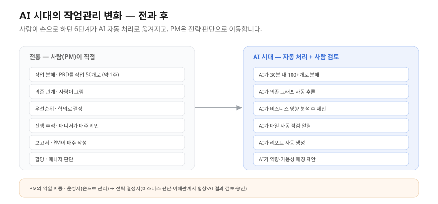
| 영역 |
전통 |
AI 시대 |
| 작업 분해 |
PM이 1주일 걸려 PRD를 작업 50개로 |
AI가 30분 내 100+개로 분해 |
| 의존 관계 |
사람이 그림 |
AI가 자동 추론 |
| 우선순위 |
사람 협의 |
AI가 비즈니스 영향 분석 후 제안 |
| 할당 |
매니저 결정 |
AI가 가용 인력·역량 매칭 |
| 진행 추적 |
매니저가 매주 확인 |
AI가 매일 자동 점검·알림 |
| 보고서 |
PM이 작성 |
AI가 자동 생성 |
핵심은 세 가지입니다. 첫째, 반복적이고 기계적인 작업(분해·집계·추적·리포트)이 AI로 넘어갑니다. 둘째, 사람의 머릿속에 있던 의존 관계와 진행 상태가 에이전트의 컨텍스트, 즉 tasks.json 같은 데이터로 외부화됩니다. 셋째, 그 결과 PM의 역할이 손으로 관리하는 운영자에서, 방향을 정하고 AI의 제안을 검토·승인하는 전략 결정자로 이동합니다. 이 강 전체를 관통하는 원칙은 "AI가 분해·추론·집계를 빠르게 하고, 사람이 검토·기준 고정·전략 판단을 한다"는 역할 분담입니다.
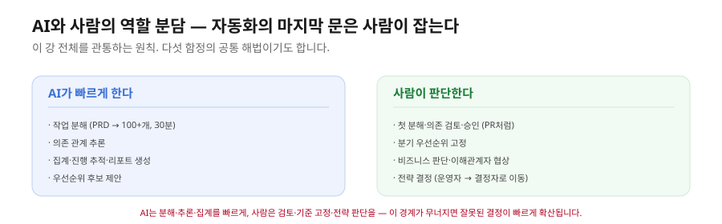
2. Task Master vs Shrimp 비교
작업관리 도구를 고를 때 첫 갈림길은 규모와 주기입니다. 분기 단위 큰 프로젝트를 통째로 분해할 것인지, 이번 주에 할 일을 가볍게 계획할 것인지에 따라 도구가 갈립니다.
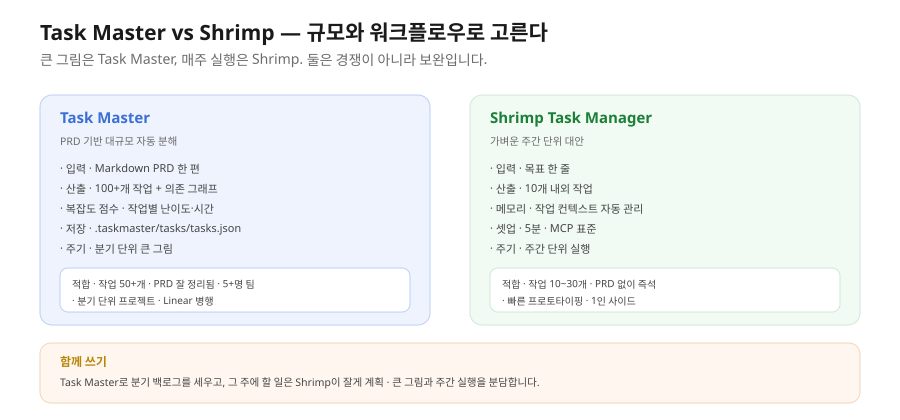
2.1 Task Master
claude-task-master는 Claude를 활용한 AI 작업관리 도구입니다. 성격은 다음과 같습니다.
- PRD를 입력하면 자동 분해 — Markdown으로 쓴 PRD 한 편을 100개 넘는 작업으로 쪼갭니다.
- 의존 관계 자동 추론 — "A는 B 다음" 식의 그래프를 스스로 그립니다.
- 복잡도 점수 — 작업마다 난이도와 예상 시간을 매깁니다.
- MCP 통합 — Cowork에 붙이면 자연어로 다룰 수 있습니다.
- JSON 데이터베이스 — 모든 작업을
.taskmaster/tasks/tasks.json에 저장해, 이 파일이 작업의 단일 진실 원천이 됩니다.
적합한 상황은 작업이 50개를 넘는 큰 규모 프로젝트, PRD가 잘 정리돼 있는 경우, 1인이나 소규모 팀, 그리고 외부 PM 도구가 필수는 아니어서 자체 JSON DB로 충분한 경우입니다. 5명 이상 팀이라면 Task Master로 백로그를 세우고 Linear를 병행하는 조합이 잘 맞습니다.
2.2 Shrimp Task Manager
mcp-shrimp-task-manager는 더 가벼운 대안입니다.
- 간단한 분해 — Task Master보다 단순하게, 목표 한 줄을 10개 내외 작업으로 나눕니다.
- 메모리 관리 — 작업 컨텍스트가 자동으로 관리됩니다.
- 빠른 시작 — 셋업이 5분이면 끝납니다.
- MCP 표준 — 여러 클라이언트와 호환됩니다.
적합한 상황은 작업이 10~30개인 중간 규모, PRD 없이 즉석에서 작업을 잡을 때, 빠른 프로토타이핑, 그리고 매주 단위로 돌아가는 워크플로우입니다.
2.3 어느 것을 쓸까
| 상황 |
권장 |
| 분기 단위 큰 프로젝트 (100+개 작업) |
Task Master |
| 매주 단위 작업 (10~30개) |
Shrimp |
| 외부 PM 도구(Linear·Asana) 이미 사용 중 |
둘 다 → 동기화(4절) |
| 1인 사이드 프로젝트 |
Shrimp |
| 5명 이상 팀 |
Task Master + Linear |
두 도구는 경쟁 관계가 아니라 보완 관계입니다. 큰 그림은 Task Master로 세우고, 그 안에서 이번 주에 실제로 실행할 일은 Shrimp으로 잘게 계획하는 식으로 함께 쓸 수 있습니다. 이 강의 본문은 대규모 자동 분해를 다루는 Task Master를 중심으로 진행합니다.
3. Task Master 본격 사용 (개념)
Task Master의 진짜 가치는 개별 명령어가 아니라, PRD 한 편이 작업 그래프가 되고 그 그래프가 매일의 실행으로 이어지는 전체 흐름에 있습니다. 그 흐름을 먼저 그림으로 잡고 단계별로 봅니다.
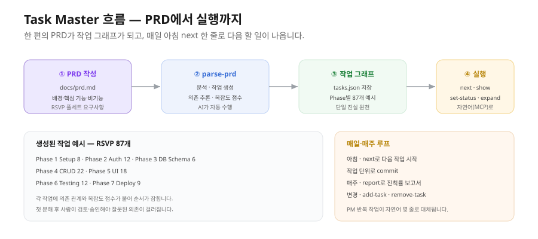
3.1 셋업의 개념
Task Master는 프로젝트마다 .taskmaster/ 폴더를 만들어 그 안에 설정(config.json)과 작업 데이터(tasks/tasks.json)를 둡니다. 초기화 과정에서 API 키, 프로젝트 이름, 사용할 모델을 정하는데, 분해 품질과 비용의 균형을 보면 Sonnet 4.6이 기본값으로 무난합니다. 여기서 알아둘 것은 명령어 자체가 아니라, 작업 데이터가 프로젝트 안의 한 JSON 파일에 모인다는 구조입니다. 이 단일 파일이 있기에 뒤에서 다룰 외부 PM 도구 동기화가 깔끔하게 성립합니다. tasks.json의 골자는 다음과 같습니다.
{
"meta": { "projectName": "이벤트 RSVP 풀세트", "model": "claude-sonnet-4-6" },
"tasks": [
{
"id": 12, // 작업 고유 번호
"title": "참가 신청 API 구현",
"phase": "Phase 4 CRUD",
"status": "in-progress", // pending | in-progress | done
"complexity": 7, // 복잡도 점수(1~10)
"estimate_hours": 6, // 예상 소요 시간
"dependencies": [8, 9], // 선행 작업 id — 의존 그래프의 근거
"subtasks": [ // '더 쪼개기'로 생긴 하위 작업
{ "id": "12.1", "title": "정원 초과 검증", "status": "done" }
]
}
]
}
3.2 PRD에서 작업 자동 분해
시작점은 PRD입니다. RSVP 서비스라면 배경, 핵심 기능, 비기능 요구사항, 일정을 담은 한 편의 문서를 준비합니다.
# 이벤트 RSVP 풀세트 — PRD
## 배경
사용자가 이벤트를 등록하고 다른 사용자가 참가 신청하는 공개 게시판.
## 핵심 기능
1. 이벤트 등록 (제목·설명·일시·장소)
2. 이벤트 목록·상세 페이지
3. 참가 신청 (이름·이메일·메시지)
4. 참가자 명단 공개
5. RSVP 취소 (본인만)
## 비기능 요구사항
- 인증: OAuth(Google·GitHub) / DB: Supabase + RLS
- 배포: Vercel / 디자인: 모바일 우선 / 성능: 페이지 로드 2초 이내
## 일정
- 1주차 인증 · 2주차 CRUD · 3주차 UI·테스트·배포
이 PRD를 분해에 넘기면 Task Master는 ① PRD를 분석하고, ② 100개 안팎의 작업을 자동 생성하며, ③ 의존 관계를 추론하고, ④ 각 작업에 복잡도 점수를 부여한 뒤, ⑤ 결과를 tasks.json에 저장합니다. RSVP PRD의 결과는 대략 다음과 같이 나옵니다.
생성된 작업: 87개
Phase 1 Setup 8 · Phase 2 Auth 12 · Phase 3 DB Schema 6
Phase 4 CRUD 22 · Phase 5 UI 18 · Phase 6 Testing 12 · Phase 7 Deploy 9
사람이 며칠 걸려 하던 분해가 몇 분 만에 끝나고, 의존과 복잡도까지 붙어 나옵니다. 다만 이 첫 결과를 그대로 믿어서는 안 됩니다. AI가 의존을 잘못 추론할 수 있으므로, 첫 분해 뒤에는 PR을 검토하듯 사람이 훑어보고 승인하는 절차가 필요합니다.
3.3 작업 보기·관리의 개념
분해가 끝나면 그 다음은 실행입니다. 개념적으로 필요한 동작은 네 가지입니다. 다음 할 작업 보기(의존이 풀린 작업 중 다음 것을 골라줌), 특정 작업 상세 보기, 작업 상태 변경(완료 표시), 작업 더 쪼개기(큰 작업 하나를 sub-task로 분해)입니다. 여기에 의존 관계 그래프를 확인하는 동작이 더해집니다. 요점은 이 모든 것이 사람이 대시보드를 클릭해가며 하는 일이 아니라, 몇 개의 명령 혹은 자연어 요청으로 처리된다는 데 있습니다.
3.4 Cowork에서 자연어로
Task Master는 MCP를 지원하므로 Cowork에 등록하면 명령어 대신 자연어로 다룰 수 있습니다.
"task-master로 다음 할 작업을 보여줘"
"작업 12를 더 작은 단위로 분해해줘"
"작업 12 완료로 표시하고 다음 작업 시작 plan을 보여줘"
PM이 반복하던 작업이 대화 몇 줄로 대체됩니다. 이 단계에서 중급 5강에서 익힌 MCP 다중 운영 감각이 그대로 활용됩니다.
3.5 큰 프로젝트의 운영 리듬
큰 프로젝트를 Task Master로 굴리는 리듬은 이렇게 잡힙니다. PRD를 준비하고(또는 6강에서 다룰 PRD 자동화로 생성하고), 이를 분해해 백로그를 만든 다음, 매일 아침 "다음 할 작업"으로 하루를 시작하고, 작업 단위로 커밋하며, 매주 진척률 보고서를 자동 생성합니다. 범위가 바뀌면 작업을 더하거나 빼서 그래프를 갱신합니다. 사람은 방향과 우선순위를 잡고, 반복 실행과 집계는 도구에 맡기는 구조입니다.
4. Shrimp Task Manager (간단 사용)
Shrimp은 PRD 없이 목표 한 줄에서 출발합니다. Cowork에 MCP로 등록해두고, 이번 주 목표를 자연어로 던지면 됩니다.
"shrimp로 이번 주 작업을 계획해줘.
목표: RSVP 운영 단계 전환 (인증·도메인·모니터링)."
그러면 Shrimp은 ① 목표를 분석하고, ② 5~10개 작업으로 분해하며, ③ 우선순위와 의존을 자동으로 잡고, ④ 매일 시작할 때 다음 작업을 안내합니다. Task Master가 "PRD → 100+개 → 분기 단위"라면, Shrimp은 "목표 한 줄 → 10개 내외 → 주간 단위"입니다. 그래서 둘은 서로를 보완합니다. 큰 그림은 Task Master가 세우고, 매주 실제로 손을 대는 일은 Shrimp이 잘게 나눕니다.
5. 외부 PM 도구 통합 (Notion·Linear·Asana)
많은 회사는 이미 Linear·Notion·Asana·Jira 같은 표준 PM 도구를 씁니다. Task Master나 Shrimp이 만든 작업을 그쪽으로 자동 동기화하면, 자동 분해의 이점을 누리면서도 팀이 익숙한 도구에서 협업을 이어갈 수 있습니다.
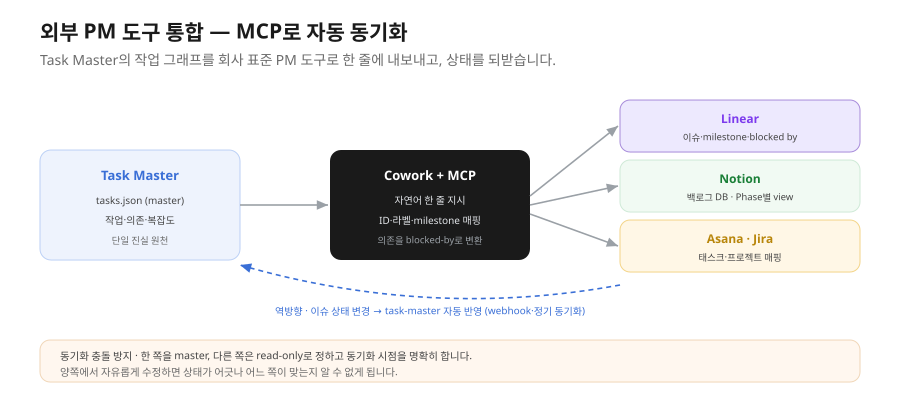
5.1 한 줄로 내보내기
Cowork에 Task Master와 PM 도구 MCP(예: Linear)를 함께 붙여두면, 한 문장으로 대량 이슈를 생성할 수 있습니다.
"task-master의 Phase 4 작업 22개를 Linear의 'RSVP' 프로젝트에 이슈로 자동 생성해줘.
- 각 이슈에 task-master ID, 복잡도, 예상 시간 라벨
- 의존 관계는 'blocked by' 링크로
- Phase별 milestone 자동 생성"
이 한 줄이 Linear에 22개 이슈를 만들고, 의존 관계와 milestone까지 채웁니다. 사람이 이슈를 하나씩 옮겨 적던 일이 사라집니다. 여기서 MCP는 Task Master의 작업 그래프를 읽어 PM 도구의 데이터 모델(이슈·라벨·milestone·blocked-by)로 옮겨주는 번역기 역할을 합니다.
5.2 양방향 동기화
한 방향(task-master → PM 도구)만으로도 유용하지만, PM 도구에서 바꾼 내용을 되받고 싶을 때가 있습니다. 개념은 이렇습니다.
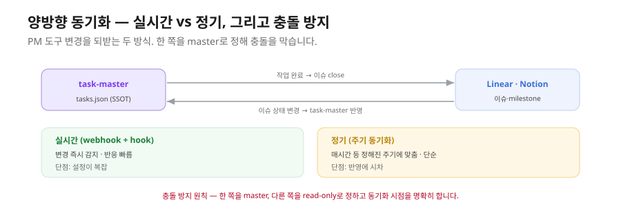
Linear에서 이슈 상태 변경 → Cowork가 task-master에 자동 반영
task-master에서 작업 완료 → Linear 이슈 자동 close
이를 성립시키는 방법은 두 가지입니다. 하나는 Linear webhook으로 변경을 즉시 감지해 Cowork hook으로 task-master를 갱신하는 실시간 방식이고, 다른 하나는 매시간처럼 정해진 주기에 양쪽을 맞추는 정기 동기화 방식입니다. 실시간은 반응이 빠르지만 설정이 복잡하고, 정기 방식은 단순하지만 반영에 시차가 있습니다.
5.3 Notion 백로그 동기화
Linear 대신 Notion DB를 표준으로 쓰는 회사라면 목적지만 바뀝니다.
"task-master의 모든 작업을 Notion '백로그' DB에 동기화해줘.
- 각 row: 작업 제목·상태·복잡도·담당자·의존
- Phase별 view 자동 생성"
작업 하나가 DB의 한 row가 되고, Phase별 view가 자동으로 만들어져 팀이 익숙한 Notion 화면에서 진행 상황을 봅니다. Asana나 Jira도 같은 원리로, 작업을 각 도구의 태스크·프로젝트 모델에 매핑합니다.
⚠️ 동기화 충돌을 조심하세요. 양쪽에서 자유롭게 수정하면 상태가 어긋나 어느 쪽이 맞는지 알 수 없게 됩니다. 한 쪽을 master로, 다른 쪽을 read-only로 정하고, 동기화 시점을 명확히 하는 것이 원칙입니다.
6. 로드맵 → 백로그 → 스프린트 자동 흐름
앞의 도구들을 하나로 이으면, 분기 로드맵에서 하루 단위 작업까지 자동으로 흐르는 파이프라인이 됩니다. 각 단계 사이의 분해·우선순위 분석·선택을 AI가 잇는 것이 핵심입니다.
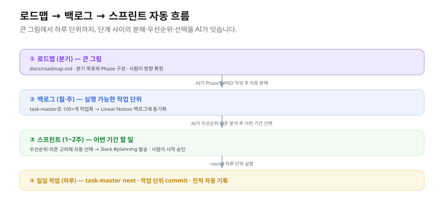
6.1 4단계 흐름
흐름은 네 층으로 정리됩니다. 맨 위 로드맵(분기)은 큰 그림으로, 사람이 방향을 확정합니다. 그 아래 백로그(월·주)는 실행 가능한 작업 단위로, AI가 로드맵을 Phase별 PRD로 풀고 그것을 작업으로 분해해 채웁니다. 다음 스프린트(1~2주)는 이번 기간에 할 일로, AI가 우선순위와 의존을 분석해 후보를 골라주면 사람이 시작을 승인합니다. 맨 아래 일일 작업(하루)은 스프린트 안에서 "다음 할 작업"으로 하나씩 실행됩니다. 단계와 단계 사이를 사람이 손으로 옮기지 않고 AI가 채워준다는 것이 전통 방식과의 결정적 차이입니다.
6.2 자동 흐름을 한 번에
이 전체를 하나의 자연어 지시로 묶을 수도 있습니다.
"이 로드맵(docs/roadmap.md)을 분석해서:
1. Phase별 PRD 작성 → docs/prds/<phase>.md
2. 각 PRD를 task-master로 백로그화
3. 백로그를 Linear에 동기화
4. 이번 스프린트(2주) 작업을 우선순위·의존 고려해 자동 선택
5. Slack #planning 채널에 발송"
Cowork이 30~60분 안에 이 다섯 단계를 이어서 처리합니다. 사람은 마지막에 스프린트 구성을 검토하고 시작을 승인하기만 하면 됩니다.
6.3 정기 리뷰 자동화
주간·월간 리뷰도 자동화 대상입니다. 예를 들어 매주 금요일 오후에 호출되는 리뷰 커맨드를 두고, 시니어 PM 역할을 부여한 뒤 다음을 자동으로 정리하게 할 수 있습니다. ① task-master·Linear에서 이번 주 완료 작업, ② 미완료 작업과 사유, ③ 다음 주 우선순위 5개, ④ 위험·블로커, ⑤ 팀에 Slack 알림 발송입니다. 호출 한 번으로 PM의 매주 리뷰가 자동으로 작성됩니다. 이때도 리뷰의 결론과 다음 주 우선순위 확정은 사람이 최종 판단합니다.
7. 흔한 함정
자동화가 강할수록, 사람이 검토·기준·역할을 잡아주지 않으면 오히려 어긋나기 쉽습니다. 대표적인 다섯 가지 함정과 해결책을 정리합니다.
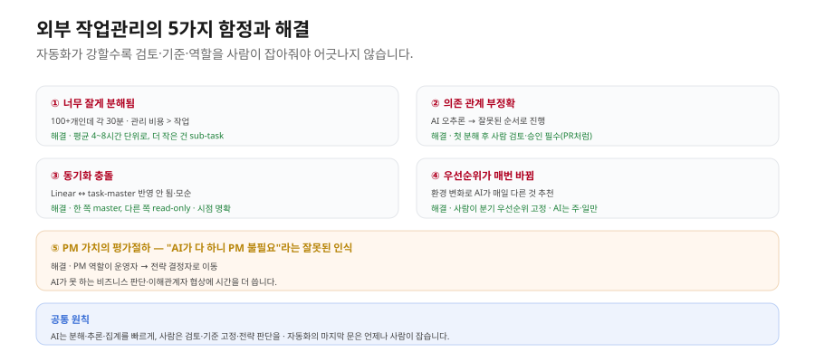
① 작업이 너무 잘게 분해됨 — 100개 넘게 쪼개졌는데 각 작업이 30분 이내라면, 추적·관리 비용이 작업 자체보다 커집니다. 작업을 평균 4~8시간 단위로 조정하고, 더 작은 것은 sub-task로 묶습니다.
② 의존 관계가 부정확 — AI가 잘못 추론한 의존이 잘못된 진행 순서로 이어집니다. 첫 분해 후 사람이 검토·승인하는 절차를 PR처럼 필수로 둡니다.
③ 외부 PM 도구와 동기화 충돌 — Linear에서 고친 것이 task-master에 반영되지 않거나 그 반대로 모순이 생깁니다. 한 쪽을 master, 다른 쪽을 read-only로 정하고 동기화 시점을 명확히 합니다.
④ 우선순위가 매번 바뀜 — 비즈니스 환경이 흔들리면 AI가 매일 다른 것을 추천해 팀이 혼란스러워집니다. 사람이 분기 우선순위를 고정하고, AI에게는 주·일 단위 조정만 맡깁니다.
⑤ PM 사람의 가치 평가절하 — "AI가 다 하니 PM은 필요 없다"는 인식은 잘못입니다. PM의 역할은 운영자에서 전략 결정자로 이동할 뿐입니다. AI가 못 하는 비즈니스 판단과 이해관계자 협상에 시간을 더 씁니다.
다섯 함정을 관통하는 공통 원칙은 하나입니다. AI는 분해·추론·집계를 빠르게 하고, 사람은 검토·기준 고정·전략 판단을 합니다. 자동화의 마지막 문은 언제나 사람이 잡습니다.
용어 정리
| 용어 |
뜻 |
| Task Master |
PRD를 100+개 작업으로 자동 분해하는 대규모 작업관리 도구. 분기 단위에 적합 |
| Shrimp Task Manager |
목표 한 줄을 10개 내외 작업으로 나누는 가벼운 도구. 주간 단위에 적합 |
| PRD |
제품 요구사항 문서. 배경·핵심 기능·비기능·일정을 담은 작업 분해의 입력 |
| 작업 자동 분해 |
PRD·목표를 AI가 작업 단위로 쪼개고 의존·복잡도까지 붙이는 것 |
| 의존 관계 추론 |
"A는 B 다음" 식 선후 관계를 AI가 자동으로 그리는 것. 첫 결과는 사람 검토 필요 |
| 복잡도 점수 |
각 작업의 난이도·예상 시간을 나타내는 값 |
| tasks.json |
Task Master가 작업을 저장하는 .taskmaster/tasks/ 안의 단일 진실 원천 |
| 외부 PM 도구 |
Linear·Notion·Asana·Jira 등 회사 표준 협업·이슈 관리 도구 |
| 자동 동기화 |
작업 그래프를 MCP로 PM 도구 데이터 모델(이슈·라벨·milestone)로 옮기는 것 |
| 양방향 동기화 |
PM 도구 변경을 task-master로 되받고, 반대로도 반영하는 방식 |
| master / read-only |
동기화 충돌을 막기 위해 한 쪽만 수정 권한을 갖게 하는 원칙 |
| 로드맵→백로그→스프린트 |
분기 큰 그림에서 하루 작업까지 AI가 단계를 잇는 자동 흐름 |
| 스프린트 |
우선순위·의존을 고려해 1~2주 안에 할 일로 고른 작업 묶음 |
| 정기 리뷰 자동화 |
주·월 단위 완료·미완료·우선순위·블로커를 자동 정리하는 커맨드 |
| PM 역할 이동 |
손으로 관리하는 운영자에서 방향·판단을 맡는 전략 결정자로 옮겨가는 변화 |
한눈에 정리
- 작업관리는 사람의 손에서 에이전트의 컨텍스트로 옮겨집니다. 분해·의존·추적·리포트가 AI로 넘어가고, 진행 상태는
tasks.json 같은 데이터로 외부화됩니다.
- 도구는 규모와 주기로 고릅니다. 분기 단위 큰 프로젝트는 Task Master(PRD → 100+개), 주간 단위 실행은 Shrimp(목표 한 줄 → 10개 내외). 둘은 보완 관계로 함께 씁니다.
- Task Master는 PRD를 작업 그래프로 만들고, 그 그래프가 매일의 실행으로 이어집니다. 첫 분해 뒤에는 반드시 사람이 검토·승인해 잘못된 의존을 걸러냅니다.
- 외부 PM 도구 통합은 MCP가 번역기 역할을 합니다. 한 줄로 Linear·Notion·Asana에 이슈를 대량 생성하되, 한 쪽을 master로 두어 동기화 충돌을 막습니다.
- 로드맵→백로그→스프린트를 AI가 잇되, 마지막 문은 사람이 잡습니다. 우선순위 고정·의존 검토·전략 판단은 PM의 몫으로 남고, AI는 반복과 집계를 맡습니다.
다음 강에서는 PRD·로드맵 자동화를 다룹니다. 이번 강이 이미 있는 PRD를 작업으로 분해하고 PM 도구로 흘려보내는 법이었다면, 다음 강은 그 출발점인 PRD와 로드맵 자체를 아이디어에서 자동으로 써 내려가는 방법을 세웁니다.
4부 · 고급
코딩 with Claude 고급 6강. PRD·로드맵 자동화 — 메타프롬프트와 서브에이전트
유형: 이론 (다이어그램 보강판) · 읽는 데 약 45분
선수: 고급 4강(서브에이전트·에이전트 팀) + 고급 5강(외부 작업관리 연동). 여러 서브에이전트가 격리된 컨텍스트에서 병렬로 일하고 결과를 코디네이터가 통합한다는 구조와, 로드맵이 Task Master·Linear 같은 외부 도구로 흘러간다는 흐름을 알고 있어야 합니다.
이 강을 마치면: ① 메타프롬프트가 "프롬프트를 만드는 프롬프트"라는 개념과 세 가지 패턴을 설명한다 ② 회사·도메인 표준에 맞춘 12개 섹션 PRD 템플릿을 자동 생성하는 원리를 이해한다 ③ 서브에이전트 협력으로 PRD를 만들고, 그 PRD를 분기 로드맵·마일스톤·백로그로 자동 전개하며, 변경 영향까지 분석하는 워크플로우를 설계한다.
0. 들어가며 — 기획자의 반복 산출물을 자동화한다
기획자(PM·서비스 기획자·전략가)가 매주·매월 반복해서 만드는 산출물이 있습니다. 신규 기능 PRD, 분기 로드맵, 시장 분석 리포트, 린캔버스·비즈니스 모델 캔버스, 프로젝트 회고 같은 것들입니다. 이들은 대부분 표준 형식이 정해져 있고, 매번 채워 넣는 뼈대가 비슷합니다. 바로 이 지점이 자동화에 유리합니다.
이 강에서는 고급 4강의 멀티에이전트(서브에이전트 협력)와 이 강에서 새로 배우는 메타프롬프트 패턴을 결합해, 한 줄 아이디어를 완성된 PRD와 로드맵, 백로그까지 자동으로 전개하는 워크플로우를 다룹니다. 목표는 명확합니다. 한 줄 아이디어에서 시작해 30~60분 안에 정식 산출물이 나오도록 만드는 것입니다.
이 강에서 다룰 내용은 다음 여섯 가지입니다.
| # |
주제 |
한 줄 요약 |
| 1 |
메타프롬프트 |
"무엇을 써라"가 아니라 "잘 쓰기 위한 프롬프트를 먼저 짜라" |
| 2 |
PRD 템플릿 자동 생성 |
회사·도메인 표준을 학습해 12개 섹션 템플릿을 만든다 |
| 3 |
서브에이전트 협력 PRD |
전문가 에이전트 여럿이 병렬로 조사하고 코디네이터가 통합 |
| 4 |
로드맵 자동 도출 |
PRD 한 개를 분기 로드맵·마일스톤·백로그로 전개 |
| 5 |
변경 영향 분석 |
마일스톤 하나를 옮기면 무엇이 흔들리는지 자동 추적 |
| 6 |
린캔버스 자동화 |
사업 모델 9영역을 데이터 기반으로 작성·검증 |
📌 러닝 예시 — 이 강에서는 사내 이벤트 RSVP 서비스(참석 신청·취소·정원 관리)를 예시로 씁니다. "RSVP에 대기열(웨이팅) 기능을 붙인다"는 한 줄 아이디어를 PRD로, 다시 분기 로드맵과 백로그로 전개해 가며 각 개념을 설명합니다.
1. 메타프롬프트 — 프롬프트를 만드는 프롬프트
1.1 정의
메타프롬프트는 "X를 작성하라"가 아니라 "X를 잘 작성하기 위한 프롬프트를 먼저 작성하라"고 지시하는 방식입니다. 한 단계를 더 두는 것입니다.
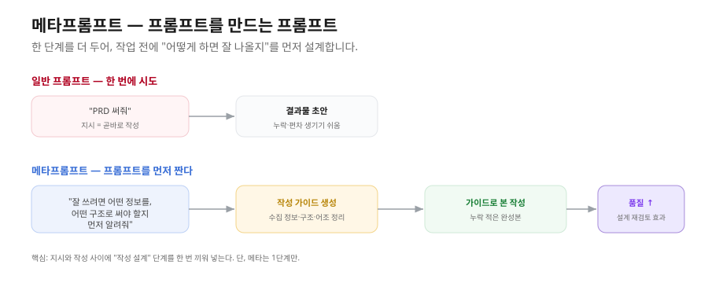
일반 프롬프트와 비교하면 차이가 분명합니다.
- 일반 프롬프트: "RSVP 대기열 기능 PRD 써줘" — AI가 곧바로 한 번에 시도합니다.
- 메타프롬프트: "이 PRD를 가장 잘 쓰려면 어떤 정보를 먼저 모으고, 어떤 구조로, 어떤 어조로 써야 할지부터 알려줘" — AI가 먼저 좋은 작성 가이드를 짜고, 그 가이드로 실제 작업을 합니다.
1.2 왜 효과적인가
복잡한 작업일수록 사람이 처음부터 정확한 프롬프트를 짜기 어렵습니다. 무엇을 빠뜨렸는지, 어떤 순서로 채워야 하는지 사람 스스로도 모르는 경우가 많기 때문입니다. 여기서 "어떻게 하면 좋은 결과가 나올지"를 AI에게 먼저 묻는 단계가 들어가면, 작업 자체의 설계가 한 번 더 검토되어 결과 품질이 올라갑니다.
특히 PRD처럼 표준 형식이 정해진 산출물에 효과적입니다. 채워야 할 섹션과 각 섹션의 요건을 AI가 먼저 정리하게 하면, 본 작성 단계에서 누락이 크게 줄어듭니다.
1.3 메타프롬프트 세 가지 패턴
메타프롬프트는 대체로 세 형태로 씁니다.
| 패턴 |
방식 |
특징 |
| A. 직접 메타 |
AI가 작성 가이드를 먼저 제시 → 사람이 검토·보강 → 그 가이드로 본 작성 |
사람이 중간에 개입해 방향을 잡음 |
| B. 자동 메타 |
가이드 도출용 서브에이전트가 가이드를 만들고, 작성용 서브에이전트가 그 가이드로 본문 작성 |
사용자는 결과만 받음. 가장 자동화됨 |
| C. 반복 메타 |
초안을 스스로 분석해 부족한 부분을 찾고, 그 부분을 채울 추가 프롬프트를 만들어 자기를 다시 호출 |
자기 개선 루프. 한 사이클로 품질 향상 |
패턴 A(직접 메타)는 이런 식입니다.
"RSVP 대기열 기능 PRD를 작성하려고 해.
이걸 가장 잘 쓰려면 어떤 정보를 먼저 수집하고,
어떤 구조로, 어떤 어조로 써야 할지 먼저 알려줘.
그 가이드를 받아 검토한 뒤에 실제 PRD를 작성할 거야."
AI가 가이드를 제시하면 사용자가 보강한 뒤, 그 가이드로 본문을 작성합니다.
패턴 B(자동 메타)는 서브에이전트로 두 단계를 묶습니다.
"RSVP 대기열 기능 PRD를 만들어줘.
prd-meta-planner 서브에이전트로 먼저 작성 가이드를 도출하고,
그 가이드로 prd-writer 서브에이전트를 호출해 본 PRD를 작성해."
가이드 도출과 본 작성이 자동으로 이어지므로, 사용자는 완성본만 받습니다.
패턴 C(반복 메타)는 자기 개선 루프입니다. 초안을 본 뒤 부족한 부분을 스스로 분석하고, 그 부분을 채울 추가 프롬프트를 만들어 자기를 한 번 더 호출합니다. 한 사이클만 돌려도 초안 품질이 눈에 띄게 올라갑니다.
⚠️ 메타는 한 단계만 — 메타프롬프트의 메타프롬프트로 계속 파고들면 실제 결과가 나오지 않고 시간·비용만 쌓입니다. 메타는 원칙적으로 1단계만 두고, 그 이상은 두지 않습니다.
2. PRD 템플릿 자동 생성 — 회사 표준을 12개 섹션으로
2.1 같은 "PRD"라도 회사·도메인마다 다르다
같은 PRD라도 회사마다, 도메인마다 표준이 다릅니다.
| 도메인 |
강조되는 영역 |
| B2B SaaS |
통합·API·SLA |
| B2C 모바일 |
UI 시안·페르소나·사용자 심리 |
| 정부·공공 사업 |
규정·예산·공공성 |
| 사내 도구(예: RSVP) |
사내 운영 흐름·권한·기존 시스템 연동 |
따라서 남의 템플릿을 그대로 쓰기보다, 본인 회사 표준에 맞는 PRD 템플릿을 한 번 자동으로 만들어 두고 유지하는 편이 낫습니다.
2.2 자동 템플릿 생성의 원리
템플릿을 자동으로 만드는 원리는 "우리가 이미 쓴 좋은 PRD들"을 학습 재료로 삼는 것입니다. 지난 PRD 몇 개와 비즈니스 모델 문서, 디자인 시스템 가이드를 근거로 다음을 뽑아냅니다.
- 지난 PRD들의 공통 섹션을 추출합니다.
- 회사 도메인에 특화된 영역(예: 사내 이벤트 서비스라면 정원·권한·알림 연동)을 강조합니다.
- 각 섹션의 표준 길이와 필수 항목을 정합니다.
결과로 templates/prd-template.md 한 파일이 나오고, 각 섹션에는 작성 가이드가 함께 들어갑니다. 이 템플릿이 한 번 만들어지면 이후 모든 PRD가 같은 구조를 갖게 됩니다. 생성된 템플릿의 앞부분은 대략 이런 모습입니다(축약).
# {기능명} PRD
<!-- 각 섹션의 <가이드>는 작성 시 지우고 내용으로 채웁니다 -->
## 1. 배경 (약 300단어)
<가이드: 시장 상황·사용자 페인 포인트·비즈니스 영향을 순서대로>
## 2. 목표 (약 200단어)
<가이드: Primary/Secondary 지표와 측정 방법·기간을 숫자로>
## 5. 기능 요구사항 (약 1,000단어)
<가이드: MoSCoW로 분류 — Must / Should / Could / Won't Have>
## 9. 법적·규정 검토 (약 300단어) ← 도메인 특화 섹션
<가이드: 개인정보 처리·약관·대기 순번 공개 범위 등 도메인 법규>
2.3 12개 섹션 PRD 템플릿 구조
자동 생성된 표준 템플릿은 대체로 다음 12개 섹션으로 구성됩니다. 각 섹션에는 표준 분량과 필수 항목이 지정됩니다.
| # |
섹션 |
표준 분량 |
핵심 항목 |
| 1 |
배경 |
약 300단어 |
시장 상황, 사용자 페인 포인트, 비즈니스 영향 |
| 2 |
목표 |
약 200단어 |
Primary/Secondary 지표, 측정 방법·기간 |
| 3 |
사용자 페르소나 |
약 500단어 |
주 페르소나, 행동 패턴, 결정 요인 |
| 4 |
시나리오 |
약 500단어 |
핵심 시나리오 3개, 해피 패스, 엣지 케이스 |
| 5 |
기능 요구사항 |
약 1,000단어 |
Must / Should / Could / Won't Have |
| 6 |
비기능 요구사항 |
약 300단어 |
성능·보안·접근성·멀티 디바이스 |
| 7 |
디자인·UX |
약 500단어 |
핵심 화면 와이어프레임, 인터랙션 흐름, 디자인 시스템 적용 |
| 8 |
기술 아키텍처 |
약 500단어 |
시스템 다이어그램, DB 스키마 변경, 외부 API, 인프라 영향 |
| 9 |
법적·규정 검토 |
약 300단어 |
도메인 법규, 개인정보·약관 처리 |
| 10 |
일정·마일스톤 |
약 200단어 |
Phase 1·2·3, 산출물, 의존 관계 |
| 11 |
위험·완화 |
약 300단어 |
Top 5 위험과 각 완화책 |
| 12 |
검증·출시 |
약 200단어 |
베타·A/B 테스트, 성공 기준 |
5번(기능 요구사항)의 Must/Should/Could/Won't 구분은 이른바 MoSCoW 우선순위이고, 9번(법적·규정 검토)은 도메인마다 내용이 크게 달라지는 대표적인 특화 섹션입니다. RSVP 대기열 기능이라면 9번에는 참석자 개인정보 처리, 대기 순번 공개 범위 같은 항목이 들어갑니다.
💡 각 섹션에 "약 300단어"처럼 분량을 명시해 두는 이유는, 명시하지 않으면 자동 생성 결과가 어떤 섹션은 지나치게 길고 어떤 섹션은 한 줄로 끝나는 편차가 생기기 때문입니다. 표준 분량은 그 편차를 잡아 주는 장치입니다.
3. 서브에이전트 협력 PRD 생성
3.1 코디네이터 + 전문가 7명 패턴
PRD 한 편에는 시장 조사, 페르소나, 기술 아키텍처, UX, 법적 검토, 위험 식별처럼 성격이 다른 조사가 모두 들어갑니다. 이를 한 에이전트가 순차로 하면 느리고, 앞 조사의 편향이 뒤로 번지기 쉽습니다. 그래서 고급 4강에서 배운 코디네이터 + 전문가 병렬 구조를 씁니다.
메인 코디네이터가 입력을 받아 도메인을 감지하고, 여섯 전문가를 병렬로 호출한 뒤, 그 결과를 prd-writer가 표준 템플릿 구조로 통합합니다. 마지막으로 코디네이터가 자가 점검을 거쳐 사용자에게 검토를 요청합니다.
3.2 메인 PRD 코디네이터
코디네이터는 1줄 아이디어부터 완성 PRD까지 책임지는 시니어 PM 역할입니다. 서브에이전트 정의(프론트매터 + 지시)의 핵심만 보면 다음과 같습니다.
---
name: prd-coordinator
description: 새 기능·제품 아이디어를 받아 정식 PRD로 자동 생성. 전문가 에이전트 분배.
tools: [Read, Write, WebSearch]
model: opus
---
# 시스템 프롬프트
당신은 시니어 프로덕트 매니저입니다. 한 줄 아이디어부터 완성 PRD까지 책임집니다.
## 입력
- 한 줄 아이디어 또는 PRD 초안
- 도메인: $도메인 (생략 시 자동 감지)
## 표준 템플릿
회사 표준 `templates/prd-template.md`의 12개 섹션 구조를 따릅니다.
본문의 진행 단계는 다섯 단계입니다.
- 입력 분석 + 도메인 감지 — 아이디어가 어느 카테고리인지(예: 사내 도구·부동산·금융) 판별합니다.
- 전문가 병렬 호출 — 아래 여섯 전문가를 동시에 호출합니다.
- 본 PRD 작성 — prd-writer에게 여섯 결과와 표준 템플릿을 넘겨 통합 본문을 만듭니다.
- 자가 점검 — 빠진 섹션은 없는지, 모순은 없는지, 지표가 측정 가능한지, 도메인 특화 영역이 충실한지 확인합니다.
- 사용자 검토 요청 — 완성 PRD를 Notion·git에 저장하고 사용자에게 알립니다.
진행 원칙으로는 단계 사이에 사용자 검토 옵션을 두고, 전문가 결과가 미흡하면 자동 재호출하며, 30~60분 내 완성을 목표로 합니다.
3.3 전문가 일곱 에이전트의 역할
| 에이전트 |
역할 |
| market-researcher |
WebSearch로 경쟁사·트렌드·시장 규모 조사. 경쟁 제품 5개 비교표 |
| user-researcher |
페르소나 2~3개 + 시나리오 3개. 사용자 인터뷰 데이터가 있으면 활용 |
| tech-architect |
시스템 다이어그램 + DB 스키마 변경 + API 변경 + 인프라 영향 |
| ux-designer |
UX 흐름도 + 핵심 화면 와이어프레임(텍스트). 필요 시 Figma MCP |
| legal-reviewer |
도메인 법규 + 개인정보·약관 영향 |
| risk-analyst |
Top 10 위험 식별 + 각 완화책 |
| prd-writer |
위 결과를 표준 템플릿 구조로 통합. 톤 일관성 유지 |
각 에이전트는 .claude/agents/<name>.md로 정의합니다. 코디네이터는 앞의 여섯을 병렬로 호출하고, prd-writer는 그 결과가 모두 모인 뒤 마지막에 통합을 맡습니다.
3.4 호출과 결과
RSVP 대기열 기능이라면 코디네이터 호출은 이렇게 단순합니다.
"새 기능: 'RSVP 대기열(웨이팅)'. 정원이 찬 행사에 대기 신청을 받고,
취소가 나면 순번대로 자동 승격. prd-coordinator로 정식 PRD 만들어줘."
30~60분 뒤에는 대략 다음과 같은 완성 보고가 돌아옵니다. PRD 문서가 지정 경로에 저장되고, 12개 섹션이 모두 채워지며, 식별된 위험 중 상위 몇 개가 자동으로 강조되고, Notion 발행과 Slack 검토 요청까지 이어집니다.
💡 코디네이터가 여섯 전문가를 병렬로 부른다는 점이 핵심입니다. 순차로 하면 조사에만 오래 걸리지만, 병렬이면 가장 오래 걸리는 한 전문가 시간에 수렴합니다. 다만 통합을 맡는 prd-writer는 여섯 결과가 모두 온 뒤에 시작해야 하므로 병렬이 아니라 마지막 순서에 둡니다.
4. 로드맵 자동 도출
4.1 PRD → 로드맵 → 마일스톤 → 백로그
PRD가 완성되면, 그 한 편을 분기 로드맵으로 자동 변환할 수 있습니다. 로드맵은 다시 마일스톤으로, 마일스톤은 다시 백로그(작업 목록)로 전개됩니다. 이 네 단계가 자동으로 이어지는 흐름이 이 절의 핵심입니다.
로드맵 변환을 요청할 때는 산출 형태를 함께 지정합니다. 몇 개 분기로 나눌지, 각 분기에 핵심 마일스톤을 몇 개 둘지, 의존 관계와 리소스(인원·시간)를 추정할지 같은 요구입니다.
"방금 만든 RSVP 대기열 PRD를 분기 로드맵으로 변환해줘.
- 분기 4개(Q1~Q4)
- 각 분기 핵심 마일스톤 1~2개
- 의존 관계 자동 추론
- 리소스 추정(인원·시간)
- 출시 준비도 phase별"
결과로는 분기별 마일스톤과 리소스, 의존 관계가 정리됩니다. 예를 들어 Q1에는 "대기열 신청·순번 관리 MVP"와 "자동 승격 알림 베타"가 놓이고, 각 마일스톤 아래에 필요한 인력과 선행 의존(정원 관리 기능 완성 등)이 붙습니다.
4.2 로드맵 → 백로그 자동 변환
로드맵의 각 마일스톤은 고급 5강에서 다룬 방식대로 Task Master로 넘겨 100개 이상의 세부 작업으로 분해하고, 이를 Linear에 동기화합니다. 즉 로드맵이 곧바로 실행 가능한 백로그로 내려앉습니다. PRD → 로드맵은 이 강에서, 로드맵 → 백로그의 도구 연동은 5강에서 다룬 패턴을 잇는 것입니다.
4.3 시각화
자동 생성된 로드맵은 Mermaid 간트차트 같은 형식으로 시각화해 문서·발표 자료에 넣을 수 있습니다. 개념적으로는 다음과 같은 형태입니다.
gantt
title 2026 RSVP 대기열 로드맵
dateFormat YYYY-MM-DD
section Q1
대기열 MVP :2026-04-01, 90d
자동 승격 알림 베타 :2026-05-15, 75d
section Q2
정식 출시 :2026-07-01, 60d
이렇게 만든 다이어그램을 Notion·PRD·임원 발표 자료에 자동으로 삽입하면, 텍스트 로드맵과 시각 자료가 항상 같은 원본에서 나오므로 어긋나지 않습니다.
5. 로드맵 변경 영향 분석
5.1 변경은 일상이다
로드맵은 한 번 그리면 끝이 아닙니다. 분기·월 단위로 비즈니스 환경이 바뀌면 수정이 필요하고, 마일스톤 하나를 옮기는 순간 뒤따르는 작업·리소스·재무가 함께 흔들립니다. 손으로 이 영향을 다 추적하기는 어렵기 때문에, 변경 영향을 자동으로 분석하는 워크플로우를 둡니다.
5.2 영향 분석 워크플로우
변경 의도를 자연어로 던지면, 영향 분석 에이전트가 다섯 단계로 파장을 추적합니다.
"Q2 정식 출시를 Q3로 미루고 싶어.
이 변경이 다른 마일스톤·작업·리소스·재무에 미치는 영향을 분석해줘."
- 의존 관계 그래프 추적 — 변경 대상이 무엇과 연결돼 있는지 훑습니다.
- 후속 마일스톤 식별 — 그 마일스톤에 의존하는 뒤 작업들을 찾습니다.
- 리소스 재배치 시뮬레이션 — 비게 된 인력을 어디로 옮길 수 있는지 계산합니다.
- 재무 영향 — 매출·비용 시점이 얼마나 밀리는지 산정합니다.
- 위험·기회 재평가 — 지연으로 커지는 위험과 새로 생기는 기회를 다시 봅니다.
결과는 직접 영향(해당 마일스톤 지연, 매출 시작 지연), 간접 영향(후속 마일스톤 자동 이동, 인력 재배치 여지, 경쟁 위험 상승), 추천 액션의 세 묶음으로 정리됩니다.
5.3 승인 시 자동 갱신
분석 결과를 사람이 승인하면, 관련 시스템에 변경이 한꺼번에 반영됩니다. 로드맵 문서, Task Master 작업 일정, Linear 마일스톤, Notion 분기 페이지, Slack 공지가 모두 자동으로 갱신됩니다. 즉 "결정 → 전 시스템 동기화"가 한 번의 승인으로 끝납니다.
⚠️ 자동 반영은 승인 뒤에만 — 영향 분석과 실제 반영은 분리합니다. 분석까지는 AI가 하되, 여러 시스템을 실제로 바꾸는 단계는 사람이 승인한 뒤에만 실행되도록 둡니다. 분석 결과를 그대로 반영해 버리면, 잘못된 가정 하나가 로드맵 전체를 오염시킬 수 있습니다.
6. 린캔버스 자동화
6.1 린캔버스가 무엇인가
린캔버스는 사업 모델을 1페이지로 정리하는 프레임워크입니다. 문제, 고객 세그먼트, 가치 제안, 솔루션, 채널, 수익 모델, 비용 구조, 핵심 지표, 압도적 우위의 9개 영역으로 이뤄집니다. PRD가 "무엇을 어떻게 만들지"라면, 린캔버스는 "이 사업이 성립하는지"를 한 장으로 검토하는 도구입니다.
6.2 자동 작성의 원리
린캔버스 자동 작성의 요령은 세 가지 제약을 거는 것입니다. 각 영역을 ① 데이터 기반(시장 조사·경쟁사 분석 근거)으로, ② 구체적(추측이 아니라 측정 가능한 형태)으로, ③ 실제 실행 주체 관점(1인 개발자라면 큰 회사를 가정하지 않기)으로 쓰게 합니다. 이 제약이 없으면 9영역이 모두 추상적인 문장으로 채워져 검토 가치가 떨어집니다.
예를 들어 수익 모델은 "구독으로 돈을 번다"가 아니라 "월 구독 2.9만원, Pro 5.9만원(다중 계정), PG 수수료 0.5% 별도"처럼 숫자가 붙어야 하고, 고객 세그먼트도 "소상공인"이 아니라 "직원 5명 미만 음식점·카페(전국 약 80만 곳)"처럼 규모가 붙어야 합니다. 이 제약을 지킨 RSVP 린캔버스의 일부는 이렇게 나옵니다.
# 린캔버스 — RSVP 대기열 서비스
## 문제 정원 초과 시 수기 대기자 관리로 취소→승격 누락이 잦음
## 고객 세그먼트 월 5회 이상 유료 행사를 여는 소규모 주최자(국내 약 3만 곳)
## 가치 제안 "취소가 나면 30초 안에 다음 대기자에게 자동 승격 안내"
## 수익 모델 월 구독 2.9만원 · Pro 5.9만원(다중 행사) · PG 수수료 0.5% 별도
## 핵심 지표 승격 자동화율 · 대기→참석 전환율 · 유료 전환율
## 압도적 우위 기존 폼 도구엔 없는 '대기 순번+자동 승격' 로직 내재화
6.3 캔버스 검증 자동화
작성된 린캔버스는 다시 자동 검증을 겁니다. 검증 관점은 다섯 가지입니다.
| # |
검증 관점 |
| 1 |
9영역이 서로 일관되는가 (가치 제안 ↔ 솔루션, 솔루션 ↔ 비용) |
| 2 |
경쟁 분석이 충실한가 |
| 3 |
핵심 지표가 측정 가능한가 |
| 4 |
실행 주체가 실제로 실행 가능한가 |
| 5 |
Top 5 위험과 완화책이 있는가 |
이 자동 검증은 작성자가 스스로 놓치기 쉬운 약점(예: 솔루션은 거창한데 비용 구조가 이를 감당하지 못함)을 드러내는 데 특히 유용합니다.
7. 자주 마주치는 함정
자동화 워크플로우를 실제로 운영할 때 반복해서 나타나는 함정과 대응을 정리합니다.
| 함정 |
증상 |
대응 |
| PRD가 너무 일반적 |
자동 생성 PRD가 추상적이고 회사 특화가 약함 |
표준 템플릿에 도메인 특화 섹션을 강제하고, 지난 PRD들을 학습 재료로 명시 |
| 메타의 메타 |
메타프롬프트를 계속 파고들어 실제 결과가 안 나옴 |
메타는 1단계만. 그 이상은 두지 않음 |
| 비즈니스 판단 회피 |
"AI가 다 했다"며 핵심 결정까지 AI에 위임 |
AI는 수집·구조화·초안까지. 핵심 결정은 사람이 |
| 템플릿 노화 |
한 번 만든 표준 템플릿을 오래 방치 |
분기마다 템플릿을 갱신·개선 |
| 검토 없는 발행 |
자동 생성물이 곧바로 머지·발행됨 |
자동 생성과 사람 검토를 분리. 검토 통과 후에만 발행 |
이 다섯 함정의 공통 교훈은 하나입니다. 자동화는 수집·구조화·초안까지를 맡고, 판단과 승인은 사람이 쥐고 있어야 한다는 것입니다. 이 경계가 무너지면 자동화의 속도가 오히려 잘못된 결정을 빠르게 확산시키는 통로가 됩니다.
용어 정리
| 용어 |
뜻 |
| 메타프롬프트 |
"X를 써라"가 아니라 "X를 잘 쓰기 위한 프롬프트를 먼저 짜라"고 지시하는 방식 |
| 직접 메타(패턴 A) |
AI가 작성 가이드를 먼저 제시하고 사람이 검토·보강한 뒤 본 작성 |
| 자동 메타(패턴 B) |
가이드 도출용·작성용 서브에이전트를 이어 붙여 완성본만 받는 방식 |
| 반복 메타(패턴 C) |
초안을 스스로 분석해 부족한 부분을 채우는 추가 프롬프트로 자기를 다시 호출하는 자기 개선 루프 |
| PRD |
제품 요구사항 문서. 무엇을 왜 어떻게 만들지 정리한 표준 산출물 |
| PRD 템플릿 자동 생성 |
지난 PRD·비즈니스 문서를 학습해 회사 표준 12개 섹션 템플릿을 만드는 것 |
| MoSCoW |
기능을 Must/Should/Could/Won't Have로 나누는 우선순위 기준 |
| PRD 코디네이터 |
아이디어를 받아 전문가 서브에이전트를 분배하고 결과를 통합하는 메인 에이전트 |
| 전문가 서브에이전트 |
market-researcher·user-researcher 등 특정 조사를 격리 컨텍스트에서 병렬 수행하는 에이전트 |
| 로드맵 자동 도출 |
완성 PRD를 분기·마일스톤 단위의 로드맵으로 자동 변환하는 것 |
| 마일스톤 |
분기 안에서 달성해야 할 핵심 성과 단위. 의존 관계·리소스가 붙음 |
| 백로그 |
마일스톤을 실행 가능한 세부 작업으로 분해한 목록 (Task Master·Linear 연동) |
| 변경 영향 분석 |
마일스톤 하나의 이동이 후속 작업·리소스·재무·위험에 미치는 파장을 자동 추적하는 것 |
| 린캔버스 |
사업 모델을 문제·고객·가치 제안 등 9영역 1페이지로 정리하는 프레임워크 |
한눈에 정리
- 메타프롬프트는 "프롬프트를 만드는 프롬프트"입니다. 작업 전에 "어떻게 하면 잘 나올지"를 먼저 짜게 하면 결과 품질이 오르고, PRD처럼 표준 형식이 있는 산출물에 특히 효과적입니다. 다만 메타는 1단계만 둡니다.
- 회사 표준 12개 섹션 PRD 템플릿을 한 번 자동 생성해 두면 이후 모든 PRD가 같은 구조를 갖습니다. 각 섹션에 표준 분량과 필수 항목을 명시해 편차를 줄입니다.
- PRD 생성은 코디네이터 + 전문가 병렬 구조로 합니다. 여섯 전문가가 격리 컨텍스트에서 병렬 조사하고, prd-writer가 마지막에 표준 템플릿으로 통합합니다.
- PRD → 로드맵 → 마일스톤 → 백로그가 자동으로 이어집니다. 로드맵의 마일스톤은 Task Master·Linear로 내려가 실행 가능한 작업이 되고, 시각 자료도 같은 원본에서 생성됩니다.
- 변경 영향 분석은 AI가, 실제 반영은 사람 승인 뒤에 합니다. 자동화는 수집·구조화·초안까지 맡고, 판단과 승인은 사람이 쥔다는 경계가 모든 자동화의 안전선입니다.
다음 강에서는 컨텍스트·비용 엔지니어링 — 긴 작업에서 컨텍스트 창을 어떻게 관리하고, 모델·토큰 비용을 어떻게 설계해 자동화 워크플로우를 실전에서 지속 가능하게 만드는지를 다룹니다.
4부 · 고급
코딩 with Claude 고급 7강. 컨텍스트·비용 엔지니어링
유형: 이론 (다이어그램 보강판) · 읽는 데 약 50분
선수: 입문·중급 전 과정과 고급 1~6강. 특히 MCP 다중 운영(중급 5강), Hooks 고급(고급 3강)의 메트릭 수집, 서브에이전트 감각이 있으면 이 강의 조합 예시가 쉽게 읽힙니다.
이 강을 마치면: ① 프롬프트 엔지니어링과 컨텍스트 엔지니어링을 구분하고 컨텍스트 윈도우의 점유자를 설명한다 ② MCP Tool Search로 도구 10개 이상을 온디맨드로 연결한다 ③ 세션 분리·Auto Memory 고급·모듈형 룰·서브에이전트 격리로 컨텍스트를 절약한다 ④ 작업 성격별 모델 선택 매트릭스와 비용 분석 대시보드로 팀의 AI 비용을 관리한다.
0. 들어가며 — 플랫폼 운영자의 시선
입문·중급·고급 1~6강을 거치며 본인 환경은 풍부해졌습니다. 스킬·플러그인·MCP·서브에이전트·Hooks·Agent Teams·Task Master·PRD 자동화가 모두 손에 들어왔습니다. 그런데 이 모든 것이 한 세션에서 동시에 돌면 새로운 문제가 생깁니다. 컨텍스트·토큰·비용이 폭발합니다.
이 강은 그 폭발을 관리하는 "플랫폼 운영자" 단계입니다. 한 사람이 도구를 잘 쓰는 것을 넘어, 팀 전체가 AI를 지속 가능하게 운영하도록 환경을 설계하는 관점입니다. 핵심은 한 문장으로 요약됩니다.
- 프롬프트 엔지니어링 — "어떻게 물어볼까"
- 컨텍스트 엔지니어링 — "무엇을 입력에 넣을까"
대규모 운영에서 성능과 비용을 좌우하는 것은 후자입니다. 이 강은 프롬프트 대 컨텍스트의 차이에서 출발해, MCP Tool Search·세션 분리·Auto Memory 고급·모듈형 룰·서브에이전트 격리·모델 선택 매트릭스·비용 대시보드까지 차례로 다룹니다.
📌 러닝 예시 — 이 강에서도 사내 이벤트 RSVP 서비스(참석 신청·취소·정원 관리)를 예시로 씁니다. RSVP를 여러 세션에서, 여러 모델로, 여러 MCP를 붙여 운영한다고 떠올리면 각 기법이 어디에 놓이는지 잡기 쉽습니다.
1. 프롬프트 엔지니어링 vs 컨텍스트 엔지니어링
1.1 두 가지의 차이
Claude로 코딩을 처음 배울 때는 "어떻게 하면 AI에게 더 잘 물을까"에 집중합니다. 이것이 프롬프트 엔지니어링입니다. 하지만 도구가 많아지고 프로젝트가 커지면, 질문 자체보다 AI가 무엇을 보고 답하는가가 결과를 좌우하기 시작합니다. 이것이 컨텍스트 엔지니어링입니다.
| 항목 |
프롬프트 엔지니어링 |
컨텍스트 엔지니어링 |
| 초점 |
사용자 발화 자체의 품질 |
입력에 무엇을 넣을지의 설계 |
| 변수 |
단어·구조·예시 |
컨텍스트 윈도우의 모든 것 (시스템·MCP·CLAUDE.md·메모리·대화) |
| 효과 |
응답 품질 |
응답 품질 + 비용 + 속도 |
| 시점 |
한 번의 호출 |
모든 호출에 영향 |
| 학습 |
입문~중급 |
고급·플랫폼 운영자 |
프롬프트는 "더 잘 묻는 법"이고, 컨텍스트는 "AI가 더 잘 답할 수 있게 환경을 짜는 법"입니다. 프롬프트를 아무리 잘 다듬어도 컨텍스트가 오염되어 있으면(불필요한 도구가 잔뜩 켜져 있고, 오래된 메모리가 쌓여 있고, 대화가 600K를 넘어가면) 응답 품질은 떨어지고 비용은 올라갑니다.
1.2 컨텍스트 윈도우의 5가지 점유자
Sonnet 4.6의 1M 토큰 컨텍스트 윈도우에는 다섯 종류가 들어갑니다.
| 점유자 |
일반 비중 |
성격 |
| 시스템 프롬프트 (Claude 자체) |
10~50K |
고정 |
| MCP 메타데이터 |
5~150K (활성 MCP 수에 따라) |
가변 |
| CLAUDE.md (글로벌·프로젝트) |
2~20K |
고정 |
| Auto Memory |
5~30K |
가변 |
| 대화 + 도구 호출 결과 |
가변 (점점 증가) |
가변 |
세션을 시작하는 순간 이미 50~250K가 점유됩니다. 여기에 큰 작업이 얹히면 600K를 넘어서고, 그 지점부터 응답 품질이 눈에 띄게 떨어집니다. 대화 히스토리·파일 내용·시스템 규칙을 담을 공간이 부족해지기 때문입니다.
1.3 컨텍스트 엔지니어링의 5가지 레버
다행히 위 점유자 중 상당수는 우리가 조작할 수 있습니다. 컨텍스트 엔지니어링은 다음 다섯 변수를 다루는 일입니다.
- MCP — 켜진 MCP 수·도구 수·메타데이터 길이 → 2장(Tool Search)
- CLAUDE.md — 길이·모듈화·필요 시점 로드 → 5장(모듈형 룰)
- Auto Memory — 양·rotation·압축 → 4장
- 대화 — 압축·분할·저장 후 재로드 → 3장(세션 분리)
- Sub-agent — 컨텍스트 분리 + 병렬 → 6장
이 다섯 개를 각각 어떻게 관리하는지가 이 강의 본문입니다.
2. MCP Tool Search — 도구 10개 이상 동시 연결
2.1 문제 상황
회사가 클수록 MCP 도구는 늘어납니다. 30~50개에 이르기도 합니다. 이걸 모두 켜두면 메타데이터만으로 컨텍스트의 15~30%가 점유됩니다. 그렇다고 안 켜두면 사용자가 매번 필요한 도구를 활성화·비활성화해야 하는 번거로움이 생깁니다. 도구가 많아질수록 이 딜레마는 심해집니다.
2.2 Tool Search 패턴
Tool Search는 이 딜레마를 우회합니다. 도구 정보를 컨텍스트에 미리 로드하지 않고, 호출이 필요한 시점에 검색해서 그 도구만 로드하는 방식입니다.
흐름은 다음과 같습니다.
- MCP를 등록하되 메타데이터만 색인해 둡니다(도구 본체는 로드하지 않음).
- 사용자가 자연어로 요청합니다.
- 메인 에이전트가 "이 작업에 어떤 도구가 필요한지" 판단합니다.
- Tool Search로 후보 도구 5~10개를 검색합니다.
- 선택된 도구만 컨텍스트에 로드합니다.
- 호출해 결과를 받습니다.
- 사용 후 그 도구 메타데이터를 컨텍스트에서 제거합니다.
이 패턴이 활성화되면 30개 MCP를 등록해도 컨텍스트는 작업당 5K 미만만 점유합니다. 등록 개수가 늘어도 상시 비용은 거의 0에 수렴합니다.
2.3 구현과 호출 흐름
메타 MCP(tool-search)를 붙이고, 사내 MCP 정보를 담은 레지스트리를 가리키게 합니다. 설정 자체는 간단합니다.
{
"mcpServers": {
"tool-search": {
"command": "npx",
"args": ["-y", "@anthropic-ai/mcp-tool-search"],
"env": {
"AVAILABLE_MCPS_REGISTRY": "https://internal.example.com/mcp-registry.json"
}
}
}
}
mcp-registry.json에 모든 사내 MCP 정보를 넣어두면 tool-search가 그것을 검색합니다. 예를 들어 사용자가 "이번 분기 매출 분석해줘"라고 하면, 메인 에이전트가 search("sales", "revenue")를 호출하고, 레지스트리가 stripe·company-erp·looker 같은 후보 5개를 돌려주며, 메인은 그중 company-erp.revenue_query만 골라 로드해 호출합니다. 호출이 끝나면 그 도구 메타데이터는 컨텍스트에서 제거됩니다. 이 한 사이클의 토큰 비용이 30개 MCP를 모두 켜둔 것보다 훨씬 적습니다.
실무 적용의 요령은, 사내 MCP 30개 이상을 레지스트리로 정리한 뒤 사용자별로는 핵심 5개만 항상 켜두고 나머지는 검색하게 하는 것입니다. 자주 쓰는 것은 상시 로드, 가끔 쓰는 것은 온디맨드로 나누는 구성입니다.
3. 세션 분리 전략
3.1 큰 프로젝트를 한 세션에 다 넣지 않는다
파일 100개 이상인 프로젝트를 한 세션에서 처음부터 끝까지 다루려 하면 컨텍스트가 폭발합니다. 대화가 쌓이고 파일이 계속 로드되면서 어느 순간 응답이 느려지고 품질이 떨어집니다. 해법은 작업을 여러 세션으로 나누는 것입니다.
3.2 분할 패턴 4가지
어떤 축으로 나눌지에 따라 네 가지 패턴이 있습니다.
A. 시간 분할. 작업 시간대별로 세션을 나눕니다. "오전에는 인증 작업, 오후에는 UI 작업"처럼 작업이 바뀔 때 새 세션을 엽니다.
B. 영역 분할. 코드베이스 영역별로 나눕니다. "세션 1은 백엔드, 세션 2는 프론트엔드, 세션 3은 통합"처럼 모노레포를 다루듯 분리합니다. RSVP라면 신청 API·신청 화면·E2E 테스트를 각각 다른 세션에 둡니다.
C. 단계 분할. 워크플로우 단계별로 나눕니다. "세션 1은 설계·계획, 세션 2는 구현, 세션 3은 테스트·배포"처럼 진행 단계를 세션 경계로 삼습니다.
D. 깊이 분할. 메인은 큰 그림만 들고, 디테일은 하위 세션이 맡습니다. "세션 1은 큰 그림, 세션 2·3은 디테일"처럼 나눕니다. 이 패턴은 서브에이전트로 자동화하기 가장 쉽습니다(6장 참고).
3.3 세션 간 정보 전달
세션을 나누면 세션끼리 정보를 주고받아야 합니다. 방법은 네 가지이고, 조합해서 씁니다.
- 파일 기반 — 결과를 파일로 저장해 다음 세션이 읽습니다. 큰 정보에 적합합니다.
- 노션·git — 영구 저장소에 발행해 어디서든 접근합니다.
- Auto Memory — 핵심 결정·상태를 자동으로 기억합니다. 가벼운 정보에 적합합니다.
- CLAUDE.md — 프로젝트 컨텍스트를 갱신합니다.
가벼운 정보는 Memory, 큰 정보는 파일이라는 원칙으로 나누면 깔끔합니다.
3.4 자동 분할 권장
복잡한 작업이 들어오면 메인 에이전트가 스스로 분할을 제안하게 할 수 있습니다. 예를 들어 사용자가 "신규 기능 풀세트(PRD부터 배포까지) 처리해줘"라고 하면, 메인이 "이 작업은 컨텍스트가 너무 크니 5개 세션으로 나누길 권합니다. 각 세션의 입력·출력 명세를 만들어도 될까요?"라고 되묻고, 승인받으면 세션별 task를 자동 생성하는 흐름입니다. 사람이 매번 분할을 설계하지 않아도 됩니다.
4. Auto Memory 고급 활용
4.1 메모리 계층과 수명
Auto Memory는 개인 계층과 프로젝트 계층으로 나뉩니다. 그리고 시간이 지나면 자연히 낡습니다. "다음 주 월요일 미팅"은 그 주가 지나면 의미가 없고, "현재 진행 중 작업: X"는 작업이 끝나면 의미가 없어집니다. 그래서 rotation·압축·검증이라는 세 가지 관리가 필요합니다.
~/.claude/memory/ # 개인 메모리 (본인만, git 미포함)
<프로젝트>/.claude/memory/ # 프로젝트 메모리 (팀 공유, git commit)
프로젝트 메모리는 git에 commit해서 팀이 공유합니다. "우리 팀의 코딩 스타일은 X" 같은 공통 결정이 여기 들어갑니다. 개인 메모리는 본인의 선호와 반복 결정을 담고 git에는 올리지 않습니다.
4.2 Rotation
메모리를 방치하면 세션 시작 때마다 낡은 항목까지 모두 로드됩니다. 세션 시작 시 오래된 메모리를 자동으로 정리하면 시작이 빠르고 클린해집니다. 개념은 "30일 이상 수정되지 않은 메모리는 archive 폴더로 옮긴다"입니다.
# .claude/hooks/session_start_memory_rotate.py — 개념 예시
import time
from pathlib import Path
MEMORY_DIR = Path.home() / ".claude" / "memory"
MAX_AGE_DAYS = 30 # 30일 이상 미수정 메모리 검토
now = time.time()
for f in MEMORY_DIR.glob("*.md"):
if (now - f.stat().st_mtime) / 86400 > MAX_AGE_DAYS:
archive = MEMORY_DIR / "archive"
archive.mkdir(exist_ok=True)
f.rename(archive / f.name) # 메인에서 제거, archive로 이동
4.3 압축
같은 주제의 메모리가 흩어져 있으면 통합합니다. "testing 관련 메모리 5개를 1개로 압축해줘. 중복은 제거하고, 가장 최근 결정을 우선하며, 명확한 룰 형태로"처럼 지시하면 됩니다. 양은 줄고 핵심은 보존됩니다.
4.4 검증
월 1회 정도, 메모리가 현재 상황과 일치하는지 점검합니다. "내 모든 project 메모리를 점검해줘. ① 현재 상태와 일치하는 것, ② 이미 끝났거나 변경된 것(archive 권장), ③ 누락된 것(진행 중인데 메모리 없음)을 구분해줘"라고 하면, 메모리 정확도가 유지됩니다. 메모리는 100개 이내로 유지하는 것을 권합니다.
5. 모듈형 룰 시스템 (고급 보강)
5.1 기본 구조 복습
중급에서 다룬 대로, CLAUDE.md는 짧은 진입점으로 두고 상세 룰은 .claude/rules/로 분리합니다.
프로젝트/
├── CLAUDE.md # 짧은 진입점
└── .claude/
└── rules/
├── 01_tech-stack.md
├── 02_code-style.md
├── 03_naming.md
├── 04_security.md
└── ...
5.2 조건부 로드
고급의 보강은 룰을 항상 다 로드하지 않는 것입니다. 작업 성격에 따라 필요한 룰만 로드하게 매핑을 둡니다.
# CLAUDE.md (진입점)
## 자동 룰 로드
작업 성격에 따라 다음 룰 파일을 자동 로드:
- 코드 작성·수정 → 01_tech-stack.md, 02_code-style.md
- 보안 검토 → 04_security.md
- 새 기능 추가 → 01_tech-stack.md, 02_code-style.md, 03_naming.md
- 마이그레이션 → 01_tech-stack.md, 04_security.md, 08_db-migration.md
메인 에이전트가 이 매핑을 보고 필요한 룰만 로드하므로 컨텍스트 효율이 올라갑니다. RSVP의 정원 로직을 다룰 때 마케팅 관련 룰까지 로드할 이유는 없습니다.
5.3 룰의 자동 평가
룰이 실제로 지켜지는지 자동으로 평가할 수 있습니다. "지난 주 commit 30개를 분석해서 02_code-style.md의 룰이 얼마나 지켜졌는지 평가해줘. ① 위반 사례, ② 자주 위반되는 룰(재교육 필요), ③ 모호한 룰(개선 필요)로 정리해줘"라고 하면, 룰의 실효성을 측정할 수 있습니다.
5.4 동적 룰
상황에 따라 룰이 달라져야 할 때가 있습니다. 운영 환경은 strict 모드, 개발 환경은 relaxed 모드, 핫픽스 상황에서는 일부 룰을 임시 우회하는 식입니다. .claude/rules/profiles/에 환경별 프로파일을 두고 자동으로 선택하게 합니다.
6. 서브에이전트 컨텍스트 격리
6.1 메인은 큰 그림만
메인 에이전트가 모든 세부 정보를 들고 있으면 컨텍스트가 금세 찹니다. 큰 그림만 메인이 갖고, 디테일은 서브에이전트에게 위임하는 것이 원칙입니다.
메인 컨텍스트 sub 컨텍스트
- 프로젝트 한 줄 정의 - 자기 도메인 룰
- 사용자 요청 - 자기 작업 입력
- 진행 상태 (어느 단계) - 자기 작업 결과
- 각 sub 결과 요약 (200자 이내) - (메인 컨텍스트는 보지 않음)
6.2 결과 요약 강제
핵심은 sub의 결과가 5000자라도 메인에는 200자 요약만 올라가게 하는 것입니다. 서브에이전트 정의에 결과 형식을 강제합니다.
---
name: code-reviewer
---
작업 후 결과를 두 가지로 나눠 반환:
1. 사용자에게 보여줄 자세한 분석 (약 3000자)
2. 메인 에이전트에게 보낼 요약 (200자, 핵심 결론만)
메인 결과 형식:
- 통과/거부
- 핵심 발견 3개 (1줄씩)
- 후속 액션 (있으면)
이 패턴이 메인 컨텍스트 절감의 핵심입니다. 상세한 3000자는 사용자에게만 보이고, 메인에는 결론만 쌓입니다.
6.3 분배 비용을 인식할 것
서브에이전트 분배가 항상 이득은 아닙니다. sub 호출에는 오버헤드가 있습니다.
sub 호출 비용:
- 각 sub의 시스템 프롬프트 로드 1~3K
- 입력 전달 0.5~2K
- 결과 + 요약 0.5~1K
- 합계: sub 1명당 2~6K
작은 작업에 sub 5명을 호출하면 25K 토큰이 오버헤드로 날아갑니다. 작업이 작으면(30초 미만) 메인 단독이 더 저렴합니다. 분배는 큰 작업을 나눌 때 이득이 됩니다.
7. 모델 선택 매트릭스 — 작업 성격별 전략
7.1 6가지 별칭
실무에서는 여섯 가지 모델 별칭을 상황에 맞게 골라 씁니다. 가격은 1M 토큰 기준 입력/출력입니다.
| 별칭 |
추천 작업 |
가격 (입력/출력) |
선택 기준 |
| haiku |
파일 탐색, 단순 검색, 서브에이전트 |
$1 / $5 · 상대 1배 |
비용 절감 우선 |
| sonnet |
일반 코딩·리팩토링·버그 수정 |
$3 / $15 · 상대 2배 |
균형 (대부분 일상 업무) |
| opus |
복잡한 아키텍처·설계·멀티스텝 추론 |
$5 / $25 · 상대 3배 |
품질 우선 (일회성 고난도) |
| sonnet[1m] |
50K 이상 대규모 코드베이스 분석 |
$3 / $15 (200K 초과 입력 시 단가 상승) |
입력 크기 (monorepo, 장문서) |
| opusplan |
계획(opus) → 실행(sonnet) 2단계 |
3배 + 2배 |
전략적 설계 + 빠른 구현 |
| default |
자동 선택 (구독 플랜에 따라) |
플랜별 |
기본값 (명시 없을 때) |
선택은 간단한 흐름으로 정리됩니다. 간단한 검색이면 haiku(비용 대폭 절감), 반복 코드 작업이면 sonnet, 신규 설계처럼 한 번만 쓸 고난도 작업이면 opus, 100K 이상 입력이면 sonnet[1m], 계획과 실행을 연계해야 하면 opusplan입니다. RSVP로 보면 로그 파일 뒤지기는 haiku, 정원 API 구현은 sonnet, 동시성 설계 결정은 opus입니다.
7.2 실시간 관리 명령어
세션 안에서 비용과 컨텍스트를 실시간으로 관리하는 명령어들입니다.
| 명령어 |
용도 |
예시 |
/cost |
세션 토큰·비용 조회 (실시간) |
입력 45K, 출력 8.9K, 비용 $0.23 |
/clear |
컨텍스트 초기화 (완전히 다른 작업 시) |
0K부터 다시 시작 |
/compact |
대화 요약 압축 (같은 세션 계속) |
지난 내용을 3줄 요약 |
/model <별칭> |
런타임 모델 전환 |
/model haiku (비용 절감 모드) |
/fast |
Fast Mode 토글 (Opus 속도 향상) |
/fast on (별도 과금) |
/context |
컨텍스트 사용량 시각화 |
현재 600K/1M 점유 표시 |
/statusline |
상태 표시줄에 모델·컨텍스트 % 표시 |
"Sonnet 45%" |
/doctor |
설치·설정·MCP 자동 진단 |
오류 항목 목록 |
/mcp |
활성 MCP 확인·켜기/끄기 |
"10개 활성, 5개 비활성" |
/hooks |
hooks 설정 리로드 (변경 후) |
자동 포맷팅·알림 재적용 |
기본 습관은 이렇습니다. 작업을 전환할 때마다 /cost로 누적을 확인한 뒤 /clear로 초기화합니다. 같은 작업을 이어갈 때는 /compact로 컨텍스트를 아낍니다. 토큰 점유가 높다 싶으면 /context로 어디서 쓰는지 먼저 확인합니다.
7.3 Fast Mode와 Effort 수준
Fast Mode는 Opus 전용의 별도 과금 옵션으로, 품질은 같고 속도만 빨라집니다.
| 설정 |
속도 |
품질 |
입력 가격 (200K 이하) |
용도 |
| Fast ON |
2.5배 빠름 |
동일 |
$30/MTok |
빠른 이터레이션, 라이브 디버깅 |
| Fast OFF |
기본 |
동일 |
기본 단가 |
정상 사용 |
(200K를 초과하면 Fast ON 입력 단가가 더 오릅니다.)
Effort 수준은 모든 모델에 적용되는 추론 깊이 조절입니다.
| 수준 |
추론 깊이 |
비용 |
추천 |
| low |
얕음 |
최저 |
간단 검색, 리스팅 |
| medium |
중간 |
중간 |
일반 코딩 (기본값) |
| high |
깊음 |
높음 |
설계, 복잡 추론 |
환경변수로 설정합니다.
export CLAUDE_CODE_EFFORT_LEVEL=low # 비용 우선
export CLAUDE_CODE_EFFORT_LEVEL=medium # 균형 (기본)
export CLAUDE_CODE_EFFORT_LEVEL=high # 품질 우선
8. 비용 분석 대시보드
8.1 파이프라인과 추적 지표
비용은 "폭발한 뒤에 깨닫는 것"이 아니라 "넘기 전에 잡는 것"이어야 합니다. 그러려면 세션마다 지표를 자동 수집하고, 집계·시각화한 뒤, 임계치를 넘으면 알리는 파이프라인이 필요합니다.
파이프라인은 이렇게 흐릅니다. Cowork 훅이 매 세션 끝에 지표를 수집하고, 사내 분석 API가 매일 집계하며, Postgres·BigQuery에 쌓인 데이터를 매주 ETL로 정리해, Grafana·Metabase 대시보드로 보여줍니다.
추적할 지표는 다음과 같습니다.
| 지표 |
무엇을 보나 |
| 일별·월별 토큰 (입력·출력 분리) |
사용량 추세 |
| 모델별 분포 (Haiku/Sonnet/Opus) |
비용 최적화 여지 |
| 사용자별·팀별 비용 |
누가 많이 쓰나 |
| 작업 유형별 비용 |
어떤 작업이 비싼가 |
| Sub-agent 분배 비율 |
컨텍스트 엔지니어링 효과 |
| 캐시 히트율 |
Prompt Cache 효과 |
| 자동화 시간 절감 vs 비용 |
ROI |
지표는 익명화·집계해서 개인을 추적하는 것이 아니라 예산·정책의 근거로 씁니다.
8.2 알림 임계치
비정상 상황을 자동으로 잡습니다.
| 임계치 |
알림 |
| 일별 비용이 평균의 200% 초과 |
Slack 즉시 |
| 한 사용자가 한도 80% 도달 |
사용자 본인 알림 |
| 한 모델이 다른 모델로 fallback (예: Haiku → Sonnet) |
시간당 알림 |
| 캐시 히트율 50% 미만 |
일별 알림 |
8.3 Prompt Caching — 반복 호출 비용 절감
CLAUDE.md·스킬·시스템 프롬프트처럼 매 세션 반복되는 컨텍스트에는 Prompt Caching이 자동으로 적용됩니다. 원리는 간단합니다. 1차 호출에서 시스템 프롬프트와 CLAUDE.md를 캐시에 저장하고(쓰기), 2차 호출부터는 같은 내용을 캐시에서 읽어 옵니다(읽기). 읽기는 일반 입력 대비 훨씬 저렴합니다.
효과를 정리하면 이렇습니다.
- 캐시 읽기: 일반 입력 토큰 대비 약 90% 절감(캐시 적중 시 약 10% 가격).
- 캐시 쓰기(최초 저장): 일반 입력 대비 약 1.25배(5분 캐시) 또는 약 2배(1시간 확장 캐시).
- CLAUDE.md 200줄을 반복 호출하면 읽기 기준 약 90% 절감.
- 스킬 5개를 세션마다 쓰면 누적 절감 50~70%.
- 1개월 장기 프로젝트라면 월 토큰 비용 30~40% 절감.
다만 적중률이 낮으면(매번 다른 컨텍스트라면) 쓰기 오버헤드만 발생해 오히려 비용이 오릅니다. 반복 사용이 많은 프롬프트(시스템·CLAUDE.md·스킬)에만 켜는 것이 원칙입니다. 설정은 settings.json에서 "promptCaching": true로 확인합니다.
같은 CLAUDE.md 20K 토큰을 하루 50번 호출하는 경우로 손익을 따져 보면 이렇습니다.
# 캐시 없음: 매 호출 20K를 정가로 읽음
20K × 50회 × $3/MTok = $3.00 / 일
# 캐시 사용: 1번만 쓰기(1.25배), 49번은 읽기(약 10% 가격)
쓰기 20K × 1회 × $3.75/MTok = $0.075
읽기 20K × 49회 × $0.30/MTok = $0.294
합계 ≈ $0.37 / 일 → 약 88% 절감
8.4 ROI 계산
대시보드가 쌓이면 임원 설득·예산 확보 자산이 됩니다. ROI는 비용 대비 절감 시간의 가치로 계산합니다.
월간 ROI (예시)
- AI 비용: $4,500 (Anthropic + 사내 인프라)
- 시간 절감 추정: 1,200시간/월 × $50/시간 = $60,000
- ROI: $60,000 / $4,500 ≈ 13.3배
하위 분석
- ROI 가장 높은 워크플로우: PRD 자동화 (약 40배)
- ROI 가장 낮은 워크플로우: 단순 채팅 (약 1.2배)
- 개선 여지: 단순 채팅을 더 가벼운 모델로 전환
핵심은 총 ROI 하나만 보는 것이 아니라, 어떤 워크플로우가 남고 어떤 것이 낭비인지를 갈라 보는 것입니다. ROI가 낮은 작업은 더 가벼운 모델로 옮기면 전체 효율이 올라갑니다.
9. 흔한 함정
컨텍스트를 너무 절약해 품질 저하. 컨텍스트를 지나치게 아끼면 AI가 핵심 정보 없이 추측합니다. "필요한 컨텍스트는 충분히, 불필요한 컨텍스트는 제거"가 원칙입니다. 측정한 뒤 조정하세요.
서브에이전트 남발. 분배가 항상 좋다고 모든 작업을 쪼개면, 작은 작업도 sub로 넘겨 오히려 비용이 오릅니다. 작업이 30초 미만이면 메인 단독으로 처리합니다.
비용 모니터링 부재. 폭발한 뒤 깨달으면 이미 늦습니다. 처음부터 모니터링과 임계치 알림을 셋업하고, 매 세션 종료 시 /cost를 확인하세요.
캐싱 무시. 같은 시스템 프롬프트를 매번 다시 로드하면 낭비입니다. 자주 쓰는 프롬프트에 Prompt Caching을 적용하면 반복 호출 비용을 크게 줄입니다.
Auto Memory 비대화. 수백 개 메모리가 쌓이면 세션 시작 때마다 모두 로드되어, 시작부터 컨텍스트를 점유합니다. rotation·압축을 정기 적용하고 100개 이내로 유지합니다.
모델 선택 실수. 간단한 작업에 opus를, 복잡한 작업에 haiku를 쓰면 비용이 2~3배로 어긋납니다. 작업 시작 전에 "이건 어떤 모델?"을 먼저 생각합니다. 검색은 haiku, 코딩은 sonnet, 설계·추론은 opus입니다.
무한 대화 세션. 한 세션에서 대화만 계속 쌓으면 컨텍스트가 600K를 넘어 응답이 느려집니다. "1개 작업 = 1개 세션"을 규칙으로, 목표 달성 후 /clear로 초기화합니다. 300K를 넘으면 /compact 또는 /clear를 실행합니다.
CLAUDE.md 폭증. 모든 규칙을 CLAUDE.md에 몰아넣으면 매 세션 시작 시 수백 줄이 다 로드됩니다. 슬림한 CLAUDE.md(200줄 이내)에 "항상 필요한 것"만 두고, "특정 작업 시 필요한 것"은 스킬로 분리합니다.
# 나쁜 예 (500줄, 모든 규칙을 나열)
## API 설계 ... 100줄 ...
## 데이터베이스 ... 200줄 ...
# 좋은 예 (50줄, 핵심만 + 참조)
- pnpm 사용 (npm 금지)
- TypeScript strict 모드
- API 규칙: `/api-style` 스킬 참고
- DB 쿼리 패턴: `/db-patterns` 스킬 참고
용어 정리
| 용어 |
뜻 |
| 프롬프트 엔지니어링 |
사용자 발화 자체의 품질을 다듬는 것 ("어떻게 물어볼까") |
| 컨텍스트 엔지니어링 |
입력에 무엇을 넣을지를 설계하는 것 ("무엇을 넣을까") — 품질·비용·속도에 모두 영향 |
| 컨텍스트 윈도우 |
한 요청에 담기는 전체 입력 공간 (Sonnet 4.6은 1M 토큰) |
| MCP 메타데이터 |
MCP가 활성화될 때 컨텍스트에 로드되는 도구·리소스 설명 |
| Tool Search |
도구를 상시 로드하지 않고 호출 시점에 검색해 필요한 것만 로드하는 패턴 |
| MCP 레지스트리 |
사내 MCP 정보를 색인해 둔 목록. Tool Search가 검색 대상으로 삼음 |
| 세션 분리 |
큰 작업을 시간·영역·단계·깊이 축으로 여러 세션에 나누는 전략 |
| Auto Memory |
핵심 결정·상태를 세션 간에 자동으로 기억하는 기능 (개인·프로젝트 계층) |
| Rotation |
오래된 메모리를 archive로 옮겨 세션 시작을 클린하게 유지하는 관리 |
| 모듈형 룰 |
룰을 파일로 분리하고 작업 성격에 따라 필요한 것만 조건부 로드하는 구조 |
| 서브에이전트 격리 |
메인은 큰 그림, sub는 디테일을 맡고 200자 요약만 반환하는 컨텍스트 분리 |
| 모델 별칭 |
haiku·sonnet·opus·sonnet[1m]·opusplan·default 등 작업별로 고르는 모델 이름 |
| Effort 수준 |
low·medium·high로 추론 깊이(품질 vs 속도·비용)를 조절하는 설정 |
| Prompt Caching |
반복되는 시스템 프롬프트·CLAUDE.md·스킬을 캐시해 읽기 비용을 크게 줄이는 기능 |
| 캐시 히트율 |
전체 호출 중 캐시에서 읽어온 비율. 높을수록 비용 절감 효과가 큼 |
한눈에 정리
- 대규모 운영의 성능·비용을 좌우하는 것은 프롬프트가 아니라 컨텍스트 엔지니어링입니다. 컨텍스트 윈도우의 다섯 점유자(시스템·MCP·CLAUDE.md·메모리·대화) 중 가변 항목을 관리하는 것이 핵심입니다.
- MCP Tool Search로 도구를 온디맨드 로드하면 30개 이상을 등록해도 작업당 5K 미만만 점유합니다. 핵심 5개만 상시, 나머지는 검색이 원칙입니다.
- 세션 분리(시간·영역·단계·깊이), Auto Memory rotation·압축·검증, 모듈형 룰 조건부 로드, 서브에이전트 200자 요약 격리가 컨텍스트를 아끼는 네 가지 레버입니다. 단, 서브에이전트 분배에는 sub당 2~6K 오버헤드가 있습니다.
- 모델 선택 매트릭스로 검색은 haiku, 코딩은 sonnet, 설계는 opus, 대규모 입력은 sonnet[1m]을 고릅니다.
/cost·/clear·/compact·/model로 실시간 관리합니다.
- 비용 대시보드로 지표를 수집·집계·시각화하고 임계치 알림을 걸며, Prompt Caching으로 반복 컨텍스트의 읽기 비용을 크게 줄입니다. 폭발한 뒤가 아니라 넘기 전에 잡는 것이 운영자의 일입니다.
🎓 고급 과정 마무리 — 전체 교재 완주를 축하합니다.
입문에서 첫 자연어 요청을 던지던 순간부터, 스킬·MCP·서브에이전트·Hooks·Agent Teams를 거쳐, 이제 팀 전체의 컨텍스트와 비용을 설계하는 플랫폼 운영자의 자리까지 왔습니다. 이 강이 교재의 마지막입니다. 남은 것은 본인의 실제 환경에 적용해 보는 일뿐입니다. 도구는 계속 바뀌겠지만, "무엇을 입력에 넣을지 설계한다"는 컨텍스트 엔지니어링의 관점은 오래 갑니다. 여기까지 완주하신 것을 진심으로 축하합니다.